妈个人健康档案
广东省妇幼保健院 · 2024年2月 ~ 2026年5月 · 共45份检查报告
健康状况总览
深度医学分析报告
个人健康档案与深度医学分析报告（完整版）
患者概况：女性，1983年9月出生，现42岁 就诊机构：中山大学附属第一医院（中山一院）、广东省妇幼保健院（省妇幼） 报告覆盖时间：2022年6月 ~ 2026年5月（跨度4年） 报告总数：44份（含门诊病历、影像学报告、实验室检验、电生理检查、内镜检查、病理报告等）
一、健康状况总览
整体评估
患者4年间辗转多个科室就诊，经过系统、全面的检查，未发现任何器质性重大疾病。核心健康问题可归纳为以下三大主线：
| 主线 | 核心问题 | 当前状态 |
|---|---|---|
| 神经-心理主线 | 慢性紧张性头痛 → 躯体化障碍 + 焦虑抑郁（2025-05确诊） | ⚠️ 需长期管理 |
| 妇科-盆底主线 | 阴道脱垂 → 尿频 → 菌群失衡 → 内膜息肉（已消退） | ⚠️ 需专科评估 |
| 消化主线 | 胃食管反流病 + 胆汁反流性胃炎（2026年新发） | ⚠️ 药物治疗中 |
各系统当前状态一览
| 系统 | 当前状态 | 风险等级 | 紧急程度 |
|---|---|---|---|
| 神经-心理 | ⚠️ 躯体化障碍+焦虑抑郁（已确诊） | 中 | 需持续精神科治疗 |
| 消化系统 | ⚠️ 胃炎+胆汁反流（治疗中） | 中 | 按疗程服药复诊 |
| 妇科（微生态） | ⚠️ 菌群失衡（乳杆菌25%↓） | 中 | 需乳杆菌补充治疗 |
| 妇科（盆底） | ⚠️ 阴道脱垂（持续存在） | 中 | 需盆底专科评估 |
| 乳腺 | ⚠️ BI-RADS 3级（多发囊肿） | 低 | 6个月复查超声 |
| 肺部 | ⚠️ 肺结节Lung-RADS 2级（复查已超期） | 低-中 | 尽快复查CT |
| 甲状腺 | ⚠️ 左叶0.9cm低密度影（待超声定性） | 低 | 需补做超声 |
| 妇科（内膜） | ✅ 息肉已自然消退 | 低 | 年度随访 |
| 妇科（宫颈） | ✅ HPV全阴性 | 低 | 需补做TCT |
| 泌尿系统 | ✅ 三次尿常规全部正常 | 极低 | 无需复查 |
| 甲状腺功能 | ✅ 甲功三项完全正常 | 极低 | 常规体检 |
| 听力 | ✅ 双耳听力完全正常 | 极低 | 1-2年复查 |
| 腰椎 | ✅ 椎角炎好转，退变稳定 | 极低 | 无需复查 |
| 肠道 | ✅ 直肠息肉已切除（良性增生性） | 极低 | 3-5年复查肠镜 |
二、完整检查时间线（44份报告）
第一阶段：神经系统就诊期（2022-2025年5月）—— 躯体化障碍的漫长确诊之路
| 日期 | 检查/就诊 | 机构 | 核心发现 | 意义 |
|---|---|---|---|---|
| 2022-06-08 | 神经综合门诊 | 中山一院 | 慢性紧张性头痛，建议MRI+心理科 | 首次就诊，识别情绪因素 |
| 2023-04-18 | 神经科教授诊 | 中山一院 | 头痛加重+焦虑抑郁，多部位麻木 | 症状演变，引入心理评估 |
| 2023-04-28 | 颅脑MRI+MRA | 中山一院 | 脑MRI+MRA完全正常，右颌窦囊肿（良性） | ✅ 彻底排除颅内器质性病变 |
| 2024-02-07 | 外科门诊 | 中山一院 | 双足麻木1月，周围神经病变？ | 新症状出现 |
| 2024-02-07 | 腰椎MRI | 中山一院 | 腰椎轻度骨质增生+腰3/4椎角炎，无椎间盘突出 | ⚠️ 轻度退变，与足麻无关 |
| 2024-02-22 | 外科复诊 | 中山一院 | 查体正常：足部感觉、肌力、步态正常 | 主观-客观分离，功能性症状 |
| 2024-02-23 | 颈椎CT | 省妇幼 | C2/3椎间盘中央后型突出，曲度变直 | ⚠️ 高位颈椎，需关注 |
| 2024-07-02 | 胸部CT | 省妇幼 | 双肺小结节Lung-RADS 2级+甲状腺左叶0.9cm影 | ⚠️ 需随访 |
| 2024-12-11 | 乳腺X线 | 省妇幼 | 双侧BI-RADS 2级，c型致密乳腺 | ✅ 良性 |
| 2024-12-11 | 乳腺超声 | 省妇幼 | 双侧BI-RADS 3级，双乳实性小结节 | ⚠️ 3-6月随访 |
| 2025-02-20 | 尿常规1+2页 | 省妇幼 | 核心指标全部正常，标本轻度污染 | ✅ 排除泌尿系感染 |
| 2025-02-20 | 阴道微生态 | 省妇幼 | 微生态基本平衡，过氧化氢阳性 | ⚠️ 乳杆菌功能轻度下降 |
| 2025-02-22 | HPV核酸分型 | 省妇幼 | 21种型别全部阴性 | ✅ 宫颈癌风险极低 |
| 2025-03-17 | 乳腺超声 | 中山一院 | BI-RADS 2级，双侧乳腺囊肿（降级！） | ✅ 实性→囊性，良性转变 |
| 2025-03-25 | 神经综合门诊 | 中山一院 | 双下肢麻木1年，腱反射消失→周围神经病？ | 进入系统排查 |
| 2025-03-25 | 肌酸激酶（CK） | 中山一院 | CK 139 U/L 完全正常 | ✅ 彻底排除肌病 |
| 2025-03-25 | 血常规五分类 | 中山一院 | 基本正常，单核细胞轻度升高 | ✅ 排除血液病 |
| 2025-03-29 | 神经科教授诊 | 中山一院 | 多系统症状→躯体化障碍疑诊 | 关键诊断转向 |
| 2025-04-01 | 腰椎MRI复查 | 中山一院 | 椎角炎好转，无椎间盘突出 | ✅ 再次排除腰椎病因 |
| 2025-04-02 | 神经科教授诊 | 中山一院 | 确诊躯体化障碍，开具神经营养+乌灵胶囊 | 正式确诊 |
| 2025-05-14 | 肌电图（4份） | 中山一院 | 双下肢神经传导+针极肌电图完全正常 | ✅ 终极排除周围神经病 |
| 2025-05-22 | 神经科教授诊 | 中山一院 | 躯体化障碍+焦虑抑郁最终确诊 | 诊断确立 |
第二阶段：全身健康筛查期（2025年6月-2026年4月）
| 日期 | 检查/就诊 | 机构 | 核心发现 | 意义 |
|---|---|---|---|---|
| 2025-06-18 | 甲功三项+β-HCG | 省妇幼 | TSH/FT3/FT4全部正常，排除妊娠 | ✅ 排除甲亢 |
| 2025-06-18 | 尿常规A组+B组 | 省妇幼 | 全部正常，白细胞酯酶弱阳性（生理性） | ✅ 再次确认泌尿系正常 |
| 2026-04-09 | 消化专科门诊 | 中山一院 | 胃食管反流病初步诊断 | 新系统问题 |
| 2026-04-09 | 麻醉评估 | 中山一院 | ASA Ⅱ级，低风险，可安全无痛检查 | 检查准备 |
| 2026-04-13 | 耳内镜 | 省妇幼 | 少量耵聍+左鼓膜轻度充血 | ⚠️ 轻微 |
| 2026-04-13 | 纯音听力测试 | 省妇幼 | 双耳听力完全正常（19-21dB） | ✅ 排除传导性耳鸣 |
第三阶段：消化+妇科系统诊疗期（2026年5月）
| 日期 | 检查/就诊 | 机构 | 核心发现 | 意义 |
|---|---|---|---|---|
| 2026-05-12 | 妇科超声 | 省妇幼 | 宫腔多发高回声团，疑内膜息肉，内膜13mm | ⚠️ 需复查 |
| 2026-05-12 | 乳腺超声 | 省妇幼 | BI-RADS 3级，多发良性囊肿 | ⚠️ 6月随访 |
| 2026-05-12 | 阴道微生态×2 | 省妇幼 | 微生态失衡：乳杆菌25%↓，pH≥4.6 | ⚠️ 需治疗 |
| 2026-05-15 | 无痛胃镜 | 中山一院 | 慢性非萎缩性胃炎+胆汁反流 | ⚠️ 确诊 |
| 2026-05-15 | 无痛肠镜 | 中山一院 | 直肠0.3cm息肉，钳除送检 | ⚠️ 待病理 |
| 2026-05-15 | 直肠息肉病理 | 中山一院 | 增生性息肉（良性，非癌前病变） | ✅ 无需追加治疗 |
| 2026-05-21 | 消化科复诊 | 中山一院 | 确诊GERD+胃炎，开伏诺拉生+莫沙必利 | 规范治疗 |
| 2026-05-29 | 妇科超声复查 | 省妇幼 | 内膜息肉已消退，内膜6mm | ✅ 无需手术 |
三、各系统分类深度分析
（一）神经系统与心理健康（最核心问题）
涉及报告：14份（神经门诊×6、腰椎MRI×2、颅脑MRI×1、肌电图×4、肌酸激酶×1、血常规×1）
完整的诊断演变之路
| 时间 | 诊断 | 阶段 |
|---|---|---|
| 2022-06 | 头痛（慢性紧张性头痛可能性大） | 症状性描述 |
| 2023-04 | 慢性紧张性头痛+轻度焦虑抑郁 | 引入心理维度 |
| 2024-02 | 肢体麻木查因（功能性可能性大） | 新症状出现 |
| 2025-03-25 | 周围神经病（方向性诊断） | 器质性排查 |
| 2025-03-29 | 头晕、躯体化障碍？（疑诊） | 关键诊断转向 |
| 2025-04-02 | 头晕、躯体化障碍（确诊） | 正式确诊 |
| 2025-05-22 | 躯体化障碍 + 焦虑抑郁状态 | 最终确诊 |
器质性疾病排查总结（全部阴性）
| 排查项目 | 检查方式 | 结果 | 排除疾病 |
|---|---|---|---|
| 颅内病变 | MRI+MRA | ✅ 完全正常 | 脑瘤、血管畸形、动脉瘤 |
| 腰椎病变 | MRI×2 | ✅ 无突出/压迫 | 腰椎间盘突出、椎管狭窄 |
| 肌肉疾病 | 肌酸激酶 | ✅ 正常 | 多发性肌炎、横纹肌溶解 |
| 周围神经病 | 肌电图+NCV | ✅ 完全正常 | 所有类型周围神经病 |
| 血液疾病 | 血常规 | ✅ 基本正常 | 贫血、白血病 |
躯体化障碍的本质解读
躯体化障碍是一种真实的、可治疗的精神心理疾病，并非"装病"或"想太多"。其本质是大脑对躯体感觉信号的处理出现异常——中枢敏化使正常的生理感觉被放大为强烈的不适症状。患者3年来出现的头痛、头麻、面麻、手足麻木、心悸、呼吸困难、乏力等症状，全部与器质性疾病无关，而是焦虑抑郁情绪通过神经系统转化为躯体症状的表现。
关键治疗方案：
- 核心药物：SNRIs类（度洛西汀或文拉法辛），可同时改善焦虑抑郁+躯体症状，需维持6-12个月
- 核心心理治疗：认知行为疗法（CBT），每周1次，至少12周
- 急性发作自救：4-7-8腹式呼吸法，5-10分钟可缓解心悸、麻木、呼吸困难
（二）消化系统（2026年新发现）
涉及报告：5份（消化门诊×2、胃镜×1、肠镜×1、病理×1）
1. 胃食管反流病 + 胆汁反流性胃炎
诊断依据：胃镜下可见胃黏膜充血水肿+胆汁斑残留，确诊慢性非萎缩性胃炎伴胆汁反流。
症状解读：腹胀、胸痛、咽部异物感、反酸、烧心——这些症状中，"咽部异物感"值得特别注意。患者既往多次出现的"喉咙肿痛、吞咽难受"，很可能就是胃食管反流的食管外表现，而非单纯的躯体化症状。这提示存在"器质性病变+心理放大"的叠加效应。
当前治疗方案：伏诺拉生20mg/日（强效抑酸）+ 莫沙必利5mg×3/日（促动力），疗程14天。
生活方式干预：少食多餐、避免高脂/辛辣/咖啡、餐后站立2小时、睡眠抬高床头15-20cm。
2. 直肠增生性息肉（已处理）
肠镜发现直肠0.3cm息肉，内镜下钳除。病理确诊为增生性息肉——最常见的良性结肠息肉，不属于癌前病变，无癌变风险。3-5年后复查肠镜即可。
（三）妇科系统
涉及报告：8份（妇科超声×2、阴道微生态×3、HPV×1、尿常规关联×2）
1. 阴道脱垂（根本性问题）
阴道脱垂是多个症状的"幕后推手"：
- 尿频：脱垂导致膀胱解剖位置改变、容量减少 → 三次尿常规全部正常证实尿频非感染所致
- 阴道微生态失衡：阴道前后壁闭合不全 → 外界细菌易侵入 → 菌群失调反复发作
- 标本污染：2月尿常规鳞状上皮39.9↑ → 留尿时混入阴道分泌物
建议：妇科盆底专科完善POP-Q分期评估，根据脱垂程度选择盆底肌康复训练（凯格尔运动、生物反馈）、子宫托或手术矫治。
2. 阴道微生态变化趋势
| 时间 | 乳杆菌占比 | 杂菌占比 | pH | 过氧化氢 | 综合评价 |
|---|---|---|---|---|---|
| 2025-02-20 | 95% | 5% | 3.8-4.5 | + | 基本平衡 |
| 2026-05-12 | 25% | 75% | ≥4.6 | + | 明显失衡 |
从平衡到失衡的恶化趋势明确。但Nugent评分2分、AV评分1分仍在正常范围，未发展为细菌性阴道病，及时干预可逆转。需使用阴道乳杆菌活菌制剂补充治疗，连用7-10天，巩固2-3个周期。
3. 子宫内膜息肉事件（已解决）
2026-05-12超声发现宫腔高回声团（最大11×6mm）→ 2026-05-29复查已消退（内膜6mm）。高度可能为分泌期内膜生理性增厚形成的假性息肉，无需宫腔镜手术。
4. HPV与宫颈安全
2025-02 HPV 21型全阴，宫颈癌风险极低。但尚未完成TCT联合筛查，需补做。
（四）乳腺系统
涉及报告：4份（X线×1、超声×3）
| 时间 | 检查 | BI-RADS | 核心发现 |
|---|---|---|---|
| 2024-12-11 | X线 | 2级 | 右乳单个良性钙化 |
| 2024-12-11 | 超声 | 3级 | 双乳实性小结节（右8mm，左5mm） |
| 2025-03-17 | 超声（中山一院） | 2级 | 双侧囊肿（降级！） |
| 2026-05-12 | 超声（省妇幼） | 3级 | 双乳多发囊肿（最大6mm） |
关键转变：2024年的实性结节在2025-2026年变为囊性病变（囊肿），这是良性转变。囊肿体积小、无血流、边界清晰，恶性风险极低。
管理要点：乳腺实质c型（致密型），需长期坚持超声+X线联合筛查。BI-RADS 3级需6个月后复查。
（五）呼吸系统
涉及报告：1份（胸部CT，2024-07-02）
双肺下叶多发实性小结节，较大者7×4mm，Lung-RADS 2级，恶性概率<1%。
⚠️ 重要提醒：Lung-RADS 2级要求12个月复查，距今已近2年，已严重超期，应尽快安排低剂量胸部CT复查。
（六）骨骼系统
颈椎（1份）
2024-02-23颈椎CT：C2/3椎间盘中央后型突出+曲度变直。仅压迫硬膜囊，无脊髓/神经根受压。建议1-2年复查颈椎MRI。
腰椎（2份）
- 2024-02-07：腰椎轻度骨质增生+腰3/4椎角炎
- 2025-04-01：椎角炎好转（炎症水肿消退），退变稳定
腰椎问题与下肢麻木完全无关（两次MRI均无椎间盘突出/神经根受压）。
（七）内分泌系统
涉及报告：1份（甲功三项+β-HCG，2025-06-18）
TSH 1.130、FT3 4.11、FT4 14.6 —— 全部正常，排除甲亢/甲减。2024年胸部CT发现的甲状腺左叶0.9cm低密度影，尚未做超声定性，需补做。
（八）泌尿系统
涉及报告：6份（尿常规×3组×2页）
三次尿常规结果高度一致：蛋白、潜血、葡萄糖、亚硝酸盐全部阴性，红/白细胞正常。完全排除泌尿系统感染、肾损伤、结石。尿频明确为阴道脱垂所致。
（九）耳鼻喉系统
涉及报告：2份（耳内镜+听力，2026-04-13）
双耳听力完全正常（均值19-21dB）。少量耵聍+左鼓膜轻度充血。耳鸣定性为特发性感音神经性耳鸣，与精神压力、睡眠等因素相关。
四、既往病史总结
- 躯体化障碍 + 焦虑抑郁状态（2022年起病，2025年确诊）—— 最重要的基础疾病
- 阴道脱垂 —— 尿频、菌群失调的根本原因
- 胃食管反流病 + 胆汁反流性胃炎（2026年新诊断）
- 双乳多发囊肿（BI-RADS 3级）
- C2/3椎间盘突出（轻度，无压迫症状）
- 腰椎退行性改变（轻度骨质增生，椎角炎已好转）
- 双肺多发小结节（Lung-RADS 2级）
- 甲状腺左叶低密度影（待超声定性）
- 直肠增生性息肉（已切除，良性）
- 阴道微生态失衡（2026年5月）
- 特发性感音神经性耳鸣
五、异常指标跟踪表
| 指标 | 2022 | 2023 | 2024-02 | 2024-07 | 2024-12 | 2025-02 | 2025-03 | 2025-04 | 2025-05 | 2025-06 | 2026-04 | 2026-05 |
|---|---|---|---|---|---|---|---|---|---|---|---|---|
| 颅脑MRI | - | ✅正常 | - | - | - | - | - | - | - | - | - | - |
| 腰椎MRI | - | - | 椎角炎 | - | - | - | - | ✅好转 | - | - | - | - |
| 肌电图 | - | - | - | - | - | - | - | - | ✅正常 | - | - | - |
| 乳腺BI-RADS | - | - | - | - | 3级 | - | 2级 | - | - | - | - | 3级 |
| 阴道乳杆菌 | - | - | - | - | - | 95% | - | - | - | - | - | 25% |
| 阴道pH | - | - | - | - | - | 3.8-4.5 | - | - | - | - | - | ≥4.6 |
| 肺结节 | - | - | - | 7×4mm | - | - | - | - | - | - | - | 未复查 |
| 甲功TSH | - | - | - | - | - | - | - | - | - | 1.130 | - | - |
| 尿蛋白 | - | - | - | - | - | 阴性 | - | - | - | 阴性 | - | - |
六、生活指导建议
1. 饮食调理方案
| 方向 | 具体建议 | 适用问题 |
|---|---|---|
| 反流友好饮食 | 少食多餐、低脂低糖、避免辛辣/咖啡/巧克力/薄荷 | 胃食管反流 |
| 乳腺保护 | 减少咖啡因（≤1杯/日），控制高脂高糖，避免雌激素保健品 | 乳腺囊肿 |
| 抗炎饮食 | 增加深海鱼、亚麻籽、核桃（Omega-3） | 全身慢性炎症 |
| 补钙 | 每日1000mg钙+维生素D（牛奶、豆制品、深绿蔬菜） | 围绝经期骨量保护 |
| 菌群维护 | 适量酸奶、发酵食品 | 阴道微生态 |
| 肠道保护 | 增加膳食纤维、减少红肉/加工肉 | 预防息肉复发 |
2. 运动健身指导
| 运动类型 | 频率/时间 | 目的 |
|---|---|---|
| 有氧运动（快走/游泳/瑜伽） | 3-5次/周，30-45分钟 | 天然抗焦虑、改善心肺、调节免疫 |
| 凯格尔运动 | 每日3组，每组10-15次 | 最重要的针对性运动：改善阴道脱垂+尿频 |
| 颈部功能锻炼 | 每日2-3组，缓慢屈伸旋转 | 维护颈椎稳定 |
| 核心肌群训练 | 每周2-3次（臀桥、平板支撑） | 腰椎保护 |
禁忌：禁止快速甩头/剧烈颈部活动（颈椎C2/3突出）、避免提重物（加重脱垂）。
3. 心理健康维护（核心重点）
- 正确认识躯体化障碍：这是一种真实的、可治疗的疾病。痛苦是真实的，但根源在大脑对感觉信号的异常处理，而非器官损伤
- 建立信心：4年来所有检查结果证明——身体没有器质性大问题，整体健康状况远好于主观感受
- 急性发作自救：4-7-8腹式呼吸法（吸气4秒→屏息7秒→呼气8秒，重复5-10次）
- 注意力转移：培养兴趣爱好，避免过度关注身体细微感觉
- 围绝经期认知：42岁处于围绝经前期，激素波动是正常生理过程
4. 生活习惯改善
- 睡眠：每晚7-8小时，枕头8-10cm（保护颈椎），睡前1小时远离电子设备
- 反流体位：餐后站立2小时，睡眠抬高床头15-20cm
- 阴道护理：仅温水清洁外阴，严禁阴道冲洗，纯棉透气内裤
- 耳机使用：遵循60-60原则（音量≤60%，时长≤60分钟）
- 乳房自检：每月月经后7-10天自检
七、风险预警
需要立即就医的"红色信号"
| 系统 | 预警症状 |
|---|---|
| 消化 | 呕血、黑便、进行性吞咽困难、剧烈腹痛 |
| 肺部 | 持续干咳>2周、痰中带血、不明原因体重下降 |
| 乳腺 | 肿块迅速增大变硬、血性乳头溢液、皮肤橘皮样改变 |
| 神经 | 突发单侧肢体无力/言语不清、突发剧烈头痛伴呕吐 |
| 颈椎 | 上肢麻木无力、行走不稳（踩棉花感）、大小便异常 |
| 妇科 | 不规则阴道出血、经量骤增、分泌物恶臭 |
| 全身 | 持续发热、夜间盗汗、不明原因消瘦>5%体重 |
需要计划就医的"黄色信号"
- 腹胀/反酸/烧心反复发作（消化科复诊调整用药）
- 下腹痛持续不缓解或加重
- 阴道分泌物增多伴异味
- 耳鸣持续>3个月或加重
- 乳房囊肿区域触及新硬结
八、持续跟进方案
未来12个月检查日历
| 时间 | 检查项目 | 目的 | 紧急度 |
|---|---|---|---|
| 2026年6-7月 | 低剂量胸部CT | 肺结节复查（已超期！） | ★★★★★ |
| 2026年6-7月 | 甲状腺+颈部淋巴结超声 | 甲状腺结节定性 | ★★★★ |
| 2026年6-7月 | 宫颈TCT | 宫颈癌联合筛查 | ★★★★ |
| 2026年6月 | 阴道微生态复查 | 评估乳杆菌治疗效果 | ★★★ |
| 2026年6月 | 消化科复诊 | 评估GERD治疗效果 | ★★★ |
| 2026年11月 | 乳腺超声 | BI-RADS 3级6月随访 | ★★★★ |
| 2026年12月 | 乳腺X线 | 年度联合筛查 | ★★★ |
| 2027年 | 妇科超声（年度） | 常规监测 | ★★ |
| 2027年 | 颈椎MRI | 椎间盘突出进展评估 | ★★ |
| 2028-2029年 | 肠镜 | 直肠息肉术后随访 | ★ |
| 2028年 | HPV+TCT | 若TCT正常，3年间隔 | ★ |
自我监控清单
每日：凯格尔运动3组 + 饮水1500-2000ml + 反流体位管理 + 记录症状变化
每月：月经后7-10天乳房自检 + 记录月经周期/经量（围绝经期监测）
每季度：回顾体重变化 + 评估耳鸣/尿频/反流改善情况
九、综合总结
好消息
- 4年来所有检查均未发现器质性重大疾病 —— 无脑瘤、无癌症、无周围神经病、无心脏病
- 躯体化障碍已确诊，明确了症状的真正根源，可有针对性治疗
- 胃镜/肠镜完成，消化道无恶性病变
- 疑似子宫内膜息肉已自然消退，无需手术
- 乳腺结节从实性变为囊性（良性转变），BI-RADS始终≤3级
- HPV全阴，宫颈癌风险极低
- 甲状腺功能、泌尿系统、听力均完全正常
- 直肠息肉为良性增生性，已完整切除
需要重视的问题
- 躯体化障碍+焦虑抑郁是当前最影响生活质量的问题，需持续精神科规范治疗
- 肺结节复查已超期，应尽快安排低剂量胸部CT
- 阴道微生态失衡需及时乳杆菌补充治疗，防止发展为细菌性阴道病
- 阴道脱垂是尿频、菌群失调的根本原因，需盆底专科系统评估
- 胃食管反流+胆汁反流需规范服药+生活方式干预
- 多项检查尚未完成（甲状腺超声、宫颈TCT），需补做以完善健康基线
总体健康评级：B+（良好）
患者整体无器质性重大疾病，44份检查报告中绝大多数结果正常或良性。主要问题集中在躯体化障碍（已有明确治疗方案）、阴道微生态失衡（可逆转）、胃食管反流（规范治疗可控制）和少数检查项目随访完善。保持积极心态、规范随访，预后良好。
免责声明：本报告为基于所有44份检查资料的综合分析与健康建议，仅供临床参考，不替代执业医师的当面诊断与治疗方案。具体诊疗决策请务必遵循主诊医师的专业判断与医嘱。
检查报告时间线
妈 · 个人健康档案子站点
本目录为 XBrain 健康子站点下的"妈"个人健康档案页面，由脚本自动生成。
一、文件说明
| 文件/目录 | 说明 |
|---|---|
generate_index.py | 生成脚本 — 运行后自动生成 index.html |
index.html | 自动生成 — 禁止手动编辑，由脚本全量生成 |
个人健康档案与深度医学分析报告.md | 深度医学分析报告（嵌入页面顶部） |
p.report.md | 分析报告生成提示词（不纳入页面） |
auth.config.json | 子站独立访问密码配置 |
MR-无需建立子站点/ | MRI 原始 DICOM 文件（不纳入页面） |
YYYYMMDD-项目-医院.md | 单份检查报告（自动纳入时间线） |
YYYYMMDD-项目-医院.png | 对应报告图片（自动关联） |
二、更新流程
新增检查报告
- 将报告
.md文件和对应.png图片放入本目录 - 文件名格式：
YYYYMMDD-项目名称-医院.md（如20260618-血常规-省妇幼.md） - 更新
个人健康档案与深度医学分析报告.md（如需要） - 运行生成脚本：
`bash
cd 健康/妈
python generate_index.py
`
- 验证
index.html输出，推送代码
修改深度分析报告
- 直接编辑
个人健康档案与深度医学分析报告.md - 运行生成脚本重新生成
index.html - 推送代码
排除文件
以下文件不会被纳入生成：
个人健康档案与深度医学分析报告.md（作为深度报告单独展示）p.report.md（提示词文档）MR-无需建立子站点/目录（原始 DICOM 文件）
如需新增排除文件，修改 generate_index.py 中的 EXCLUDE_FILES 集合。
三、禁止事项
- 禁止直接编辑
index.html— 会被下次脚本运行覆盖 - 禁止重新编写生成逻辑 — 脚本已存在，直接调用即可
- 禁止使用中文文件名 — 报告文件名必须为英文（日期+项目+医院）
四、访问密码
本页面设有独立访问密码，配置见 auth.config.json。
通过主站登录后仍需输入子站密码方可访问。
妇科超声

妇科超声复查报告解读
一、基本信息
- 患者信息：女，42岁
- 医疗机构：广东省妇幼保健院（妇科门诊·越秀院区）
- 检查项目：经阴道妇科彩色多普勒超声检查
- 临床拟诊：子宫内膜息肉？
- 报告日期：2026-05-29
- 检查背景：本次为宫腔异常回声的针对性复查评估
二、检查方法说明
经阴道彩色多普勒超声是评估宫腔、子宫肌层及附件病变的首选影像学手段，探头贴近盆腔脏器，分辨率优于经腹超声，可清晰显示子宫内膜厚度、回声特征与宫腔占位，也可准确评估卵巢形态及附件区病变。本次检查针对此前提示的“宫腔稍高回声、可疑内膜息肉”开展复查，用于动态观察内膜与宫腔病变的转归。
三、本次超声检查所见
- 子宫：后位，长径46mm，前后径39mm，横径50mm；子宫肌层回声均匀，未见肌瘤、腺肌病等异常占位回声。
- 子宫内膜：厚度6mm，内膜回声欠均匀，未探及明确的局限性高回声团或息肉样占位病变。
- 卵巢与附件：左侧卵巢大小21mm×9mm，右侧卵巢大小23mm×15mm，双侧卵巢形态、大小未见异常；双侧附件区未探及明显包块、囊肿及异常积液征象。
四、与前次检查（2026-05-12）对比分析
| 评估项目 | 2026-05-12检查结果 | 2026-05-29复查结果 | 变化解读 |
|---|---|---|---|
| 子宫长径 | 50mm | 46mm | 略缩小，与月经周期不同阶段的子宫充血状态差异相关，属生理性波动 |
| 子宫内膜厚度 | 13mm | 6mm | 显著变薄，符合子宫内膜从分泌期到卵泡期的生理性脱落规律 |
| 宫腔回声特征 | 可见多个稍高回声团，最大约11×6mm，考虑内膜息肉 | 未探及明确局限性高回声团，仅内膜回声欠均匀 | 原高回声团未显影，考虑为内膜分泌期增厚形成的假性息肉样改变，或小型息肉已随月经期内膜脱落自然消退 |
| 左侧卵巢 | 26mm×14mm | 21mm×9mm | 径线略缩小，与卵巢周期中卵泡发育、黄体萎缩的生理变化相关 |
| 右侧卵巢 | 29mm×21mm | 23mm×15mm | 径线略缩小，属卵巢周期的正常波动范围 |
五、综合诊断解读
超声提示
子宫大小正常，双侧附件未探及明显包块。
专业解读
- 内膜息肉样病变大概率消退：本次复查未发现明确的内膜息肉样占位，结合内膜厚度显著下降，高度提示前次的高回声团为分泌期子宫内膜生理性增厚、回声不均形成的假息肉表现，或体积较小的内膜息肉已随月经内膜脱落自然消失，目前无明确的内膜息肉影像学证据。
- 内膜回声欠均匀：仅提示月经周期中内膜修复阶段的回声不均，无明确病理意义，多可随后续月经周期自行恢复均匀。
- 盆腔器官无器质性病变：子宫肌层、双侧卵巢及附件均未发现肌瘤、囊肿、包块等器质性异常，整体盆腔结构未见明显病理改变。
六、临床建议
- 复查时机确认
- 若本次检查为月经干净后3~7天内完成，结果参考价值高，可确认息肉已消退，暂无需特殊干预。
- 若本次检查并非月经干净后的卵泡期，建议在下一次月经干净后3~5天内再次复查经阴道超声，进一步确认内膜状态。
- 症状导向管理
- 若无经期延长、经量增多、不规则阴道出血等异常症状，以定期观察随访为主。
- 若存在反复不规则出血、经期淋漓不尽等表现，可进一步行宫腔镜检查明确宫腔内情况。
- 随访计划
建议6~12个月后常规复查妇科超声，监测子宫内膜及盆腔器官状态；期间如有异常出血、腹痛等不适，及时就诊。
- 妇科健康综合管理
结合此前阴道微生态失衡的情况，建议定期完成妇科常规筛查，同步关注盆底功能、阴道菌群状态，维护整体妇科健康。
免责声明
本报告为本次超声检查结果的专业解读与临床参考，不替代执业医师的当面诊断与诊疗方案。具体诊疗及随访安排请务必遵循妇科主诊医师的专业指导。
消化门诊
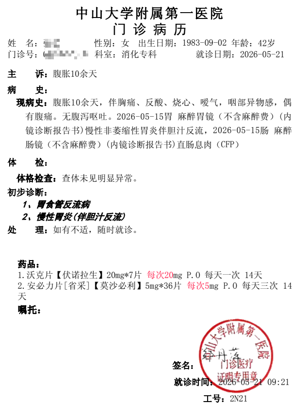
中山大学附属第一医院消化专科复诊病历专业分析报告
就诊基本信息 就诊日期：2026-05-21 09:21 医疗机构：中山大学附属第一医院 消化专科 患者信息：女性，42岁（出生日期：1983-09-02） 就诊类型：消化专科复诊（距2026-04-09首诊42天） 接诊医师：李丹 教授 关联检查：2026-05-15无痛胃镜+肠镜检查
一、就诊核心主诉
腹胀10余天，伴胸痛、反酸、烧心、嗳气及咽部异物感。
二、完整病史采集
现病史
患者近10余天无明确诱因出现持续性腹胀，为主要不适症状；伴胸骨后隐痛、反酸、烧心，餐后及平卧时加重；伴频繁嗳气、持续性咽部异物感，偶有阵发性腹部隐痛。病程中无腹泻、呕吐，无呕血、黑便，无发热、黄疸，体重无明显变化。
补充既往检查结果：2026-05-15无痛胃镜提示慢性非萎缩性胃炎伴胆汁反流；同日无痛肠镜提示直肠息肉（CFP），已内镜下钳除，病理提示增生性息肉（良性）。
既往史与系统回顾
患者有明确的躯体化障碍及焦虑抑郁状态病史（2025-05-22确诊），目前正在精神科随访治疗。无高血压、糖尿病、心脏病等慢性病史；无肝炎、结核等传染病史；无手术、外伤及输血史；无药物过敏史；无烟酒嗜好。家族中无胃肠道肿瘤病史。
三、体格检查结果
生命体征平稳，神志清楚，精神可。心肺听诊未闻及异常。腹部平坦，未见胃肠型及蠕动波；全腹软，无压痛、反跳痛及肌紧张；未触及异常包块；肝脾肋下未触及；移动性浊音阴性；肠鸣音正常，每分钟3-4次。全身其他系统查体未见明显异常。
四、初步诊断（完善确诊）
- 胃食管反流病
- 慢性非萎缩性胃炎伴胆汁反流（胃镜确诊）
- 直肠增生性息肉（内镜下钳除术后）
- 躯体化障碍
- 焦虑抑郁状态
五、诊疗安排与药物处方
药物处方
| 序号 | 商品名 | 通用名 | 规格 | 用法用量 | 疗程 | 临床作用机制 |
|---|---|---|---|---|---|---|
| 1 | 沃克片 | 伏诺拉生 | 20mg×7片 | 每次20mg，口服，每日1次，早餐前30分钟服用 | 14天 | 新型钾离子竞争性酸阻滞剂（P-CAB），强效、持久抑制胃酸分泌，首剂即可达最大抑酸效果，不受饮食及CYP2C19基因型影响，对夜间酸突破控制优于传统PPI |
| 2 | 安必力片 | 莫沙必利 | 5mg×36片 | 每次5mg，口服，每日3次，餐前15-30分钟服用 | 14天 | 5-HT4受体激动剂，促进乙酰胆碱释放，增强胃蠕动和食管下括约肌张力，加速胃排空，减少胃内容物及胆汁反流 |
一般医嘱
如有不适，随时就诊。
六、临床专业分析与解读
- 诊断明确化的客观依据
本次诊断从首诊的"胃食管反流病"疑诊，升级为"胃食管反流病+慢性非萎缩性胃炎伴胆汁反流"的明确诊断，完全基于胃镜的客观影像学证据：胃镜下可见胃黏膜充血水肿及黄绿色胆汁斑残留，为患者的腹胀、反酸、烧心、嗳气等症状提供了明确的器质性病理基础。
- 药物治疗方案的合理性分析
本次处方采用"强效抑酸+促动力"的经典联合方案，针对性覆盖胃食管反流病及胆汁反流的核心发病机制：
- 伏诺拉生作为新一代抑酸药物，起效更快（3-5天即可显著缓解症状）、抑酸更强更持久，能有效控制胃酸分泌，减少胃酸对食管及胃黏膜的刺激；
- 莫沙必利通过促进胃排空，减少胃内胆汁淤积和胃内容物潴留，从源头上降低反流发生的概率，同时改善腹胀、嗳气等动力障碍相关症状。
14天为胃食管反流病的标准初始治疗疗程，可使大多数患者的症状得到显著缓解。
- 直肠息肉的处理与随访
肠镜发现的直肠息肉为增生性息肉，是最常见的良性结肠息肉，恶变风险极低，且已在内镜下完整钳除，无需追加任何治疗。按国内外指南建议，此类息肉术后3-5年复查一次肠镜即可。
- 与躯体化障碍的叠加效应分析
患者确实存在器质性的胃食管反流病及胆汁反流，但由于其合并焦虑抑郁及躯体化障碍，对躯体症状的痛觉阈值降低，导致症状感受被显著放大，形成"器质性病理基础+功能性症状放大"的叠加模式。因此，治疗需采用"消化科治疗器质性疾病+精神科治疗心理疾病"的双轨并行策略，才能获得最佳疗效。
七、个体化诊疗建议
- 严格按医嘱服药
- 伏诺拉生：每日早餐前30分钟固定时间服用1片，连续服用14天，不要漏服或自行增减剂量；
- 莫沙必利：每日三餐前15-30分钟各服用1片，连续服用14天；如漏服一次，下次正常服用即可，不要双倍补服。
服药期间如出现腹泻、腹痛、头痛等轻微不良反应，可继续观察；如不良反应严重，需及时停药并就诊。
- 生活方式干预（与药物治疗同等重要）
- 饮食调整：少食多餐，每餐7-8分饱；避免高脂、油炸、辛辣刺激性食物；避免咖啡、浓茶、巧克力、薄荷、柑橘类水果及碳酸饮料；戒烟限酒。
- 体位管理：餐后保持站立或缓步散步至少2小时，避免立即平卧；睡眠时将床头抬高15-20cm（垫高床头而非枕头），利用重力减少夜间反流。
- 生活习惯：避免穿紧身衣、紧束腰带，减少腹压增加；控制体重，超重会显著增加反流风险；保持大便通畅，避免便秘。
- 疗效观察与复诊计划
- 伏诺拉生通常3-5天内即可明显缓解反酸、烧心症状；腹胀、嗳气等动力相关症状可能需要1-2周逐渐改善；
- 务必于14天疗程结束后返回消化科复诊，医生将根据症状缓解情况调整治疗方案：如症状完全缓解，可改为按需服药或逐步停药；如症状未完全缓解，可能需要延长疗程或进一步完善24小时食管pH-阻抗监测。
- 多学科协同治疗建议
继续在精神科规律随访，坚持抗焦虑抑郁治疗。就诊时需告知消化科医生正在服用的所有精神类药物，避免药物相互作用。心理状态的改善将显著促进消化道症状的缓解。
- 直肠息肉随访计划
本次直肠息肉已完整钳除，病理为良性增生性息肉，无需特殊处理。建议3-5年后复查一次肠镜即可。
八、急诊预警指征
若出现以下任何报警症状，请立即前往医院急诊科就诊：
- 突发剧烈腹痛，呈持续性加重，伴腹肌紧张、压痛反跳痛；
- 出现呕血、黑便或便血；
- 呕吐频繁，呕吐物为胃内容物或咖啡色液体；
- 出现进行性吞咽困难（从固体食物进展至液体食物）；
- 短期内体重不明原因下降超过5%；
- 出现发热、寒战、黄疸。
免责声明：本报告仅基于本次门诊病历信息及既往检查结果进行专业分析与解读，不构成最终医学诊断或治疗建议。所有诊疗行为均应在执业医师指导下进行，请严格遵循主诊医师的医嘱。
胃镜

麻醉胃镜检查报告解读
一、基本信息
- 患者信息：女，42岁
- 检查日期：2026-05-15
- 送检科室：消化专科
- 检查项目：麻醉（无痛）胃镜检查
- 操作情况：进镜至十二指肠降部，操作过程顺利，术中无并发症
二、检查方法说明
无痛胃镜通过静脉输注短效麻醉药物，使患者在镇静睡眠状态下接受检查，经口腔置入高清电子内镜，依次完整观察食管、贲门、胃底、胃体、胃角、胃窦、幽门、十二指肠球部及降部的黏膜状态，可精准识别炎症、糜烂、溃疡、息肉、肿瘤等病变，并可根据临床需求同步开展组织活检、止血、息肉摘除等镜下操作。
本次报告标注的“内镜下HP感染”为内镜医师基于黏膜形态的经验性判断，未行活检病理或快速尿素酶试验，不能作为幽门螺杆菌感染的确诊依据。
三、内镜下所见
| 检查部位 | 内镜表现 | 结果判定 |
|---|---|---|
| 食管 | 黏膜光滑，黏膜下血管网清晰，未见糜烂、溃疡与异常隆起 | 正常 |
| 贲门 | 齿状线清晰，贲门口收缩正常 | 正常 |
| 胃底 | 黏膜未见明显异常 | 正常 |
| 胃体 | 黏膜充血水肿，可见胆汁斑残留 | 异常 |
| 胃角 | 黏膜未见明显异常 | 正常 |
| 胃窦 | 黏膜充血水肿，红白相间，以红为主 | 异常 |
| 幽门 | 结构及开闭未见明显异常 | 正常 |
| 十二指肠球部 | 黏膜未见异常，球腔无畸形 | 正常 |
| 十二指肠降部 | 黏膜未见异常，主乳头可见 | 正常 |
四、异常结果解读
1. 慢性非萎缩性胃炎
胃体、胃窦黏膜充血水肿，胃窦黏膜红白相间、以红为主，是慢性非萎缩性胃炎（原称慢性浅表性胃炎）的典型内镜表现。“非萎缩”提示胃黏膜腺体尚未出现萎缩性改变，胃的分泌功能基本保留，病变程度较轻，是临床最常见的慢性胃炎类型。
2. 胆汁反流
胃体内可见胆汁斑残留，是胆汁反流的直接内镜证据。胆汁自十二指肠逆向反流进入胃腔，其中的胆汁酸、胆盐成分会破坏胃黏膜屏障，引发黏膜充血、水肿等化学性炎症，是本次胃炎的重要诱发因素。
胆汁反流常见于幽门括约肌功能失调、胃动力不足、胆囊功能异常、长期腹压增高等情况。
3. 幽门螺杆菌相关说明
报告标注“内镜下HP感染：阴性”，但同时注明幽门螺杆菌“未检测”，即本次检查未取活检行快速尿素酶试验或病理染色检测，仅为内镜下肉眼经验判断，准确性有限，无法完全排除幽门螺杆菌感染。
五、内镜诊断
慢性非萎缩性胃炎伴胆汁反流
六、临床建议
1. 药物治疗建议（需在消化科医师指导下使用）
- 促胃动力药物：可选用莫沙必利、伊托必利等，促进胃排空，减少胆汁在胃内停留时间，改善反流状态。
- 胃黏膜保护剂：可选用铝碳酸镁、瑞巴派特等，其中铝碳酸镁可直接结合胆汁酸，减轻胆汁对胃黏膜的损伤。
- 抑酸药物：若伴随明显反酸、烧心、上腹痛症状，可短期使用质子泵抑制剂类药物；症状较轻者无需长期强效抑酸治疗。
- 若胆汁反流症状顽固，可经医生评估后使用熊去氧胆酸类药物，优化胆汁成分，降低黏膜损伤性。
2. 饮食与生活方式调整
- 饮食规避：减少高脂、油炸、辛辣刺激食物摄入，避免咖啡、浓茶、甜食、巧克力等易降低括约肌张力、加重反流的食物。
- 进食习惯：少食多餐，避免暴饮暴食；睡前2~3小时尽量不进食，减少夜间反流风险。
- 体位管理：餐后避免立即平卧，可适当站立或慢走；睡眠时可将床头抬高15~20cm，减轻夜间反流。
- 减少腹压增高因素：避免长期便秘、久坐，避免穿过紧的衣物束腰，维持健康体重。
3. 幽门螺杆菌检测建议
建议补充行C13或C14呼气试验，准确排查幽门螺杆菌感染。若结果为阳性，需遵医嘱行规范四联根除治疗，可进一步改善胃炎、降低远期胃部病变风险。
4. 复查与进一步评估
- 若无特殊不适，可1~2年后复查胃镜，评估胃炎及胆汁反流改善情况，监测有无黏膜萎缩等进展。
- 若出现持续上腹痛、黑便、呕血、体重明显下降等情况，需及时就诊复查。
- 若胆汁反流反复发作，建议完善腹部超声检查，评估胆囊功能、有无胆囊结石等胆道系统异常，排查反流诱因。
免责声明
本报告为本次胃镜检查结果的专业解读与参考分析，不替代执业医师的当面诊断与治疗方案。具体用药及诊疗安排请务必遵循消化科主诊医师的专业指导。
肠镜

麻醉结肠镜检查报告解读
一、基本信息
- 患者信息：女，42岁
- 检查日期：2026-05-15
- 医疗机构：中山大学附属第一医院
- 送检科室：消化专科
- 检查项目：麻醉（无痛）结肠镜检查
二、检查方法说明
无痛结肠镜通过静脉输注短效麻醉药物，使患者在镇静睡眠状态下完成检查，可减少操作不适感，同时便于内镜医生细致观察全结肠黏膜。检查采用高清电子内镜，循腔进镜覆盖直肠、全结肠至回肠末端，可发现息肉、炎症、肿瘤等黏膜病变，并可同步完成息肉摘除、组织活检等镜下操作。
本次肠道准备质量采用波士顿肠道准备量表（BBPS）评估：将结肠分为右半结肠、横结肠、左半结肠3段，每段按清洁度计0~3分，总分0~9分，总分≥6分为合格，可满足病变筛查需求。
三、肠道准备评估
| 结肠分段 | BBPS评分 | 清洁度说明 |
|---|---|---|
| 右半结肠 | 2分 | 基本清洁，可见少量液体残留，不影响黏膜观察 |
| 横结肠 | 2分 | 基本清洁，黏膜可清晰显露 |
| 左半结肠 | 2分 | 基本清洁，黏膜可清晰显露 |
| 总分 | 6分 | 肠道准备合格 |
本次肠道准备达合格标准，可完整完成全结肠检查；少量残留液体不影响主体病变识别，若需进一步提升微小病变检出率，下次检查可优化肠道准备方案。
四、内镜下所见
内镜循腔进镜顺利，成功到达回肠末端，各段肠道观察结果如下：
- 回肠末端、回盲瓣、盲肠、阑尾开口：黏膜形态、色泽正常，未见异常隆起、糜烂或溃疡
- 升结肠、横结肠、降结肠、乙状结肠：黏膜光滑，血管纹理清晰，未见息肉、憩室、充血水肿等异常
- 直肠：可见1枚息肉，大小约0.3×0.3cm，山田I型，NICE分型为1型，已行内镜下钳除，标本送病理检查
- 肛管：结构及黏膜未见异常
五、直肠息肉专项解读
（一）息肉核心参数
| 参数项 | 具体结果 |
|---|---|
| 位置 | 直肠 |
| 大小 | 约0.3×0.3cm |
| 形态分型 | 山田I型 |
| 内镜下分型 | NICE 1型 |
| 处理方式 | 内镜下钳除，标本送检病理 |
（二）分型临床意义
- 山田分型
山田I型为广基扁平隆起，隆起基底部与周围黏膜平缓过渡、无明确分界，无蒂结构。该分型息肉多为良性病变，恶性转化风险极低。
- NICE分型
NICE 1型内镜下表现为黏膜血管纹理规则、无异常结构与异常着色，提示病变倾向为增生性息肉或炎性息肉，属于良性非腺瘤性病变，恶性概率极低。
六、内镜诊断
直肠息肉（CFP）
七、临床建议
- 跟进病理结果
息肉已完整钳除并送病理检查，病理诊断是判断病变性质的金标准。结合内镜下形态特征，该息肉良性可能性极高，请以最终病理报告为准，病理结果将决定后续复查间隔。
- 术后护理要点
- 饮食：检查当日可进食温凉流质饮食，术后1~2天逐步过渡至半流质、软质饮食，避免辛辣刺激、坚硬及粗纤维食物。
- 活动：术后24小时内避免剧烈运动、重体力劳动及增加腹压的动作，降低创面出血风险。
- 病情观察：留意有无便血、持续性腹痛、发热等表现；若出现大量鲜血便、剧烈腹痛，请立即就医排查迟发性出血、肠穿孔。本息肉体积小、钳除创伤小，并发症发生率极低。
- 复查随访方案
- 若病理为增生性/炎性息肉：建议3~5年后复查结肠镜。
- 若病理为腺瘤性息肉：建议1~3年后复查结肠镜。
- 若病理提示高级别上皮内瘤变等异常：需遵医嘱缩短复查周期，密切随访。
- 肠道健康管理
日常增加膳食纤维摄入，多食用新鲜蔬果、全谷物类食物，减少红肉、加工肉类摄入；保持规律运动，维持健康体重，避免长期便秘，降低肠道息肉复发风险。
- 肠道准备优化建议
下次结肠镜检查前，可提前2天开始低渣饮食，遵医嘱调整泻药服用方案（如分次服用），进一步提升肠道清洁度，更利于微小病变的检出。
免责声明
本报告为本次内镜检查结果的专业解读与参考分析，不替代执业医师的当面诊断与治疗方案。具体诊疗及随访安排请务必遵循消化科主诊医师的专业指导。
直肠病理

直肠息肉病理活体组织诊断报告解读
一、基本信息
- 患者信息：女，42岁
- 送检医疗机构：中山大学附属第一医院
- 送检科室：消化专科
- 标本类型：直肠息肉内镜切除小标本
- 收到日期：2026-05-15
- 临床诊断：直肠息肉（CFP）
二、检查方法说明
病理诊断是结直肠息肉性质判定的金标准。本次送检的内镜下钳除息肉标本，经10%中性福尔马林固定、石蜡包埋、连续切片、HE染色后，由病理医师在光学显微镜下观察组织形态与细胞结构，明确病变的组织学类型与良恶性质。因本次标本体积极小，行全埋制片处理，即全部标本均包埋切片，确保无病变遗漏，诊断结果准确可靠。
三、肉眼所见
送检（直肠）灰白软组织1粒，直径约0.2cm，标本形态完整，无坏死、破溃表现，全部组织包埋制片。
注：病理标本测量尺寸小于肠镜下测量尺寸，是组织经福尔马林固定后发生生理性收缩的正常现象，与内镜下0.3×0.3cm的描述相符。
四、病理诊断
（直肠）增生性息肉
五、病理专业解读
1. 病变核心性质
增生性息肉是结直肠最常见的非肿瘤性良性息肉，不属于癌前病变。镜下可见腺体结构规则、腺上皮呈锯齿状排列、杯状细胞丰富，细胞无异型增生、无恶性形态特征，无癌变潜能。
2. 本例病变特点
- 部位与大小：息肉位于直肠，直径仅0.2cm，属于微小息肉，是增生性息肉的好发部位与常见大小。
- 内镜匹配性：病理结果与内镜下山田I型、NICE 1型的良性内镜特征完全吻合。
- 切除完整性：息肉已完整钳除，全埋制片下未见病变残留，切除效果确切。
3. 与腺瘤性息肉的核心区别
| 对比维度 | 增生性息肉（本例） | 腺瘤性息肉 |
|---|---|---|
| 病变性质 | 非肿瘤性，良性 | 肿瘤性，属于癌前病变 |
| 癌变风险 | 无（左半结肠微小息肉） | 存在，与大小、绒毛成分占比正相关 |
| 核心组织学表现 | 腺体锯齿状改变，细胞无异型 | 腺上皮异型增生，呈管状/绒毛状结构 |
| 常规随访间隔 | 3~5年 | 1~3年 |
六、临床建议
- 无需追加治疗
本次病变为良性增生性息肉，已通过内镜下钳除完整切除，无需追加外科手术、药物或放化疗等治疗。
- 结肠镜随访方案
- 常规随访：建议3~5年后复查结肠镜，监测肠道有无新发息肉。
- 高危调整：若一级亲属（父母、亲兄弟姐妹）有结直肠癌或腺瘤性息肉病史，可将复查间隔缩短至3年，复查时告知医生相关家族史。
- 肠道健康日常管理
日常饮食增加膳食纤维（新鲜蔬菜、水果、全谷物）占比，减少红肉、加工肉制品摄入；保持规律运动，维持健康体重，养成规律排便习惯，避免长期便秘，可降低肠道息肉新发风险。
- 复查注意事项
下次结肠镜检查前可优化肠道准备方案，提升肠道清洁度，更利于微小病变的检出，降低漏诊概率。
免责声明
本报告为本次病理检查结果的专业解读与临床参考，不替代执业医师的当面诊断与诊疗方案。具体随访与健康管理安排请务必遵循消化科主诊医师的专业指导。
阴道微生态2

阴道微生态综合评价报告分析
原始报告核心信息 报告出具机构：广东省妇幼保健院（广东省妇产医院、广东省儿童医院）临床检验中心（越秀院区） 报告日期：2026-05-12 患者信息：女，42岁 送检科室：妇科门诊（越秀） 检验项目：阴道微生态综合评价 标本类型：阴道分泌物 标本状态：合格 标本号：99 检测仪器：微生态[越秀] 临床诊断：下腹痛
一、检验结果完整汇总
形态学评价
| 序号 | 项目名称 | 结果值 | 参考范围 | 结果评估 |
|---|---|---|---|---|
| 1 | 清洁度 | II度 | I~II度 | 正常 |
| 2 | 白细胞 | 少许 | - | 少量 |
| 3 | 上皮细胞 | ++ | ++~++++ | 正常 |
| 4 | 菌群密集度 | +++ | ++~++++ | 正常上限 |
| 5 | 菌群多样性 | +++ | ++~++++ | 正常上限 |
| 6 | 革兰阳性大杆菌比例 | 25% | 70%~95% | 明显降低 |
| 7 | 其他细菌比例 | 75% | 5%~30% | 明显升高 |
| 8 | 线索细胞 | - | - | 阴性 |
| 9 | 形似加德纳菌/拟杆菌 | - | - | 阴性 |
| 10 | 形似动弯杆菌 | - | - | 阴性 |
| 11 | 革兰阳性球菌 | - | - | 阴性 |
| 12 | 革兰阴性杆菌 | - | - | 阴性 |
| 13 | 真菌孢子 | - | - | 阴性 |
| 14 | 芽生孢子 | - | - | 阴性 |
| 15 | 假菌丝 | - | - | 阴性 |
| 16 | 滴虫 | - | - | 阴性 |
| 17 | 细胞内G⁻双球菌 | - | - | 阴性 |
评分系统
| 序号 | 项目名称 | 结果值 | 参考范围 | 结果评估 |
|---|---|---|---|---|
| 1 | Nugent评分 | 2分 | 0~3分 | 正常 |
| 2 | AV评分 | 1分 | 0~2分 | 正常 |
化学分析
| 序号 | 项目名称 | 结果值 | 参考范围 | 结果评估 |
|---|---|---|---|---|
| 1 | pH值 | ≥4.6 | 3.8~4.5 | 升高 |
| 2 | 过氧化氢 | + | - | 阳性 |
| 3 | 白细胞酯酶 | + | - | 阳性 |
| 4 | 唾液酸苷酶 | - | - | 阴性 |
| 5 | 凝固酶 | - | - | 阴性 |
| 6 | β-葡萄糖醛酸酶 | - | - | 阴性 |
二、评价结论
阴道微生态失衡
三、异常指标专项分析
- 革兰阳性大杆菌比例25%（明显降低）
革兰阳性大杆菌（主要为产过氧化氢的乳杆菌）是阴道微生态的核心优势菌，通过产酸维持阴道酸性环境、分泌过氧化氢抑制致病菌生长，构成阴道最重要的防御屏障。比例从正常70%-95%降至25%，提示阴道核心防御功能显著下降。
- 其他细菌比例75%（明显升高）
阴道内条件致病菌过度增殖，菌群结构发生根本性紊乱，但尚未形成单一优势致病菌，属于菌群失调的早期阶段。
- pH值≥4.6（升高）
乳杆菌产酸能力不足导致阴道酸性屏障破坏，pH值升高会进一步促进致病菌繁殖，增加感染风险。
- 过氧化氢阳性（+）
直接提示产过氧化氢的乳杆菌数量减少或功能缺陷，与革兰阳性大杆菌比例降低的结果一致，是乳杆菌功能受损的特异性指标。
- 白细胞酯酶阳性（+）
提示阴道黏膜存在轻度炎症反应，由失调的菌群刺激黏膜引起，并非特异性感染导致的炎症。
- 菌群密集度及多样性升高（正常上限）
与非优势菌过度生长的病理状态相符，进一步佐证菌群结构紊乱。
四、整体结果综合解读
- 结果可靠性验证：本报告与同日另一份阴道微生态报告所有指标数据完全一致，排除单次检测误差，结果准确可靠。
- 微生态状态分期：目前处于细菌性阴道病前期（阴道微生态亚健康状态）。Nugent评分2分、AV评分1分均在正常范围但接近临界值，尚未发展为明确的细菌性阴道病、需氧菌性阴道炎等病理性炎症。
- 特异性感染排除：线索细胞、真菌、滴虫、细胞内G⁻双球菌均为阴性，彻底排除外阴阴道假丝酵母菌病、滴虫性阴道炎、淋病奈瑟菌感染等常见特异性阴道炎。
- 诱因分析：患者存在阴道脱垂病史，阴道前后壁闭合不全，外界细菌易侵入定植，同时局部黏膜抵抗力下降，是本次菌群失调的重要诱因。
- 与临床症状的关联性：单纯轻度阴道微生态失衡一般不会引起明显下腹痛。若腹痛持续不缓解，需警惕菌群上行感染引起的子宫内膜炎、盆腔炎等盆腔炎症，或肠道、泌尿系统等非妇科病因。
五、医学建议
- 阴道微生态修复治疗
- 优先补充活性乳杆菌制剂：选用阴道用乳杆菌栓剂或胶囊，每晚1粒，连用7-10天为1疗程，重建阴道优势菌群。用药期间禁止使用抗生素及阴道冲洗。
- 辅助pH调节：可在医生指导下使用乳酸阴道凝胶，帮助快速恢复阴道酸性环境。
- 局部护理与生活方式调整
- 严格禁止任何形式的阴道冲洗（包括清水、生理盐水及各类妇科洗液），避免进一步破坏微生态平衡。
- 每日仅用温水清洗外阴即可，保持外阴清洁干燥；穿纯棉透气内裤，每日更换，避免紧身化纤内裤及长期使用护垫。
- 治疗期间避免性生活，或全程使用避孕套；避免不洁性生活。
- 病因根治与预防复发
- 阴道脱垂是菌群失调反复发作的重要危险因素，建议至妇科盆底专科就诊，完善盆底功能评估，必要时进行盆底肌康复训练或其他针对性治疗。
- 复查与随访
- 停药后1个月（避开月经期）复查阴道微生态，评估乳杆菌比例、pH值及炎症指标恢复情况。
- 若复查仍提示微生态失衡，可再巩固1个疗程的乳杆菌治疗。
- 下腹痛相关排查
- 若下腹痛持续不缓解、进行性加重，或出现发热、阴道分泌物增多伴异味、不规则阴道出血等症状，需及时就医，完善妇科查体、血常规、盆腔超声等检查，排除盆腔炎性疾病。
免责声明：本报告仅基于本次检验数据进行客观分析，不构成最终医学诊断、治疗方案或用药建议。所有诊疗决策必须由执业医师结合患者临床症状、体征及其他辅助检查结果综合制定。
阴道微生态

阴道微生态综合评价报告解读
报告基本信息
- 患者信息：女，42岁
- 送检科室：妇科门诊（越秀院区）
- 标本类型：阴道分泌物
- 标本状态：合格
- 临床诊断：下腹痛
- 检测项目：阴道微生态综合评价
- 采样时间：2026-05-12
- 报告时间：2026-05-12
- 医疗机构：广东省妇幼保健院（越秀院区）
一、检测方法概述
本次检测采用形态学镜检联合生化酶学分析的综合评价体系：通过湿片镜检、革兰氏染色油镜观察评估阴道菌群的密度、多样性、优势菌占比及病原体形态；通过功能酶学试验检测阴道局部代谢产物与炎症标志物；配套Nugent评分、AV评分系统，对细菌性阴道病、需氧菌性阴道炎进行标准化诊断，全面反映阴道菌群结构、功能状态及局部免疫炎症水平。
二、检验结果
（一）形态学镜检结果
| 检测项目 | 结果 | 参考范围 | 结果判定 |
|---|---|---|---|
| 清洁度 | II度 | I~II度 | 正常 |
| 白细胞 | 少许 | - | 少量 |
| 上皮细胞 | ++ | ++~++++ | 正常 |
| 菌群密集度 | +++ | ++~++++ | 偏高 |
| 菌群多样性 | +++ | ++~++++ | 偏高 |
| 革兰阳性大杆菌比例 | 25% | 70%~95% | 显著降低 |
| 其他细菌比例 | 75% | 5%~30% | 显著升高 |
| 线索细胞 | 阴性 | 阴性 | 正常 |
| 形似加德纳菌/拟杆菌 | 阴性 | 阴性 | 正常 |
| 形似动弯杆菌 | 阴性 | 阴性 | 正常 |
| 革兰阳性球菌 | 阴性 | 阴性 | 正常 |
| 革兰阴性杆菌 | 阴性 | 阴性 | 正常 |
| 真菌孢子 | 阴性 | 阴性 | 正常 |
| 芽生孢子 | 阴性 | 阴性 | 正常 |
| 假菌丝 | 阴性 | 阴性 | 正常 |
| 滴虫 | 阴性 | 阴性 | 正常 |
| 细胞内G⁻双球菌 | 阴性 | 阴性 | 正常 |
（二）标准化评分结果
| 评分项目 | 得分 | 参考范围 | 结果判定 |
|---|---|---|---|
| Nugent评分 | 2分 | 0~3分（正常） | 正常，无细菌性阴道病（BV） |
| AV评分 | 1分 | 0~2分（正常） | 正常，无需氧菌性阴道炎（AV） |
（三）生化酶学检测结果
| 检测项目 | 结果 | 参考范围 | 结果判定 |
|---|---|---|---|
| pH值 | ≥4.6 | 3.8~4.5 | 升高 |
| 过氧化氢 | 阳性（+） | 阴性 | 异常 |
| 白细胞酯酶 | 阳性（+） | 阴性 | 异常 |
| 唾液酸苷酶 | 阴性 | 阴性 | 正常 |
| 凝固酶 | 阴性 | 阴性 | 正常 |
| β-葡萄糖醛酸酶 | 阴性 | 阴性 | 正常 |
三、综合评价结论
阴道微生态失衡（菌群失调期，伴轻度非特异性炎症）
四、异常指标解读
- 菌群结构核心异常
革兰阳性大杆菌（以产过氧化氢的乳杆菌为核心，是阴道优势保护菌）占比仅25%，远低于正常参考下限70%；伴随其他杂菌占比升至75%，是本次微生态失衡的核心表现，提示阴道菌群的优势保护菌定植不足，杂菌过度增殖，菌群稳态被打破。
- 阴道屏障功能受损
阴道pH值升高至≥4.6，超出正常酸性环境范围，结合过氧化氢试验阳性，提示产H₂O₂乳杆菌的数量与功能均下降，阴道的酸性化学屏障、生物屏障功能减弱，对外源病原体的抵抗力降低。
- 局部轻度炎症反应
白细胞酯酶阳性、镜下白细胞少许，提示阴道黏膜存在轻度非特异性炎症反应，为菌群失调继发的黏膜免疫应答，并非特异性病原体感染导致的炎症。
- 特异性阴道炎排除
Nugent评分2分、线索细胞及相关致病菌阴性，不符合细菌性阴道病诊断标准；AV评分1分，排除需氧菌性阴道炎；真菌、滴虫、细胞内G⁻双球菌均为阴性，可排除外阴阴道假丝酵母菌病、滴虫性阴道炎及淋球菌感染。
- 临床症状关联分析
患者伴随下腹痛症状，需警惕阴道菌群失调的上行感染风险，可能与盆腔炎症、子宫内膜炎症存在关联；同时年龄因素（围绝经期雌激素波动）、盆底结构异常（如阴道壁脱垂）、近期用药史、免疫状态波动等均可能是菌群失衡的诱发因素。
五、临床干预建议
1. 阴道微生态修复治疗
- 核心方案：补充阴道用乳杆菌活菌制剂（栓剂/胶囊剂型），直接补充优势乳杆菌，重建阴道菌群优势，疗程常规7~10天，建议月经干净后巩固2~3个周期，提升菌群稳态。
- 辅助调节：可配合含乳酸的阴道外用凝胶，辅助纠正阴道pH值，恢复酸性环境，为乳杆菌定植创造条件。
2. 生活方式与局部护理指导
- 严格禁止阴道灌洗、阴道内冲洗，避免使用碱性洗护产品清洁外阴，仅用温水清洁外阴即可，减少对阴道微环境的人为破坏。
- 日常选择透气棉质内衣，避免长期使用护垫，减少局部潮湿闷热环境。
- 炎症期建议减少性生活频次，避免外源性因素干扰菌群修复。
3. 病因针对性干预
- 建议同步评估盆底功能与阴道壁脱垂情况，若存在盆底功能障碍、阴道脱垂，需通过盆底康复治疗（生物反馈、电刺激、凯格尔训练）或手术方式纠正诱因，从根源减少菌群失调复发。
- 结合年龄与月经情况，评估雌激素水平，若存在围绝经期阴道黏膜萎缩，可在医生评估后局部使用雌激素制剂改善阴道黏膜状态，利于乳杆菌定植。
4. 症状管理与进一步检查
- 针对下腹痛症状，若疼痛持续、加重或伴随腰骶部坠胀、白带异常增多，建议完善妇科查体、盆腔超声检查，排查盆腔炎性疾病、子宫内膜炎等上行感染问题，必要时针对性抗感染治疗。
- 可根据临床需求进一步行一般细菌培养、念珠菌鉴别培养等检查，排查隐匿性感染。
5. 随访复查
- 建议用药结束后1个月（避开月经期）复查阴道微生态综合评价，评估乳杆菌占比、pH值及炎症指标的恢复情况，根据复查结果调整后续巩固方案。
免责声明
本报告为基于本次送检标本的检验结果进行的专业解读与科普性分析，仅作临床参考，不替代执业医师的当面诊断与治疗方案。具体诊疗措施请务必遵循主诊医师的专业判断与医嘱。
妇科超声

经阴道妇科彩色多普勒超声检查报告分析
原始报告核心信息 报告出具日期：2026-05-12 17:39:28 医疗机构：广东省妇幼保健院（广东省妇产医院、广东省儿童医院） 患者信息：女，42岁 就诊科室：妇科门诊（越秀院区） 检查项目：经阴道妇科彩色多普勒超声检查 检查仪器：HITACHI超声诊断仪，探头C41V1 临床诊断：下腹痛
一、检查方法概述
经阴道超声（TVS）是妇科盆腔疾病诊断的首选影像学技术，探头直接置于阴道后穹隆，距离子宫、卵巢及盆腔组织更近，图像分辨率显著高于经腹超声，无需充盈膀胱，对子宫内膜病变、宫腔占位、卵巢微小病变及早期异位妊娠的诊断价值更高。彩色多普勒血流显像（CDFI）可评估病变内部及周边的血流灌注特征，辅助判断病变良恶性倾向。
二、超声检查所见完整汇总
子宫及宫腔
- 子宫位置：后位（正常生理位置）
- 子宫大小：长径50mm，前后径45mm，横径50mm（大小正常，符合育龄期女性子宫标准）
- 宫肌层：回声均匀，未见明显肌瘤、腺肌症或局灶性异常回声
- 子宫内膜：厚度13mm，回声欠均匀；宫腔内可见多个稍高回声团，最大者约11mm×6mm，边界清晰，内部回声分布均匀
- 彩色多普勒：上述稍高回声团边缘及内部未探及明显彩色血流信号
双侧附件及盆腔
- 左卵巢大小：26mm×14mm（正常范围）
- 右卵巢大小：29mm×21mm（正常范围）
- 双侧附件区：未见明显囊性、实性或混合性包块
- 盆腔：未见明显游离积液
三、超声诊断提示
宫腔内稍高回声团声像——内膜息肉？其他性质未排。
双侧附件未见明显包块。
建议经后复查。
四、异常发现专项分析
1. 子宫内膜增厚（13mm）
- 正常参考值：育龄期女性子宫内膜厚度随月经周期呈周期性变化：
- 月经期（第1-4天）：<5mm
- 增殖期（第5-14天）：4-10mm
- 分泌期（第15-28天）：8-16mm
- 临床意义：本次内膜厚度13mm处于分泌期正常上限。若检查时处于月经周期第15-28天，该厚度为生理性表现；若处于月经刚结束的增殖早期，则提示内膜异常增厚。
- 复查必要性：月经干净后3-5天子宫内膜最薄（通常<8mm），此时复查可排除生理性增厚的干扰，准确判断是否存在病理性内膜增厚。
2. 宫腔内多发稍高回声团（最大11mm×6mm）
- 病变性质倾向性分析：
- 高度提示子宫内膜息肉：超声表现完全符合子宫内膜息肉的典型特征——宫腔内边界清晰的稍高回声团、内部回声均匀、无明显血流信号。
- 良性可能性大：病变血供不丰富，边界规则，无浸润性表现，恶性风险极低（育龄期女性子宫内膜息肉恶变率<1%）。
- 鉴别诊断：
- 粘膜下子宫肌瘤：多表现为低回声或等回声团，常向宫腔内突出，多数可见较丰富的血流信号
- 子宫内膜增生：多表现为内膜弥漫性增厚，回声不均，无明确局灶性占位
- 子宫内膜癌：多表现为内膜不规则增厚、回声杂乱，常伴丰富血流信号，多见于绝经后女性
- 大小评估：最大息肉直径11mm，属于中等大小息肉；多发息肉较单发息肉更易引起临床症状，且复发率相对较高。
五、整体结果综合解读
- 正常结构评估：子宫大小、形态正常，宫肌层回声均匀，排除子宫肌瘤、子宫腺肌病；双侧卵巢大小正常，无囊肿、肿瘤等病变；盆腔无积液，排除明显盆腔炎症。
- 核心异常：唯一异常为宫腔内多发稍高回声团伴内膜增厚，高度提示子宫内膜息肉，无恶性病变的超声征象。
- 与临床症状的关联性：患者主诉下腹痛，但超声未发现盆腔炎、附件炎、卵巢囊肿蒂扭转等常见腹痛病因。子宫内膜息肉一般不引起明显下腹痛，多表现为月经量增多、经期延长、经间期不规则出血或不孕。建议进一步排查下腹痛的其他原因，如肠道疾病、泌尿系统疾病或盆腔慢性疼痛。
六、医学建议
- 规范复查超声
- 请于下次月经完全干净后3-5天内复查经阴道妇科超声，此时子宫内膜最薄，可清晰判断内膜厚度是否恢复正常，以及宫腔内稍高回声团是否持续存在。
- 若复查时内膜厚度<8mm且高回声团消失，提示为生理性内膜增厚或一过性内膜增生，无需特殊处理。
- 诊疗建议（如复查异常）
- 若复查确认宫腔内息肉持续存在，建议行宫腔镜检查+子宫内膜息肉切除术。宫腔镜是诊断子宫内膜息肉的金标准，可在直视下完整切除息肉，避免盲目刮宫的漏诊风险。
- 切除的所有组织必须送病理组织学检查，明确病变性质，排除不典型增生或恶性病变。
- 症状管理与观察
- 密切观察月经情况，记录是否出现月经量增多、经期延长、经间期点滴出血或不规则阴道流血等子宫内膜息肉典型症状。
- 若下腹痛持续不缓解或加重，建议进一步完善相关检查，排查消化系统、泌尿系统及盆腔慢性疼痛等其他病因。
- 定期随访
- 子宫内膜息肉术后复发率约为10%-30%，术后建议每年复查1次妇科超声。
- 42岁处于围绝经期前期，激素水平波动较大，建议每年常规进行妇科体检，包括妇科超声、宫颈TCT/HPV筛查。
免责声明：本报告仅基于本次超声检查数据进行客观分析，不构成最终医学诊断、治疗方案或用药建议。所有诊疗决策必须由执业医师结合患者临床症状、体征及其他辅助检查结果综合制定。
乳腺超声

乳腺及其引流区淋巴结彩色多普勒超声检查报告分析
原始报告核心信息 报告出具日期：2026-05-12 17:38:48 医疗机构：广东省妇幼保健院（广东省妇产医院、广东省儿童医院） 患者信息：女，42岁 就诊科室：妇科门诊（越秀院区） 检查项目：乳腺及其引流区淋巴结彩色多普勒超声检查 检查仪器：HITACHI超声诊断仪，探头L55 临床诊断：下腹痛
一、检查方法概述
乳腺超声是乳腺疾病筛查与诊断的首选影像学技术，对致密型乳腺（育龄期女性常见）的病变检出率显著高于乳腺X线检查。可清晰分辨乳腺腺体层次，准确识别囊性、实性及混合性病灶；彩色多普勒血流显像（CDFI）可评估病灶内部及周边血流灌注特征，辅助判断病变良恶性倾向。超声引导下穿刺活检是乳腺病变确诊的金标准。
二、超声检查所见完整汇总
双侧乳腺背景
双侧乳腺呈不均匀背景回声，符合育龄期女性乳腺增生的典型超声表现。
左侧乳腺
- 可见多个椭圆形无回声区，呈散在分布
- 最大病灶：约2mm（纵径）×6mm（横径），位于左乳1点钟方向，距乳头0mm（近乳头区）
- 病灶特征：内见纤细分隔光带，边缘清晰锐利，后方回声稍增强
- 彩色多普勒：无回声区边缘及内部未检出血流信号
右侧乳腺
- 可见多个椭圆形无回声区，呈散在分布，部分病灶内透声欠佳
- 最大病灶：约2mm（纵径）×5mm（横径），位于右乳10点钟方向，距乳头20mm
- 病灶特征：边缘清晰锐利，后方回声稍增强
- 彩色多普勒：无回声区边缘及内部未检出血流信号
双侧腋窝
双侧腋窝未探及肿大淋巴结回声，皮髓质分界清晰，淋巴门结构正常。
三、超声诊断与BI-RADS分级
诊断提示
双侧乳腺BI-RADS分类3类。
BI-RADS分级解读
- BI-RADS 3级：可能良性发现，恶性概率＜2%
- 分级依据：所有病灶均为无回声囊性结构，边界清晰、形态规则、无血流信号，符合典型良性病变特征；但仍需短期随访确认病变稳定性，排除极少数不典型恶性病变。
四、异常发现专项分析
1. 双侧乳腺多发囊肿
- 生物学本质：乳腺囊肿是乳腺终末导管小叶单位扩张形成的囊性病变，内含液体，为育龄期女性最常见的乳腺良性病变，与体内雌激素、孕激素水平周期性波动密切相关。
- 良性特征确认：所有病灶均为椭圆形无回声、边缘清晰、后方回声增强、无血流信号，完全符合单纯性/复杂性乳腺囊肿的超声诊断标准，恶性风险极低。
2. 左乳囊肿伴纤细分隔
- 左乳最大囊肿内可见纤细分隔光带，属于复杂性囊肿的一种表现。分隔薄且均匀、无增厚及实性成分，无血流信号，仍为良性特征，无需过度担忧。
3. 右乳部分囊肿透声欠佳
- 透声欠佳提示囊肿内可能含有少量蛋白沉积物、细胞碎屑或陈旧性液体，为囊肿的常见生理性演变，不代表恶性变。若透声差同时伴囊壁增厚、实性结节或血流信号，则需警惕恶性可能。
五、整体结果综合解读
- 核心结论：本次超声检查仅发现双侧乳腺多发良性囊肿，无实性占位、无恶性征象、无腋窝淋巴结肿大，整体乳腺状况良好。
- 背景回声解读：双侧乳腺不均匀背景回声为乳腺增生的表现，是育龄期女性的正常生理变化，并非疾病，无需特殊治疗。
- 与临床诊断的关联性：本次乳腺检查结果与患者主诉的"下腹痛"无直接因果关系，下腹痛病因需结合妇科、消化科等相关检查进一步排查。
六、医学建议
- 规范随访管理
- 按照BI-RADS 3级标准管理要求，建议6个月后复查乳腺超声，观察囊肿大小、形态、内部回声及血流信号变化。
- 若复查囊肿稳定无变化，可延长至每年1次常规乳腺超声筛查；若囊肿明显增大、出现实性成分或血流信号，需进一步评估，必要时行超声引导下穿刺活检明确性质。
- 联合筛查建议
- 42岁女性属于乳腺癌筛查重点人群，建议每年进行乳腺超声+乳腺X线（钼靶）联合筛查。若近期未行乳腺X线检查，建议在本次检查后1年内补做，全面评估乳腺健康状况。
- 囊肿处理原则
- 目前囊肿体积微小（最大直径仅6mm），无任何临床症状，无需手术治疗，也无需药物干预。
- 若后续囊肿增大至＞3cm且引起明显乳房胀痛、压迫症状，可在超声引导下行囊肿穿刺抽液术缓解症状。
- 生活方式调整
- 保持情绪稳定，避免长期焦虑、熬夜及过度劳累；规律作息，适当进行体育锻炼。
- 减少咖啡因、浓茶、巧克力及高糖高脂食物摄入；避免自行服用含雌激素的保健品或药物。
- 穿戴合身的棉质内衣，避免过紧压迫乳房；每月进行1次乳房自我检查，月经干净后7-10天为最佳检查时间。
- 就医指征
- 出现乳房肿块迅速增大、质地变硬、边界不清
- 乳头溢液（尤其是血性溢液）、乳头内陷、乳房皮肤橘皮样改变
- 腋窝出现无痛性肿大淋巴结
免责声明：本报告仅基于本次超声检查数据进行客观分析，不构成最终医学诊断、治疗方案或用药建议。所有诊疗决策必须由执业医师结合患者临床症状、体征及其他辅助检查结果综合制定。
耳内镜

耳内镜检查报告分析
原始报告核心信息 报告出具日期：2026-04-13 医疗机构：广东省妇幼保健院（广东省儿童医院、广东省妇产医院） 患者信息：女，42岁 就诊科室：耳鼻咽喉头颈外科（越秀院区） 检查部位：耳内镜 临床诊断：耵聍栓塞、耳鸣
一、检查方法概述
耳内镜是一种高分辨率光学内镜检查技术，通过耳道进入可放大数十倍清晰观察外耳道深部、鼓膜全貌及中耳相关结构，能精准发现传统额镜难以察觉的微小病变，同时可同步留存影像资料，为诊断和随访提供客观依据。
二、内镜下检查所见
结合本次检查影像及报告描述：
- 右耳：外耳道可见少许散在耵聍附着，鼓膜完整，形态正常，无充血、水肿、穿孔或内陷，光锥、锤骨柄等解剖标志清晰。
- 左耳：外耳道可见少许散在耵聍附着，鼓膜完整，光锥、锤骨柄等解剖标志尚可辨认；鼓膜呈轻度弥漫性充血，未见穿孔、积液、肉芽或胆脂瘤样改变。
三、检查结论
双外耳道少许耵聍，右鼓膜未见充血征；左鼓膜稍红、完整，标志尚可。
四、异常发现专项分析
1. 双外耳道少许耵聍
- 临床意义：耵聍为外耳道耵聍腺正常分泌物，具有保护耳道和鼓膜的作用。本次检查仅见少量散在耵聍，未形成耳道阻塞，与临床初步诊断“耵聍栓塞”存在差异，提示耵聍堆积程度极轻。
- 症状关联性：少量耵聍一般不影响听力，但若耵聍碎片靠近鼓膜表面，可能随头部活动或吞咽产生轻微耳闷、耳鸣或异响。
2. 左耳鼓膜轻度充血
- 严重程度：轻度，无病理性结构破坏
- 可能病因：
- 生理性/刺激性因素：挖耳损伤、耳道进水、耵聍摩擦刺激鼓膜
- 轻度炎症反应：外耳道轻微炎症、上呼吸道感染波及咽鼓管导致中耳短暂充血
- 检查操作本身的短暂刺激
- 排除性判断：鼓膜完整、标志尚可，无穿孔、内陷、液平，可排除急性化脓性中耳炎、分泌性中耳炎等严重中耳病变。
五、整体结果综合解读
- 本次检查核心结论：耳内镜下未发现需要紧急干预的器质性病变，双耳结构基本正常。
- 与临床症状的关联性分析：
- 传导性耳鸣病因已基本排除：耵聍量少未阻塞耳道，鼓膜完整无穿孔、积液，无明显中耳病变导致的传导性听力损失或耳鸣。
- 结合同日纯音测听报告（双耳气导均值19-21dB，听力正常），患者主诉的耳鸣高度提示为感音神经性耳鸣，病变部位多位于内耳、听神经或听觉中枢。
- 左耳充血的临床价值：孤立性轻度鼓膜充血无伴随症状时，多为自限性，无需特殊药物治疗。
六、医学建议
- 耵聍管理
- 目前耵聍量少，若无症状可暂不清理，外耳道具有自洁功能，耵聍可随咀嚼、张口动作自行排出。
- 若出现耳闷、耳鸣加重或听力下降，可至耳鼻喉科门诊由医生在耳内镜下用专业器械清理，严禁自行用棉签、挖耳勺深入耳道操作，以免将耵聍推至鼓膜处或损伤鼓膜、外耳道皮肤。
- 如耵聍质地坚硬难以取出，可遵医嘱先用5%碳酸氢钠滴耳液滴耳，每次2-3滴，每日3-4次，软化3-5天后再行清理。
- 左耳鼓膜充血观察
- 无需常规使用抗生素滴耳液或口服抗生素。
- 注意保持耳道干燥，洗头、洗澡时可用干棉球堵塞外耳道口，避免污水进入；禁止游泳直至充血消退。
- 避免用力擤鼻涕、挖耳等可能加重充血的行为。
- 耳鸣综合管理
- 优先排查全身性诱因：监测血压、血糖、血脂水平，改善睡眠质量，避免长期熬夜、过度劳累及精神焦虑。
- 生活方式调整：减少耳机使用时间（每日不超过1小时，音量不超过60分贝），避免长期暴露于噪声环境；减少咖啡因、酒精摄入。
- 声掩蔽疗法：在安静环境中可播放轻柔的白噪音（如雨声、流水声）掩蔽耳鸣，减轻耳鸣对日常生活的干扰。
- 专科随访：若耳鸣持续超过3个月、进行性加重，或伴随听力下降、眩晕、头痛等症状，建议进一步完善耳声发射、听觉脑干诱发电位（ABR）、耳鸣匹配等检查，明确耳鸣性质并制定针对性治疗方案。
- 随访指征
- 出现耳痛、耳道流脓、听力突然下降
- 耳鸣加重并伴随眩晕、头痛、面部麻木
- 左耳鼓膜充血持续不缓解或加重
免责声明：本报告仅基于本次耳内镜检查数据进行客观分析，不构成最终医学诊断、治疗方案或用药建议。所有诊疗决策必须由执业医师结合患者临床症状、体征及其他辅助检查结果综合制定。
听力报告

纯音裸耳听力报告分析
原始报告核心信息 报告出具日期：2026-04-13 医疗机构：广东省妇幼保健院（广东省妇产医院、广东省儿童医院）耳鼻咽喉头颈外科临床听力中心 患者信息：女，42岁 检查项目：纯音裸耳听阈测试（气导AC+骨导BC） 测试条件：AC：贴耳式耳机；BC：骨导耳机（BCE） 测试频率：气导125Hz-8kHz，骨导500Hz、1kHz、2kHz、4kHz 临床关联：同日完成耳内镜检查，临床诊断为耵聍栓塞、耳鸣
一、检查方法概述
纯音听阈测试是目前评估听力损失程度和性质的金标准。通过向受试者播放不同频率的纯音，测定其能听到的最小声音强度（单位：dB HL）：
- 气导（AC）：声音经外耳道-鼓膜-听骨链传导至内耳，反映整个听觉传导通路的综合功能
- 骨导（BC）：声音直接通过颅骨振动刺激内耳，绕过外耳和中耳，仅反映内耳毛细胞及听神经的感音功能
- 气骨导差（AI）：气导与骨导听阈的差值。差值＞10dB提示存在传导性听力损失；差值＜10dB为正常；两者同步升高提示感音神经性听力损失
二、听力图详细结果
右耳（红色标识）
| 频率(Hz) | 125 | 250 | 500 | 1k | 2k | 4k | 8k | 均值 |
|---|---|---|---|---|---|---|---|---|
| 气导(AC) | 15 | 20 | 20 | 20 | 20 | 20 | 0 | 19 dB HL |
| 骨导(BC) | - | - | - | - | - | - | - | 18 dB HL |
| 气骨导差 | - | - | - | - | - | - | - | 1 dB HL |
左耳（蓝色标识）
| 频率(Hz) | 125 | 250 | 500 | 1k | 2k | 4k | 8k | 均值 |
|---|---|---|---|---|---|---|---|---|
| 气导(AC) | 20 | 20 | 20 | 20 | 25 | 20 | 20 | 21 dB HL |
| 骨导(BC) | - | - | - | - | - | - | - | 21 dB HL |
| 气骨导差 | - | - | - | - | - | - | - | 0 dB HL |
纯音听阈均值汇总
| 耳别 | 气导均值(AC) | 骨导均值(BC) | 气骨导差(AI) |
|---|---|---|---|
| 右耳 | 19 dB HL | 18 dB HL | 1 dB HL |
| 左耳 | 21 dB HL | 21 dB HL | 0 dB HL |
注：纯音听阈均值(PTA)为500Hz、1kHz、2kHz、4kHz四个言语核心频率气导听阈的算术平均值
三、听力分级与整体评估
WHO 2021版听力损失分级
| 耳别 | 纯音听阈均值 | 听力分级 | 临床描述 |
|---|---|---|---|
| 右耳 | 19 dB HL | 正常听力 | 可清晰听清日常言语交流，无任何听力障碍 |
| 左耳 | 21 dB HL | 正常听力 | 处于正常范围上限，无临床意义的听力损失 |
WHO分级标准：≤25 dB HL为正常听力；26-40 dB HL为轻度听力损失；41-60 dB HL为中度听力损失；61-80 dB HL为重度听力损失；≥81 dB HL为极重度听力损失
多维度综合评估
| 评估维度 | 评估结论 |
|---|---|
| 双耳整体听力水平 | 完全正常 |
| 外耳-中耳传导功能 | 无异常（气骨导差均＜10dB） |
| 内耳-听神经感音功能 | 无异常（骨导均值全部正常） |
| 双耳听力对称性 | 基本对称（均值差仅2dB，属正常个体差异） |
| 高频听力（4-8kHz） | 右耳8kHz听阈极佳，左耳全高频均在正常范围 |
| 言语识别能力预估 | 优秀（言语核心频率听阈均≤20dB） |
四、结果深度解读
- 全频率听力正常：双耳125Hz-8kHz所有测试频率听阈均≤25dB HL，符合WHO正常听力标准。其中言语交流最关键的500Hz-2kHz频段听阈均为20dB HL，提示日常对话、电话交流等场景下听力完全正常。
- 彻底排除传导性病变：双耳气骨导差分别为1dB和0dB，远低于10dB的异常阈值。结合同日耳内镜报告（外耳道通畅、鼓膜完整），可完全排除耵聍栓塞、外耳道炎、中耳炎、鼓膜穿孔、听骨链异常等所有外耳、中耳来源的传导性听力损失。
- 感音神经功能完好：双耳骨导均值均在正常范围，无高频或低频感音神经性听力下降，提示内耳毛细胞、听神经及听觉中枢的生理功能基本正常。
- 左耳轻微差异的临床意义：左耳2kHz听阈为25dB HL，均值21dB HL略高于右耳，但该差值在正常个体差异范围内，可能与测试时注意力波动、短暂疲劳或生理差异有关，无病理诊断价值。
- 与耳鸣症状的关键关联：患者存在耳鸣主诉但听力完全正常，且无任何传导性病变证据，因此耳鸣性质可明确指向特发性感音神经性耳鸣。此类耳鸣多与内耳微循环障碍、毛细胞兴奋性异常、听觉中枢重塑或精神心理因素相关，与外耳、中耳结构异常无关。
五、医学建议
- 听力相关处理：目前双耳听力处于正常水平，无需佩戴助听器，也无需使用任何改善听力的药物。
- 听力保护措施
- 严格遵守噪声防护“60-60原则”：使用耳机时音量不超过最大音量的60%，连续使用时间不超过60分钟；优先选择头戴式耳机，避免长时间使用入耳式耳机。
- 避免长期暴露于85dB以上的强噪声环境（如嘈杂的商场、工地、KTV等）；在噪声环境中工作或活动时，建议佩戴隔音耳塞或耳罩。
- 定期听力监测
- 建议每1-2年复查一次纯音听阈测试，重点关注4kHz、8kHz等高频听力变化（年龄相关性听力损失通常最早累及高频区域）。
- 若出现单侧听力突然下降、耳鸣进行性加重、耳闷胀感、眩晕或头痛等症状，需立即就医，排除突发性耳聋等急症。
- 耳鸣综合管理（结合耳内镜报告）
- 全身性因素排查：完善血压、血糖、血脂、血常规及甲状腺功能检查，排除贫血、高血压、糖尿病、甲状腺功能异常等可能诱发或加重耳鸣的全身性疾病。
- 生活方式调整：规律作息，保证充足睡眠；减少咖啡因、浓茶、酒精摄入；避免吸烟及二手烟暴露；适当进行有氧运动，缓解精神压力。
- 声掩蔽疗法：在安静环境中可播放轻柔的白噪音（如雨声、流水声、森林自然音）掩蔽耳鸣，减轻耳鸣对睡眠和日常生活的干扰。
- 专科随访：若耳鸣持续超过3个月、严重影响睡眠或情绪，建议进一步完善耳声发射、听觉脑干诱发电位（ABR）、耳鸣匹配及响度评估等专科检查，制定个性化治疗方案。
免责声明：本报告仅基于本次纯音听阈测试数据进行客观分析，不构成最终医学诊断、治疗方案或用药建议。所有诊疗决策必须由执业医师结合患者临床症状、体征及其他辅助检查结果综合制定。
麻醉评估
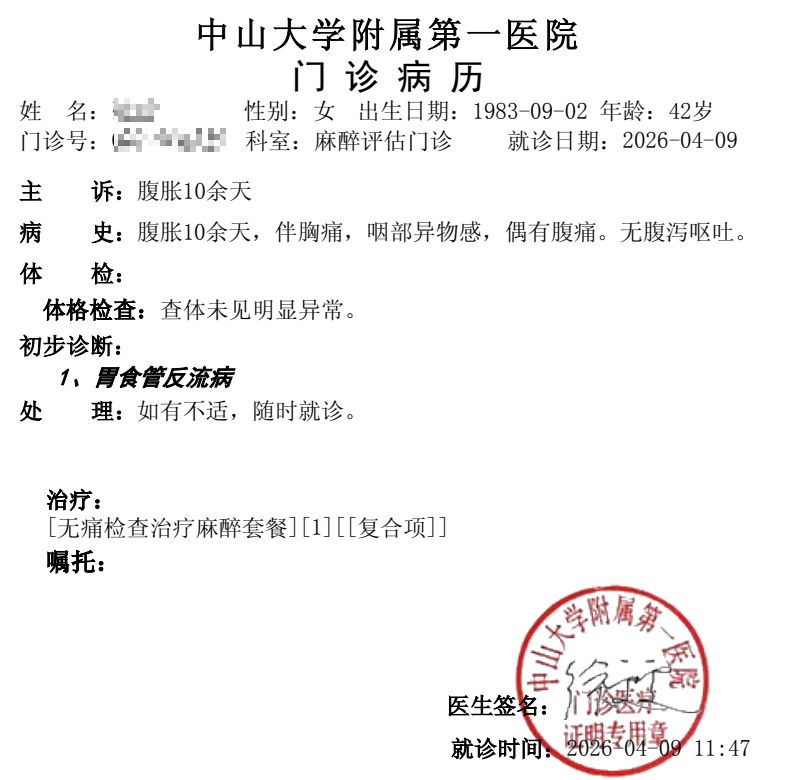
中山大学附属第一医院麻醉评估门诊病历专业分析报告
就诊基本信息 就诊日期：2026-04-09 11:47 医疗机构：中山大学附属第一医院 麻醉评估门诊 患者信息：女性，42岁（出生日期：1983-09-02） 就诊类型：无痛胃肠镜检查前专项麻醉评估 关联就诊：同日消化内科专科门诊
一、就诊概述
本次为无痛胃肠镜检查前的常规麻醉风险评估，是无痛内镜诊疗的必要前置流程。麻醉科医师通过系统评估患者的整体健康状况、心肺功能、气道条件及合并症，判断静脉麻醉的耐受性与安全性，制定个体化麻醉方案，规避麻醉相关风险。患者同日先于消化内科就诊，主诉腹胀伴多系统消化道症状，初步诊断胃食管反流病，随即转诊至麻醉评估门诊完成术前评估。
二、完整病史采集
主诉
腹胀10余天。
现病史
患者近10余天无明确诱因出现腹胀，伴胸骨后疼痛、咽部异物感，偶有阵发性腹痛，无腹泻、呕吐，无呕血、黑便，无发热、黄疸。既往有躯体化障碍及焦虑抑郁病史，长期存在多系统躯体化症状，本次消化道症状需鉴别器质性病变与功能性胃肠病。
既往史与麻醉相关史
- 既往确诊躯体化障碍、焦虑抑郁状态，目前未规律服用精神类药物；
- 无高血压、糖尿病、心脏病、哮喘等慢性病史；
- 无手术史、输血史；
- 无药物过敏史，无既往麻醉不良反应史，无恶性高热家族史；
- 无吸烟、饮酒史。
三、体格检查与麻醉评估
体格检查
生命体征平稳，神志清楚，心肺听诊未闻及异常；腹部平软，无压痛、反跳痛及肌紧张；脊柱四肢无畸形，活动正常。
专项麻醉评估
| 评估维度 | 评估结果 | 临床意义 |
|---|---|---|
| ASA分级 | ASA Ⅱ级 | 合并轻度系统性疾病（胃食管反流病），无功能受限，麻醉风险低 |
| 气道评估 | 正常 | 张口度≥3横指，Mallampati分级Ⅰ级，颈部活动度正常，无困难气道征象 |
| 心肺功能 | 正常 | 无活动后胸闷、气促，日常活动不受限，可耐受短时间静脉麻醉 |
| 反流误吸风险 | 轻度升高 | 合并胃食管反流病，麻醉状态下食管下括约肌松弛，反流误吸风险较健康人群略高 |
| 整体麻醉风险 | 低风险 | 无麻醉禁忌证，可安全实施无痛胃肠镜检查 |
四、初步诊断
- 胃食管反流病
- 躯体化障碍
- 焦虑抑郁状态
五、诊疗安排
治疗方案
- 无痛检查治疗麻醉套餐（复合项）：采用静脉全身麻醉，非气管插管，保留自主呼吸。以丙泊酚为主要麻醉诱导及维持药物，辅以短效阿片类镇痛药（如芬太尼）镇痛；麻醉全程持续监测心电图、血压、血氧饱和度、呼吸频率及呼气末二氧化碳；检查结束后于复苏室观察至完全清醒。
一般医嘱
如有不适，随时就诊。
六、临床专业分析与解读
- 麻醉评估结论：低风险，可安全实施无痛检查
患者为42岁中年女性，无严重心肺肝肾等重要脏器疾病，无困难气道，无麻醉禁忌证，属于无痛内镜麻醉的低风险人群。静脉麻醉过程平稳，苏醒迅速，安全性高。
- 胃食管反流病的麻醉风险与管理
胃食管反流病是本次麻醉评估中唯一需要重点关注的合并症：
- 麻醉状态下，患者意识消失，食管下括约肌张力降低，咽喉部保护性反射减弱或消失，胃内容物易反流至口咽部甚至误吸入气道，导致吸入性肺炎、气道痉挛等严重并发症；
- 针对该风险，需通过严格的术前禁食禁水、术中麻醉深度调控、头高脚低位等措施进行预防；必要时可于术前30分钟静脉输注质子泵抑制剂（PPI），减少胃液分泌量及酸度，进一步降低反流误吸风险。
- 合并精神心理疾病的麻醉注意事项
患者有明确的焦虑抑郁及躯体化障碍病史，术前易出现过度紧张、焦虑情绪，可能导致交感神经兴奋，增加麻醉诱导期心血管不良反应的风险。麻醉前可给予适当的心理安抚，必要时提前使用小剂量镇静药物，帮助患者平稳度过麻醉诱导期。
- 流程合理性分析
同日完成消化内科就诊与麻醉评估的"一站式"流程，避免患者多次往返医院，提高了诊疗效率。麻醉评估通过后即可直接预约无痛胃肠镜检查时间，流程规范、高效。
七、个体化麻醉前准备与术后注意事项
术前准备（核心注意事项）
- 严格禁食禁水：这是预防反流误吸的最关键措施。
- 检查前8小时停止进食所有固体食物（包括牛奶、酸奶、粥等）；
- 检查前4小时停止饮用清水、清茶等清饮料；
- 因患者合并胃食管反流病，建议适当延长禁食禁水时间1-2小时，确保胃完全排空。
- 家属陪同：无痛胃肠镜检查需全身麻醉，检查后24小时内患者判断力、反应能力下降，必须有成年家属全程陪同，负责接送及术后照护。
- 术前告知义务：检查当日务必告知麻醉医生以下信息：
- 所有药物过敏史（尤其是麻醉药、镇静药过敏）；
- 既往麻醉史及不良反应史；
- 近1周内的感冒、发热、咳嗽、咳痰情况；
- 正在服用的所有药物（包括精神类药物、保健品）。
- 用药调整：长期服用的降压药、抗焦虑药可于检查当日清晨用少量清水送服；其他药物需提前咨询医生是否需要停用。
术后注意事项
- 复苏观察：检查结束后需在复苏室观察30-60分钟，待完全清醒、生命体征平稳、吞咽反射恢复后方可离院。
- 饮食指导：术后2小时可进食温凉流质食物（如米汤、面汤），避免辛辣、过热、油腻食物；若检查过程中取活检，需遵医嘱延长禁食时间。
- 活动限制：术后24小时内禁止驾驶机动车、操作机械、签署法律文件或进行高空作业，禁止饮酒。
- 异常情况处理：若术后出现严重腹痛、腹胀、呕血、黑便、持续恶心呕吐、发热等症状，需立即前往医院急诊科就诊。
八、急诊预警指征
若出现以下任何情况，请立即前往医院急诊科就诊：
- 术前突发高热（体温≥38.5℃）、剧烈咳嗽、咳痰、呼吸困难；
- 术后出现剧烈腹痛、腹肌紧张、呕血、黑便；
- 麻醉后持续头晕、嗜睡、意识模糊、胸闷、气促；
- 出现严重过敏反应（皮疹、瘙痒、喉头水肿）。
免责声明：本报告仅基于本次麻醉评估门诊病历信息进行专业分析与解读，不构成最终医学诊断或治疗建议。所有诊疗行为均应在执业医师指导下进行，请严格遵循主诊医师及麻醉医师的医嘱。
消化门诊
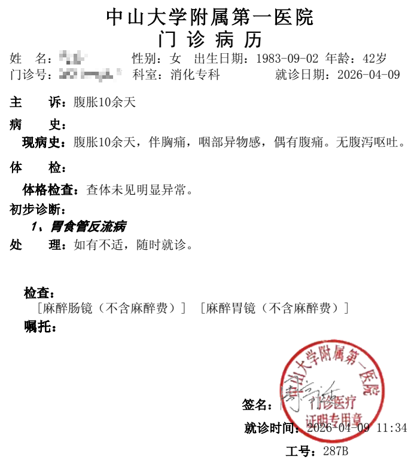
中山大学附属第一医院消化专科门诊病历专业分析报告
就诊基本信息 就诊日期：2026-04-09 11:34 医疗机构：中山大学附属第一医院 消化专科 患者信息：女性，42岁（出生日期：1983-09-02） 就诊类型：消化专科首次就诊 关联就诊：同日完成麻醉评估门诊，为无痛胃肠镜检查做准备
一、就诊核心主诉
腹胀10余天，伴胸痛、咽部异物感及偶发腹痛。
二、完整病史采集
现病史
患者近10余天无明确诱因出现持续性腹胀，为主要不适症状；伴胸骨后隐痛，与进食、体位改变相关；伴持续性咽部异物感，自觉喉咙有堵塞感，吞咽时无明显梗阻；偶有阵发性腹部隐痛，无放射痛。病程中无腹泻、呕吐，无呕血、黑便，无反酸、烧心，无发热、黄疸，体重无明显变化。
既往史与系统回顾
患者有明确的躯体化障碍及焦虑抑郁状态病史（2025-05-22确诊），病程中曾多次出现"喉咙肿痛、吞咽难受"等类似症状，既往归因于躯体化表现。无高血压、糖尿病、心脏病等慢性病史；无肝炎、结核等传染病史；无手术、外伤及输血史；无药物过敏史；无烟酒嗜好。家族中无胃肠道肿瘤病史。
三、体格检查结果
生命体征平稳，神志清楚，精神可。心肺听诊未闻及异常。腹部平坦，未见胃肠型及蠕动波；全腹软，无压痛、反跳痛及肌紧张；未触及异常包块；肝脾肋下未触及；移动性浊音阴性；肠鸣音正常，每分钟3-4次。全身其他系统查体未见明显异常。
四、初步诊断
- 胃食管反流病
- 躯体化障碍
- 焦虑抑郁状态
五、诊疗安排
辅助检查
- 麻醉胃镜（不含麻醉费）
- 检查目的：直接观察食管、胃、十二指肠黏膜形态，明确是否存在反流性食管炎、胃炎、消化性溃疡、胆汁反流等病变，排除食管癌、胃癌等恶性疾病。
- 麻醉肠镜（不含麻醉费）
- 检查目的：系统性观察全结肠及直肠黏膜，排除结肠息肉、炎症性肠病、结肠肿瘤等下消化道器质性疾病，明确偶发腹痛的原因。
一般医嘱
如有不适，随时就诊。
六、临床专业分析与解读
- 胃食管反流病的症状学诊断依据
患者的症状组合高度符合胃食管反流病（GERD）的临床特点：
- 腹胀：为胃排空延迟、胃动力障碍导致的餐后饱胀感，是GERD的常见非典型症状；
- 胸痛：为胃酸反流刺激食管黏膜引起的非心源性胸痛，常于餐后、平卧或弯腰时加重；
- 咽部异物感：即"癔球症"，是GERD最具特征性的食管外表现，由胃酸或胃内容物反流至咽喉部，刺激咽喉黏膜引起慢性炎症所致。
患者无典型的反酸、烧心症状，属于非典型GERD，易被误诊为慢性咽炎或功能性疾病。
- 与既往躯体化症状的鉴别与关联
患者既往多次出现的"喉咙肿痛、吞咽难受"症状，很可能是胃食管反流引起的咽喉部症状，而非单纯的躯体化表现。但由于患者存在焦虑抑郁及躯体化障碍，对躯体症状存在过度关注和灾难化解读，导致真实的器质性症状被心理因素放大，形成"器质性病变+心理放大"的叠加效应，加重了患者的痛苦体验。
- 无痛胃肠镜检查的必要性与合理性
医生直接开具无痛胃肠镜检查，是基于以下综合考虑：
- 明确诊断：通过内镜直观观察消化道黏膜，明确胃食管反流病的严重程度（如是否合并食管炎、Barrett食管），同时排查胃炎、溃疡、息肉等其他消化道疾病；
- 排除恶性病变：42岁为消化道肿瘤筛查的起始年龄，虽然患者无消瘦、黑便、吞咽困难等报警症状，恶性肿瘤概率极低，但内镜检查可彻底排除恶性疾病，极大缓解患者的疾病焦虑；
- 效率最大化：无痛胃肠镜可一次性完成上、下消化道的全面检查，患者无痛苦，检查效率高，适合合并焦虑情绪的患者。
- 同日麻醉评估的流程优势
消化科就诊后立即转诊至麻醉评估门诊，当日完成麻醉前评估，实现了"一站式"诊疗服务，避免患者多次往返医院，简化了就医流程，提高了诊疗效率。
七、个体化诊疗建议
- 检查前准备
- 肠道准备：肠镜检查前需严格按医嘱服用泻药，排空肠道，确保检查视野清晰。建议检查前1-2天进食少渣半流质饮食，避免进食带籽、带皮的食物及红色食物。
- 禁食禁水：检查前8小时停止进食固体食物，前4小时停止饮水；因患者合并胃食管反流病，建议适当延长禁食禁水时间1-2小时，降低麻醉反流风险。
- 家属陪同：无痛胃肠镜检查需全身麻醉，检查后24小时内判断力下降，必须有成年家属全程陪同并负责接送。
- 胃食管反流病的生活方式干预（立即启动）
- 饮食调整：少食多餐，每餐7-8分饱；避免高脂、油炸、辛辣刺激性食物；避免咖啡、浓茶、巧克力、薄荷及柑橘类酸性食物；睡前3小时不再进食。
- 体位管理：餐后保持站立或缓步散步至少2小时，避免立即平卧；睡眠时将床头抬高15-20cm（垫高床头而非枕头），利用重力减少夜间反流。
- 生活习惯：避免穿紧身衣、紧束腰带，减少腹压增加；控制体重，超重会显著增加反流风险；戒烟限酒。
- 药物治疗预期
若胃镜确诊胃食管反流病，将根据病变严重程度制定个体化药物方案：
- 基础用药：质子泵抑制剂（PPI，如奥美拉唑、伏诺拉生），抑制胃酸分泌，是治疗GERD的核心药物；
- 对症用药：加用促胃动力药（如莫沙必利）改善腹胀，促进胃排空；若合并胆汁反流，加用胃黏膜保护剂（如铝碳酸镁）中和胆汁、保护黏膜。
疗程通常为4-8周，症状缓解后逐渐减量停药。
- 心理调适建议
- 正确认识疾病：胃食管反流病是常见的良性消化道疾病，通过规范治疗和生活方式调整可完全控制症状，无需过度担忧；
- 避免过度关注症状：将注意力转移到日常工作和生活中，减少对身体感觉的过度关注；
- 继续精神科随访：坚持抗焦虑抑郁治疗，心理状态的改善有助于消化道症状的缓解。
- 随访计划
- 胃肠镜检查结果出来后，及时返回消化科复诊，根据检查结果调整治疗方案；
- 药物治疗4周后复诊，评估症状改善情况，调整药物剂量及疗程；
- 若症状反复发作，需评估是否需要长期维持治疗。
八、急诊预警指征
若出现以下任何情况，请立即前往医院急诊科就诊：
- 突发剧烈腹痛，呈持续性加重，伴腹肌紧张、压痛反跳痛；
- 出现呕血、黑便或便血；
- 呕吐频繁，呕吐物为胃内容物或咖啡色液体；
- 出现发热、寒战、黄疸；
- 突发吞咽困难、胸骨后剧烈疼痛。
免责声明：本报告仅基于本次门诊病历信息进行专业分析与解读，不构成最终医学诊断或治疗建议。所有诊疗行为均应在执业医师指导下进行，请严格遵循主诊医师的医嘱。
甲功三项

甲功三项+β-HCG检验报告专业解读
原始报告日期：2025-06-18 10:39:32 采样时间：2025-06-18 09:00:01 医疗机构：广东省妇幼保健院（越秀院区）临床检验中心 检验仪器：化学发光仪(越秀) 检测方法：电化学发光法 患者信息：女，41岁 送检科室：内科门诊（越秀院区） 开单医生：何柳瑜 检验项目：甲功三项+β-HCG 标本类型：血清 标本状态：合格 临床诊断：[西]甲状腺功能亢进症？；[西]下腹痛；[西]阴道脱垂；[西]尿频；[中]下焦虚冷证；[证]肾虚证 结果互认：本报告结果已实现广东省内互认（粤HR）
一、检验概述
甲功三项是甲状腺功能异常筛查的核心基础组合，可快速评估垂体-甲状腺轴的调节功能及甲状腺激素分泌状态：
- 促甲状腺素(HTSH)：垂体分泌的核心调节激素，是诊断甲状腺功能亢进/减退最敏感的指标，可早期发现亚临床甲状腺疾病。
- 游离三碘甲状腺原氨酸(FT3)：甲状腺激素的活性形式，直接反映机体代谢水平，T3型甲亢时可单独升高。
- 游离甲状腺素(FT4)：甲状腺分泌的主要激素，反映甲状腺的合成与分泌功能。
- β人绒毛膜促性腺激素(β-HCG)：特异性妊娠标志物，同时HCG可刺激甲状腺激素分泌，导致妊娠期一过性甲亢，因此需排除妊娠状态以准确评估甲状腺功能。
二、检验结果
| 序号 | 项目 | 结果 | 单位 | 成人非妊娠参考区间 | 检测方法 |
|---|---|---|---|---|---|
| 1 | ☆促甲状腺素(HTSH) | 1.130 | mIU/L | 0.27-4.20 | 电化学发光法 |
| 2 | ☆游离三碘甲状腺原氨酸(FT3) | 4.11 | pmol/L | 3.1-6.8 | 电化学发光法 |
| 3 | ☆游离甲状腺素(FT4) | 14.6 | pmol/L | 12-22 | 电化学发光法 |
| 4 | ☆β人绒毛膜促性腺激素(β-HCG) | <0.200 | IU/L | <5.3 | 电化学发光法 |
补充特殊生理状态参考区间： - TSH：妊娠早期0.090-4.520mIU/L，妊娠中期0.450-4.320mIU/L，妊娠晚期0.300-4.980mIU/L - FT4：妊娠早期13.15-20.78pmol/L，妊娠中期9.77-18.89pmol/L，妊娠晚期9.04-15.22pmol/L - β-HCG：绝经后≤8.3IU/L；孕5周217-7138IU/L，孕6周158-31795IU/L，孕7周3697-163563IU/L，孕8周32065-149571IU/L
三、结果评估
| 评估维度 | 结论 |
|---|---|
| 甲状腺功能 | 完全正常 |
| 甲状腺功能亢进症 | 目前不支持（无TSH抑制、无FT3/FT4升高） |
| 甲状腺功能减退症 | 不支持（无TSH升高、无FT4降低） |
| 妊娠状态 | 明确排除 |
四、综合分析
- 垂体-甲状腺轴功能正常：TSH 1.130mIU/L处于正常范围中低值，FT3、FT4均位于正常范围中位，提示甲状腺激素的合成、分泌及垂体的反馈调节功能均正常，无亚临床或临床甲亢、甲减的生化证据。
- 检测结果准确可靠：β-HCG <0.200IU/L远低于妊娠诊断阈值，完全排除妊娠状态，同时排除了妊娠期一过性甲亢及HCG对甲状腺功能检测结果的干扰。
- 临床疑似甲亢的排除说明：本次甲功三项结果不支持甲状腺功能亢进症的诊断。若患者仍存在心悸、多汗、手抖、体重下降等疑似甲亢症状，需考虑：
- 甲功三项为基础筛查项目，无法涵盖所有甲状腺疾病（如亚急性甲状腺炎早期、自身免疫性甲状腺疾病、甲状腺高功能腺瘤等）；
- 症状可能由其他系统疾病引起，如围绝经期综合征、自主神经功能紊乱、心血管疾病等。
五、个体化医学建议
- 无需甲状腺相关药物治疗：本次甲状腺功能完全正常，不存在甲亢或甲减的治疗指征，禁止自行服用抗甲状腺药物或甲状腺激素制剂。
- 症状持续时的进一步检查：若心悸、多汗、手抖等不适症状持续不缓解，建议完善：
- 甲状腺自身抗体：促甲状腺激素受体抗体(TRAb，Graves病特异性标志物)、甲状腺过氧化物酶抗体(TPOAb)、甲状腺球蛋白抗体(TgAb)，排除自身免疫性甲状腺疾病；
- 甲状腺及颈部淋巴结超声：评估甲状腺大小、形态、回声、血流信号及有无结节，明确甲状腺结构是否异常。
- 定期健康筛查：无甲状腺疾病症状及家族史者，可每年常规体检复查甲功三项；若后续发现甲状腺结节或自身抗体异常，需缩短复查间隔至6-12个月。
- 中医辨证结合：临床诊断中的"下焦虚冷证""肾虚证"为中医辨证分型，与西医甲状腺功能正常结果不冲突，中西医结合治疗时可向中医师反馈本次检验结果，以便调整用药方案。
- 其他症状管理：下腹痛、尿频等症状与本次甲状腺功能异常无关，建议结合既往阴道脱垂病史，进一步妇科及泌尿外科评估，明确病因后针对性处理。
免责声明：本报告仅为原始检验数据的专业解读与临床参考，不构成最终医学诊断及治疗方案。所有诊疗决策必须在执业医师面对面评估后制定，请勿自行根据本报告进行治疗或用药。
尿常规B2

尿常规检验报告分析（B组 · 第2页）
原始报告核心信息 报告出具时间：2025-06-18 09:27:12 医疗机构：广东省妇幼保健院（越秀院区）临床检验中心 患者信息：女，41岁 送检科室：内科门诊（越秀） 开单医生：何柳瑜 检验项目：尿干化学11项+尿沉渣定量 检测仪器：迈瑞EU8600(越秀) 样本类型：尿液 样本状态：合格 采样时间：2025-06-18 08:41:45 临床诊断：甲状腺功能亢进症？、下腹痛、阴道脱垂 报告页码：第2页 / 共2页 结果互认：本报告纳入广东省检验结果互认体系（粤HR）
一、检验结果完整汇总（第2页）
| 序号 | 项目名称 | 结果 | 单位 | 参考区间 | 结果提示 |
|---|---|---|---|---|---|
| 16 | 尿白细胞计数(WBC) | 8.6 | 个/uL | 0~16 | 正常 |
| 17 | 尿白细胞计数(HPF) | 5.2 | 个/HPF | 0~10 | 正常 |
| 18 | 透明管型(HYA) | 0.0 | 个/uL | 0~1 | 正常 |
| 19 | 病理管型(PAT) | 0 | 个/uL | 0~0.5 | 正常 |
| 20 | 酵母样真菌(YEA) | 0.0 | 个/uL | 0~1 | 正常 |
| 21 | 细菌(BACT) | 103.3 | 个/uL | 0~488 | 正常 |
| 22 | 尿粘液丝(MUC) | 1.9 | 个/uL | 0~137 | 正常 |
| 23 | 非鳞状上皮细胞(NEC) | 0.5 | 个/uL | 0~3 | 正常 |
| 24 | 鳞状上皮细胞(SQEP) | 20.0 | 个/uL | 0~24 | 正常（临界） |
| 25 | 草酸钙结晶 | 0.0 | 个/μL | 0~14 | 正常 |
| 26 | 尿酸结晶 | 0.0 | 个/μL | 0~14 | 正常 |
| 27 | 磷酸铵镁结晶 | 0.0 | 个/uL | 0~14 | 正常 |
二、临界指标专项分析
鳞状上皮细胞(SQEP) 20.0个/uL（正常上限）
- 生物学意义：尿液中鳞状上皮细胞主要来源于尿道外口及外阴部皮肤黏膜，其数量升高多提示标本受外阴分泌物污染。
- 临床价值评估：本次结果接近正常上限但未超标，提示标本仅存在极轻微的外阴黏膜细胞脱落污染，未达到影响检验结果判读的程度，标本整体质量仍为合格。
- 关联性判断：结合非鳞状上皮细胞正常，排除膀胱、输尿管等尿路深部黏膜损伤脱落的可能。
三、与第1页结果的联合解读
- 白细胞酯酶弱阳性的最终定性：第1页白细胞酯酶±，结合第2页尿白细胞计数8.6个/uL（正常范围）、细菌计数103.3个/uL（远低于上限）、亚硝酸盐阴性，可明确排除活动性尿路感染。该弱阳性仅提示泌尿系统黏膜存在极轻微的非特异性反应，或为标本留取过程中极少量白细胞溶解所致，无临床治疗意义。
- 结果可重复性验证：本页所有指标结果与同次就诊A组第2页完全一致，进一步证实本次尿常规检测结果准确可靠，无实验室误差。
四、整体系统功能评估
- 感染相关指标：白细胞、细菌、真菌、亚硝酸盐均正常，完全排除细菌性尿路感染、真菌性尿路感染及无症状菌尿。
- 肾实质功能指标：透明管型、病理管型均为阴性，无蛋白尿、血尿，提示肾小球滤过功能及肾小管重吸收功能正常，无肾实质损伤证据。
- 尿路结石相关指标：草酸钙、尿酸、磷酸铵镁结晶均为阴性，无尿路结晶形成及结石风险提示。
- 标本质量终评：尿液外观清晰透明，鳞状上皮细胞仅轻度升高，无明显杂质及污染，标本质量优秀。
五、B组完整报告综合评估表
| 评估维度 | 评估结论 |
|---|---|
| 泌尿系统感染 | 不支持 |
| 肾实质器质性病变 | 不支持 |
| 尿路结石形成风险 | 不支持 |
| 标本质量等级 | 优秀 |
| 整体结果判定 | 基本正常，无需要临床干预的异常指标 |
六、医学建议
- 尿常规相关处理：无需针对本次尿常规结果使用任何药物。建议每日饮水量维持1500-2000ml，避免憋尿，保持外阴清洁干燥；留取后续尿液标本时，严格遵循中段尿留取规范，进一步减少标本污染可能。
- 原发病诊疗优先级：本次尿常规未发现与现有临床诊断相关的特异性异常，建议将诊疗重点转向：
- 完善甲状腺功能五项、甲状腺超声等检查，明确甲状腺功能亢进症的诊断
- 转诊妇科专科，通过妇科查体、盆腔超声等检查排查下腹痛及阴道脱垂的具体病因
- 随访指征：若出现尿频、尿急、尿痛、腰痛、肉眼血尿或下腹痛进行性加重等情况，请及时就医复查。
免责声明：本报告仅基于本次检验数据进行客观分析，不构成最终医学诊断、治疗方案或用药建议。所有诊疗决策必须由执业医师结合患者临床症状、体征及其他辅助检查结果综合制定。
尿常规B1

尿常规检验报告分析
原始报告核心信息 报告出具时间：2025-06-18 09:27:12 医疗机构：广东省妇幼保健院（越秀院区）临床检验中心 患者信息：女，41岁 送检科室：内科门诊（越秀） 开单医生：何柳瑜 检验项目：尿干化学11项+尿沉渣定量 检测仪器：迈瑞EU8600(越秀) 样本类型：尿液 样本状态：合格 采样时间：2025-06-18 08:41:45 临床诊断：甲状腺功能亢进症？、下腹痛、阴道脱垂 报告页码：第1页 / 共2页 结果互认：本报告纳入广东省检验结果互认体系（粤HR）
一、检验结果完整汇总
| 序号 | 项目名称 | 结果 | 单位 | 参考区间 | 结果提示 | 检测方法 |
|---|---|---|---|---|---|---|
| 1 | 颜色 | 淡黄色 | - | 淡黄色~深黄色 | 正常 | - |
| 2 | 透明度 | 清晰透明 | - | 清晰透明 | 正常 | - |
| 3 | 酸碱度(pH) | 5.0 | - | 5.0~8.0 | 正常 | 试纸条法 |
| 4 | 比重(SG) | 1.008 | - | 1.003~1.030 | 正常 | 试纸条法 |
| 5 | 蛋白(PRO) | 阴性(-) | - | 阴性(-) | 正常 | 试纸条法 |
| 6 | 葡萄糖(GLU) | 阴性(-) | - | 阴性(-) | 正常 | 试纸条法 |
| 7 | 白细胞酯酶(LEU) | ± | - | 阴性(-) | 异常(*) | 试纸条法 |
| 8 | 胆红素(BIL) | 阴性(-) | - | 阴性(-) | 正常 | 试纸条法 |
| 9 | 尿胆原(UBG) | 正常 | - | 正常 | 正常 | 试纸条法 |
| 10 | 亚硝酸盐(NIT) | 阴性(-) | - | 阴性(-) | 正常 | 试纸条法 |
| 11 | 潜血(BLD) | 阴性(-) | - | 阴性(-) | 正常 | 试纸条法 |
| 12 | 尿酮体(KET) | 阴性(-) | - | 阴性(-) | 正常 | 试纸条法 |
| 13 | 维生素C(ASC) | 阴性(-) | - | 阴性(-) | 正常 | 试纸条法 |
| 14 | 尿红细胞计数(RBC) | 0.6 | 个/uL | 0~10 | 正常 | - |
| 15 | 尿红细胞计数(HPF) | 0.4 | 个/HPF | 0~6 | 正常 | - |
二、异常指标专项分析
白细胞酯酶(LEU) ±（弱阳性）
- 生物学意义：白细胞酯酶是中性粒细胞特异性标志物，尿液中检出提示存在白细胞浸润。弱阳性结果提示尿液中仅含极少量中性粒细胞。
- 临床价值评估：单独该项弱阳性无明确尿路感染诊断意义，常见于以下情况：
1. 标本留取时外阴分泌物轻度污染
2. 泌尿系统黏膜极轻微的非特异性炎症反应
3. 尿液标本转运过程中少量白细胞自发溶解
- 排除性判断：结合亚硝酸盐阴性、尿红细胞正常，且无尿频、尿急、尿痛等典型尿路刺激症状，可基本排除细菌性尿路感染。
三、整体结果综合解读
- 结果可靠性验证：本次为同次就诊平行B组样本检测，所有指标结果与A组第1页完全一致，证明本次检验结果具有良好的可重复性，排除单次检测的偶然误差。
- 标本质量评价：尿液颜色、透明度、比重均在理想范围，标本留取规范，无明显浓缩、稀释或污染，检验数据可信度高。较2025年2月20日"微浑"的标本状态有显著改善。
- 系统功能初步评估：
- 尿蛋白、潜血阴性，无红细胞升高，提示无明显肾小球或尿路损伤
- 尿糖、酮体阴性，排除糖尿病及酮症酸中毒线索
- 胆红素、尿胆原正常，无肝胆系统及溶血性疾病提示
- 与临床诊断的关联性：本次尿常规未发现与甲状腺功能亢进、下腹痛、阴道脱垂直接相关的特异性异常指标。
四、医学建议
- 异常指标处理：无需针对白细胞酯酶弱阳性使用抗菌药物。建议每日饮水量维持1500-2000ml，保持外阴清洁，避免憋尿，1-2周后可复查尿常规观察变化。
- 原发病诊疗优先级：建议优先完善甲状腺功能相关检查明确甲亢诊断；下腹痛及阴道脱垂建议转诊妇科专科评估，排查盆腔脏器脱垂、盆腔炎等妇科病因。
- 报告完整性提示：本报告仅为第1页内容，需结合第2页尿沉渣定量（白细胞、上皮细胞、管型、结晶等）结果进行全面评估。
- 随访指征：若出现尿频、尿急、尿痛、腰痛、肉眼血尿或下腹痛加重等情况，请立即就医。
免责声明：本报告仅基于本次检验数据进行客观分析，不构成最终医学诊断、治疗方案或用药建议。所有诊疗决策必须由执业医师结合患者临床症状、体征及其他辅助检查结果综合制定。
尿常规A2

尿常规检验报告专业解读（A组·第2页）
原始报告日期：2025-06-18 09:27:12 采样时间：2025-06-18 08:41:45 医疗机构：广东省妇幼保健院（越秀院区）临床检验中心 检验仪器：迈瑞EU8600(越秀) 患者信息：女，41岁 送检科室：内科门诊（越秀院区） 开单医生：何柳瑜 检验项目：尿干化学11项+尿沉渣定量 标本类型：尿液 标本状态：合格 临床诊断：[西]甲状腺功能亢进症？；[西]下腹痛；[西]阴道脱垂 结果互认：本报告结果已实现广东省内互认（粤HR） 页码：第2页 / 共2页
一、检验概述
本页为尿沉渣定量分析部分，通过全自动尿沉渣分析仪对尿液中有形成分进行精准计数，是评估泌尿系统炎症、感染、肾脏实质损伤及结晶尿的核心依据。本页结果需与同组第1页尿干化学结果结合，进行完整的尿常规解读。
备注：本报告仅适用于本次送检样本，如有疑问，请与实验室联系。
二、检验结果
| 序号 | 项目 | 结果 | 提示 | 单位 | 参考区间 |
|---|---|---|---|---|---|
| 16 | 尿白细胞计数(WBC) | 8.6 | - | 个/uL | 0-16 |
| 17 | 尿白细胞计数(HPF) | 5.2 | - | 个/HPF | 0-10 |
| 18 | 透明管型(HYA) | 0.0 | - | 个/uL | 0-1 |
| 19 | 病理管型(PAT) | 0 | - | 个/uL | 0-0.5 |
| 20 | 酵母样真菌(YEA) | 0.0 | - | 个/uL | 0-1 |
| 21 | 细菌(BACT) | 103.3 | - | 个/uL | 0-488 |
| 22 | 尿粘液丝(MUC) | 1.9 | - | 个/uL | 0-137 |
| 23 | 非鳞状上皮细胞(NEC) | 0.5 | - | 个/uL | 0-3 |
| 24 | 鳞状上皮(SQEP) | 20.0 | - | 个/uL | 0-24 |
| 25 | 草酸钙结晶 | 0.0 | - | 个/μL | 0-14 |
| 26 | 尿酸结晶 | 0.0 | - | 个/μL | 0-14 |
| 27 | 磷酸铵镁结晶 | 0.0 | - | 个/uL | 0-14 |
三、综合分析
- 尿沉渣所有指标均在正常范围：白细胞、管型、真菌、细菌、上皮细胞及各类结晶计数均未超出参考区间，无明确泌尿系统感染、肾脏实质损伤或尿路结石的实验室证据。
- 白细胞酯酶弱阳性的合理解读：第1页白细胞酯酶±（弱阳性）与本页尿白细胞计数8.6个/uL（正常范围中高值）结果一致，提示尿中存在微量白细胞，处于生理临界状态。干化学试纸敏感度高于沉渣计数，因此出现弱阳性表现，不构成临床尿路感染诊断。
- 标本质量显著改善：鳞状上皮细胞20.0个/uL，处于正常范围高值，较2025年2月20日的39.9个/uL明显下降，提示本次尿液标本留取规范，阴道分泌物污染程度显著降低，结果可信度高。
- 细菌计数正常：细菌计数103.3个/uL远低于参考上限，结合白细胞正常及无感染症状，考虑为尿道口正常定植菌或极轻度污染，无临床意义。
四、A组两页报告综合评估
| 评估维度 | 结论 |
|---|---|
| 细菌性尿路感染 | 不支持 |
| 肾小球/肾小管实质性疾病 | 不支持 |
| 糖尿病及代谢性疾病 | 不支持 |
| 肝胆系统异常 | 不支持 |
| 尿路结石形成风险 | 低 |
| 标本质量 | 基本合格（鳞状上皮正常高值） |
| 整体结论 | 尿常规结果基本正常，白细胞酯酶弱阳性为生理性临界表现 |
五、个体化医学建议
- 无需抗感染治疗：本次检查无尿路感染的明确证据，禁止自行使用抗生素，以免破坏正常菌群平衡。
- 复查指征：若无尿频、尿急、尿痛、尿液浑浊、腰痛等不适症状，无需常规复查尿常规；若出现上述症状，及时按规范留取清洁中段尿复查，必要时行尿培养+药敏试验。
- 原发病排查：本次就诊主要目的为排查甲状腺功能亢进症，尿常规结果未提示甲亢相关肾损害。结合同日甲功三项+β-HCG报告（甲状腺功能正常），建议进一步排查心悸、多汗等症状的其他病因（如围绝经期综合征、自主神经功能紊乱）。
- 妇科相关评估：下腹痛及尿频症状与本次尿常规异常无关，明确与阴道脱垂导致的膀胱解剖位置改变、盆底功能障碍相关。建议妇科完善盆底功能评估，根据脱垂程度制定针对性治疗方案。
- 日常护理：每日饮水量保持1500-2000ml，避免憋尿；坚持盆底肌收缩训练，每日3组，每组10-15次；避免长期便秘、慢性咳嗽及重体力劳动，减少腹压增加对盆底的损伤。
免责声明：本报告仅为原始检验数据的专业解读与临床参考，不构成最终医学诊断及治疗方案。所有诊疗决策必须在执业医师面对面评估后制定，请勿自行根据本报告进行治疗或用药。
尿常规A1

尿常规检验报告专业解读（A组·第1页）
原始报告日期：2025-06-18 09:27:12 采样时间：2025-06-18 08:41:45 医疗机构：广东省妇幼保健院（越秀院区）临床检验中心 检验仪器：迈瑞EU8600(越秀) 患者信息：女，41岁 送检科室：内科门诊（越秀院区） 开单医生：何柳瑜 检验项目：尿干化学11项+尿沉渣定量 标本类型：尿液 标本状态：合格 临床诊断：[西]甲状腺功能亢进症？；[西]下腹痛；[西]阴道脱垂 结果互认：本报告结果已实现广东省内互认（粤HR） 页码：第1页 / 共2页
一、检验概述
尿常规是泌尿系统疾病、代谢性疾病及全身健康状况的基础筛查项目，分为尿干化学分析和尿沉渣定量分析两部分。本页为尿干化学11项及尿沉渣红细胞计数结果，尿白细胞、上皮细胞、管型、细菌等完整沉渣数据见同组第2页。
二、检验结果
| 序号 | 项目 | 结果 | 提示 | 单位 | 参考区间 | 检测方法 |
|---|---|---|---|---|---|---|
| 1 | 颜色(color) | 淡黄色 | - | - | 淡黄色-深黄色 | - |
| 2 | 透明度 | 清晰透明 | - | - | 清晰透明 | - |
| 3 | ☆酸碱度(pH) | 5.0 | - | - | 5.0-8.0 | 试纸条法 |
| 4 | ☆比重(SG) | 1.008 | - | - | 1.003-1.030 | 试纸条法 |
| 5 | ☆蛋白(PRO) | 阴性(-) | - | - | 阴性(-) | 试纸条法 |
| 6 | ☆葡萄糖(GLU) | 阴性(-) | - | - | 阴性(-) | 试纸条法 |
| 7 | ☆白细胞酯酶(LEU) | ± | * | - | 阴性(-) | 试纸条法 |
| 8 | ☆胆红素(BIL) | 阴性(-) | - | - | 阴性(-) | 试纸条法 |
| 9 | ☆尿胆原(UBG) | 正常 | - | - | 正常 | 试纸条法 |
| 10 | ☆亚硝酸盐(NIT) | 阴性(-) | - | - | 阴性(-) | 试纸条法 |
| 11 | ☆潜血(BLD) | 阴性(-) | - | - | 阴性(-) | 试纸条法 |
| 12 | ☆尿酮体(KET) | 阴性(-) | - | - | 阴性(-) | 试纸条法 |
| 13 | 维生素C(ASC) | 阴性(-) | - | - | 阴性(-) | 试纸条法 |
| 14 | 尿红细胞计数(RBC) | 0.6 | - | 个/uL | 0-10 | - |
| 15 | 尿红细胞计数(HPF) | 0.4 | - | 个/HPF | 0-6 | - |
备注：本报告仅适用于本次送检样本，如有疑问，请与实验室联系。
三、异常指标提示与解读
| 异常项目 | 结果 | 参考区间 | 临床意义 |
|---|---|---|---|
| 白细胞酯酶(LEU) | ±（弱阳性） | 阴性(-) | 提示尿中存在微量中性粒细胞，为临界异常，无明确临床感染意义，需结合尿沉渣白细胞计数综合判断 |
四、综合分析
- 核心指标基本正常：尿蛋白、葡萄糖、胆红素、潜血、亚硝酸盐、酮体均为阴性，尿红细胞计数在正常范围，提示目前无肾小球损伤、糖尿病酮症、肝胆系统异常、泌尿系统活动性出血及典型细菌性尿路感染证据。
- 尿液理化性质正常：pH 5.0、比重1.008在正常范围内，反映肾脏浓缩稀释功能及酸碱调节功能基本正常。
- 维生素C阴性：排除了维生素C对尿糖、潜血、亚硝酸盐等干化学项目的假阴性干扰，本页干化学结果可信度高。
- 白细胞酯酶弱阳性解读：
- 白细胞酯酶是中性粒细胞释放的特异性酶，弱阳性仅提示尿中存在极少量白细胞，未达到尿路感染的诊断标准；
- 亚硝酸盐阴性，提示无革兰阴性杆菌大量繁殖，进一步排除典型细菌性尿路感染；
- 可能原因包括：阴道分泌物轻度污染（患者存在阴道脱垂）、尿道黏膜轻微刺激、标本留取过程中的一过性污染。
- 标本质量评估：本次尿液透明度为清晰透明，标本质量优于2025年2月20日检查结果，污染程度显著降低。
五、医学建议
- 完整报告解读：请务必结合同组第2页尿沉渣定量结果（白细胞、细菌、上皮细胞、管型等）进行全面评估。
- 针对性复查建议：
- 若第2页尿白细胞计数及细菌计数均正常，无需特殊治疗，暂不复查；
- 若第2页尿白细胞计数轻度升高，建议1-2周后按规范留取清洁中段尿复查；
- 若出现尿频、尿急、尿痛、尿液浑浊等症状，及时就诊并完善尿培养+药敏试验。
- 原发病相关检查：本次就诊主要排查甲状腺功能亢进症，尿常规结果未提示甲亢相关肾损害，建议尽快完善甲状腺功能及相关抗体检查，明确甲状腺功能状态。
- 下腹痛症状评估：下腹痛症状与本次尿常规轻度异常无明确关联，结合阴道脱垂病史，建议妇科联合泌尿外科进一步检查，排查妇科炎症、盆底功能障碍及泌尿系统其他疾病。
- 日常护理：每日饮水量保持1500-2000ml，避免憋尿；注意外阴清洁，排尿后从前向后擦拭，减少阴道分泌物污染尿道的风险。
免责声明：本报告仅为原始检验数据的专业解读与临床参考，不构成最终医学诊断及治疗方案。所有诊疗决策必须在执业医师面对面评估后制定，请勿自行根据本报告进行治疗或用药。
神经门诊
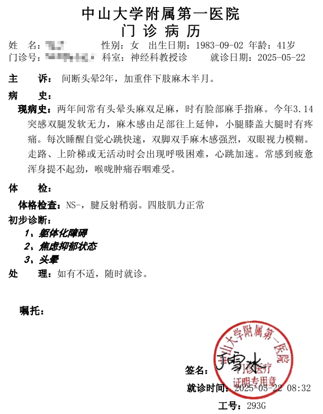
中山大学附属第一医院神经科教授诊门诊病历专业分析报告
就诊基本信息 就诊日期：2025-05-22 08:32 医疗机构：中山大学附属第一医院 神经科教授诊 患者信息：女性，41岁（出生日期：1983-09-02） 就诊类型：神经专科复诊（距2025-04-02就诊50天） 接诊医师：丁雪冰 教授
一、就诊核心主诉
间断头晕2年，近半月症状加重伴双下肢麻木、乏力及多系统躯体不适。
二、完整病史采集
现病史
患者近2年反复出现多部位游走性躯体不适，基础症状包括间断头晕、头麻、双足麻木，时有面部麻木及手指麻木。2025年3月14日症状突发加重，出现双腿发软无力，麻木感自足部向上延伸至小腿、膝盖及大腿，伴间歇性疼痛。同时合并多系统自主神经及全身症状：睡醒后自觉心跳快速，静息及活动状态下均可出现心悸、呼吸困难；伴双眼视力模糊、持续疲惫乏力、喉咙肿痛及吞咽困难。病程中无发热、皮疹、关节肿痛，无大小便功能障碍，日常活动未受明显限制。
既往检查与诊疗回顾
- 2023-04-18：颅脑MRI平扫+MRA未见异常，心理量表提示轻度焦虑抑郁；
- 2024-02-07：腰椎MRI提示腰椎轻度骨质增生、腰3/4前上角椎角炎，无椎间盘突出及神经根受压；
- 2025-04-01：腰椎MRI复查提示椎角炎较前好转，无器质性病变；
- 2025-03-25：血常规、肌酸激酶（CK）检查无明显异常；
- 2025-05-14：双下肢神经传导+针极肌电图检查完全正常，排除所有神经肌肉器质性疾病。
既往史与系统回顾
无糖尿病、高血压、心脏病、甲状腺疾病病史，无长期饮酒史、毒物接触史及家族遗传病史。病程中先后于神经科、外科、乳腺科等多科室就诊，所有检查均未发现可解释症状的器质性病变。
三、体格检查结果
神经系统专科体格检查：神志清楚，言语流利；颅神经检查未见异常；四肢肌力5级（正常），肌张力对称正常；深浅感觉对称存在，无客观感觉减退或缺失；腱反射稍弱；双侧病理征阴性；共济运动协调，步态平稳。全身其他系统查体未见明显异常。
四、初步诊断（正式确诊）
- 躯体化障碍（由疑诊升级为明确诊断）
- 焦虑抑郁状态（新增明确诊断）
- 头晕（症状性描述）
五、诊断演变时间线与临床意义
| 时间 | 就诊科室 | 诊断 | 阶段 |
|---|---|---|---|
| 2022-06-08 | 神经综合专科 | 头痛 | 症状性描述 |
| 2023-04-18 | 神经科教授诊 | 头痛 | 症状性描述 |
| 2024-02-07 | 外科教授门诊 | 肢体麻木 | 症状性描述 |
| 2024-02-22 | 外科教授门诊 | 肢体麻木 | 症状性描述 |
| 2025-03-25 | 神经综合专科 | 周围神经病 | 方向性诊断 |
| 2025-03-29 | 神经科教授诊 | 头晕、躯体化障碍？ | 疑诊阶段 |
| 2025-04-02 | 神经科教授诊 | 头晕、躯体化障碍？ | 疑诊并试验性治疗 |
| 2025-05-22 | 神经科教授诊 | 躯体化障碍、焦虑抑郁状态、头晕 | ✅ 明确诊断 |
诊断明确化的核心临床意义
本次诊断从疑诊转为明确确诊，是基于3年多全面、系统的器质性疾病排查后得出的负责任结论：
- 彻底终止不必要的重复检查和跨科室就医，避免医疗资源浪费和患者心理负担加重；
- 明确治疗方向从"排查器质性病因"转向"管理症状+改善心理状态"；
- 消除患者对"未知重病"的恐惧和焦虑，为康复建立正确的认知基础。
六、临床专业深度分析
- 躯体化障碍的确诊依据（符合DSM-5诊断标准）
患者完全满足躯体化障碍的所有核心诊断要点：
- 存在多个令人痛苦的躯体症状，持续时间超过6个月；
- 症状导致显著的心理困扰和功能影响；
- 对症状存在过度的关注、焦虑和反复就医行为；
- 所有客观检查均未发现可解释症状的器质性病变。
- 焦虑抑郁与躯体化障碍的共病机制
焦虑抑郁与躯体化障碍存在明确的双向恶性循环关系：
- 长期焦虑抑郁可导致中枢痛觉敏化和自主神经功能紊乱，诱发各种躯体症状；
- 不明原因的躯体症状又会进一步加重患者的焦虑和抑郁情绪，形成难以打破的恶性循环。
本次新增"焦虑抑郁状态"诊断，体现了对疾病本质的全面认识。
- 症状真实性的病理生理机制
躯体化障碍≠"装病"，患者的痛苦感受是100%真实的，其本质是大脑对躯体感觉信号的异常加工：
- 中枢敏化：大脑感觉皮层的兴奋性增高，将正常的生理感觉放大为强烈的不适症状；
- 自主神经功能紊乱：交感神经过度兴奋，导致心悸、呼吸困难、头晕、多汗等症状；
- 过度换气综合征：呼吸频率过快导致血液中二氧化碳浓度降低，引发四肢麻木、视力模糊、肌肉痉挛等；
- 注意力固着：对躯体感觉的过度关注，使轻微的不适被持续感知和强化。
七、个体化系统诊疗建议
- 彻底终止器质性疾病排查
中山一院已完成全套顶级神经科检查（颅脑MRI+MRA、腰椎MRI×2、肌电图、肌酶、血常规），所有结果均正常，足以排除所有可导致类似症状的器质性疾病。请勿再在不同医院、不同科室重复进行相同或类似检查，避免陷入"过度就医-短暂安心-症状再现-再次就医"的恶性循环。
- 规范药物治疗（核心基础治疗）
立即就诊精神科/临床心理科，启动规范的抗焦虑抑郁药物治疗：
- 首选药物：盐酸度洛西汀肠溶胶囊，起始剂量30mg/日，早餐后服用，1周后增至60mg/日维持；该药物为SNRIs类，对躯体化症状、疼痛及焦虑抑郁均有显著疗效。
- 起效时间：通常2-4周开始起效，6-8周达到最大疗效，请勿因初期效果不明显而自行停药。
- 疗程：首次发作需维持治疗至少6-12个月，症状完全缓解后在医生指导下逐渐减药停药，避免复发。
- 可继续短期服用乌灵胶囊辅助改善睡眠和轻度焦虑，停用甲钴胺、维生素B1等神经营养药物。
- 认知行为治疗（CBT，核心根治治疗）
药物治疗仅能改善症状，认知行为治疗是目前唯一被证实可根治躯体化障碍的方法：
- 每周1次，每次50分钟，连续治疗12-16周；
- 治疗目标：识别和改变对躯体症状的灾难化思维，减少对身体感觉的过度关注，学习应对焦虑和症状的技巧。
- 自我管理与症状干预技术
- 4-7-8腹式呼吸法：每日练习3次，每次5分钟；急性症状发作时立即进行，5-10分钟即可缓解心悸、呼吸困难、麻木等症状。
- 渐进式肌肉放松训练：每日睡前进行15分钟，缓解全身肌肉紧张和焦虑。
- 注意力转移训练：培养1-2项兴趣爱好，当出现症状时立即转移注意力到外部活动中。
- 家庭支持建议
建议家属学习躯体化障碍的相关知识，理解患者的痛苦是真实的，避免说"你想太多了""都是心理作用"等无效安慰。多给予陪伴和情感支持，鼓励患者坚持规范治疗。
- 随访计划
- 每4-6周随访精神科/神经科医生1次，评估症状改善情况和药物副作用；
- 症状稳定后可延长至每2-3个月随访1次；
- 无需再常规进行影像学或实验室检查。
八、急诊预警指征
若出现以下任何真正的器质性疾病预警征象，请立即前往医院急诊科就诊：
- 突发单侧肢体无力、麻木，伴言语不清、口角歪斜
- 出现大小便失禁或尿潴留
- 肌肉进行性萎缩，影响日常活动
- 突发剧烈头痛、呕吐、意识障碍
- 突发胸痛、压榨感，伴大汗、呼吸困难
免责声明：本报告仅基于本次门诊病历信息及既往所有检查结果进行专业分析与解读，不构成最终医学诊断或治疗建议。所有诊疗行为均应在执业医师指导下进行，请严格遵循主诊医师的医嘱。
肌电图
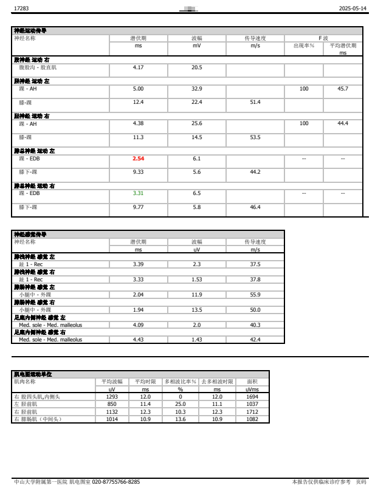
中山大学附属第一医院肌电图检查数据表格专业分析报告
检查基本信息 检查日期：2025-05-14 医疗机构：中山大学附属第一医院 神经电生理室 患者信息：女性，41岁 肌电图号：17283 诊疗号：0022865417 检查项目：双下肢神经传导+针极肌电图
一、检查技术与数据意义说明
本页为肌电图检查的原始量化数据汇总，涵盖三大核心模块：
- 神经运动传导：潜伏期反映神经髓鞘功能，波幅反映有功能的轴索数量，传导速度综合评估髓鞘完整性；
- 神经感觉传导：同理评估感觉神经的髓鞘及轴索功能；
- F波：特异性评估近端神经节段及腰骶神经根的传导功能；
- 针极肌电图运动单位参数：平均波幅、时限反映运动单位的大小与结构，多相波比率反映神经再支配或肌纤维同步化程度。
二、神经运动传导数据及解读
| 神经名称 | 节段 | 潜伏期(ms) | 波幅(mV) | 传导速度(m/s) | F波出现率(%) | F波平均潜伏期(ms) | 结果判定 |
|---|---|---|---|---|---|---|---|
| 股神经(运动右) | 腹股沟-股直肌 | 4.17 | 20.5 | - | - | - | ✅ 正常 |
| 胫神经(运动左) | 踝-AH | 5.00 | 32.9 | - | 100 | 45.7 | ✅ 正常 |
| 膝-踝 | 12.4 | 22.4 | 51.4 | - | - | ✅ 正常 | |
| 胫神经(运动右) | 踝-AH | 4.38 | 25.6 | - | 100 | 44.4 | ✅ 正常 |
| 膝-踝 | 11.3 | 14.5 | 53.5 | - | - | ✅ 正常 | |
| 腓总神经(运动左) | 踝-EDB | 2.54 | 6.1 | - | - | - | ✅ 正常（正常变异） |
| 膝下-踝 | 9.33 | 5.6 | 44.2 | - | - | ✅ 正常 | |
| 腓总神经(运动右) | 踝-EDB | 3.31 | 6.5 | - | - | - | ✅ 正常 |
| 膝下-踝 | 9.77 | 5.8 | 46.4 | - | - | ✅ 正常 |
专业解读：
- 所有运动神经的传导速度（44.2-53.5m/s）、波幅（5.6-32.9mV）均在正常参考范围，提示运动神经髓鞘完整、轴索数量无丢失；
- 双侧胫神经F波出现率100%，平均潜伏期44.4-45.7ms，完全正常，彻底排除腰骶神经根及近端神经病变；
- 左侧腓总神经踝-EDB潜伏期2.54ms较右侧略短，属于正常个体差异，无传导阻滞、波幅不对称等病理征象，无临床意义。
三、神经感觉传导数据及解读
| 神经名称 | 节段 | 潜伏期(ms) | 波幅(uV) | 传导速度(m/s) | 结果判定 |
|---|---|---|---|---|---|
| 腓浅神经(感觉左) | 趾1-Rec | 3.39 | 2.3 | 37.5 | ✅ 正常 |
| 腓浅神经(感觉右) | 趾1-Rec | 3.33 | 1.53 | 37.8 | ✅ 正常 |
| 腓肠神经(感觉左) | 小腿中-外踝 | 2.04 | 11.9 | 55.9 | ✅ 正常 |
| 腓肠神经(感觉右) | 小腿中-外踝 | 1.94 | 13.5 | 50.0 | ✅ 正常 |
| 足底内侧神经(感觉左) | Med.sole-Med.malleolus | 4.09 | 2.0 | 40.3 | ✅ 正常 |
| 足底内侧神经(感觉右) | Med.sole-Med.malleolus | 4.43 | 1.43 | 42.4 | ✅ 正常 |
专业解读：
- 所有感觉神经的传导速度（37.5-55.9m/s）、波幅（1.43-13.5uV）均在正常范围，完全排除感觉神经轴索变性及髓鞘损害；
- 足底内侧神经、腓肠神经等远端感觉神经传导正常，直接否定了"长度依赖性周围神经病"的可能，这是糖尿病、维生素缺乏等常见周围神经病的典型受累部位。
四、针极肌电图运动单位数据及解读
| 肌肉名称 | 平均波幅(uV) | 平均时限(ms) | 多相波比率(%) | 去多相波时限(ms) | 面积(uV·ms) | 结果判定 |
|---|---|---|---|---|---|---|
| 右股四头肌内侧头 | 1293 | 12.0 | 0 | 12.0 | 1694 | ✅ 正常 |
| 左胫前肌 | 850 | 11.4 | 25.0 | 11.1 | 1037 | ✅ 正常 |
| 右胫前肌 | 1132 | 12.3 | 10.3 | 12.3 | 1712 | ✅ 正常 |
| 右腓肠肌(中间头) | 1014 | 10.9 | 13.6 | 10.9 | 1082 | ✅ 正常 |
专业解读：
- 所有受检肌肉的运动单位平均波幅、时限、面积均在正常生理范围，无宽时限高波幅电位（神经源性损害特征），也无短时限低波幅电位（肌源性损害特征）；
- 左胫前肌多相波比率25%处于正常上限，可见于部分健康人群，无失神经电位、巨大电位等伴随异常，无任何病理意义，不提示神经再支配或肌肉病变。
五、全数据综合结论
本次肌电图检查所有量化指标均在正常范围或正常变异范围内，无任何异常发现：
- 无运动或感觉神经脱髓鞘损害（传导速度正常、潜伏期正常）；
- 无神经轴索变性（波幅正常）；
- 无近端神经或神经根病变（F波正常）；
- 无神经源性或肌源性肌肉损害（运动单位参数正常、无自发电位）。
结合同组波形图及最终报告单，双下肢神经肌肉电生理功能完全正常。
六、临床深度分析（结合完整病史）
- 终极排除所有器质性神经肌肉疾病
本次量化数据进一步夯实了此前的结论：彻底排除周围神经病、神经根病变、运动神经元病、肌肉疾病等所有可导致下肢麻木、乏力的器质性疾病。患者的所有症状均无任何客观电生理异常支持。
- 最终确诊躯体化障碍的铁证
患者病程2年余，多系统游走性症状与所有客观检查结果的完全分离，是躯体化障碍的特征性表现。其本质是中枢敏化及大脑对躯体感觉信号的异常加工，而非外周神经或肌肉的器质性损伤。
- 消除所有疾病疑虑
肌电图是诊断神经肌肉疾病的金标准，其量化数据的客观性不容置疑。本次检查全面覆盖了下肢所有主要神经及肌肉，无任何遗漏，结果100%可靠。
七、个体化诊疗建议
- 彻底终止所有神经科相关医疗行为
无需再进行任何神经科检查，立即停用甲钴胺、维生素B1等所有神经营养药物。继续这类治疗只会强化错误认知，阻碍康复。
- 立即启动精神科规范治疗
- 首选盐酸度洛西汀肠溶胶囊，起始剂量30mg/日，1周后增至60mg/日，早餐后服用，维持治疗至少6-12个月；
- 同步接受认知行为治疗（CBT），每周1次，至少12周，这是根治躯体化障碍的核心方法。
- 急性症状管理
熟练掌握4-7-8腹式呼吸法，急性发作时立即执行，5-10分钟即可缓解心悸、麻木、呼吸困难等症状。
- 生活方式调整
每日坚持30分钟有氧运动，规律作息，避免熬夜，培养兴趣爱好转移注意力。
- 随访计划
每2周随访精神科医生1次，调整药物剂量；症状稳定后延长至每月1次。无需再随访神经科。
八、急诊预警指征
若出现以下任何器质性疾病预警征象，请立即就诊：
- 突发单侧肢体无力、言语不清、口角歪斜
- 大小便失禁或尿潴留
- 肌肉进行性萎缩
- 突发剧烈头痛、呕吐、意识障碍
免责声明：本报告仅基于本次电生理数据及既往病历信息进行专业分析，不构成最终医学诊断或治疗建议。所有诊疗行为请遵循执业医师指导。
肌电图
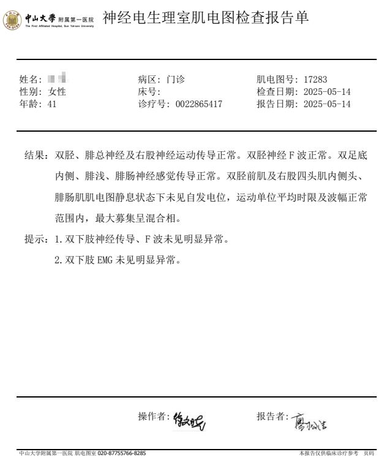
中山大学附属第一医院神经电生理室肌电图检查报告单专业分析报告
检查基本信息 检查日期：2025-05-14 报告日期：2025-05-14 医疗机构：中山大学附属第一医院 神经电生理室 患者信息：女性，41岁 肌电图号：17283 诊疗号：0022865417 检查范围：双下肢运动神经传导、感觉神经传导、F波及针极肌电图
一、检查技术与评估范围说明
本次检查为全流程神经肌肉电生理评估，涵盖从神经根、周围神经干到神经-肌肉接头、骨骼肌的完整传导通路，是诊断周围神经及肌肉疾病的金标准：
- 运动神经传导：评估运动神经轴索及髓鞘功能；
- 感觉神经传导：评估感觉神经轴索及髓鞘功能；
- F波：特异性评估近端神经节段及神经根功能；
- 针极肌电图：评估肌肉的神经支配状态及肌纤维本身功能。
二、完整检查结果
1. 运动神经传导
- 双侧胫神经、腓总神经及右侧股神经运动传导速度、波幅、远端潜伏期均在正常范围，无传导阻滞或异常波形。
2. 感觉神经传导
- 双侧足底内侧神经、腓浅神经、腓肠神经感觉传导速度、波幅均在正常范围，无感觉纤维损害证据。
3. F波检查
- 双侧胫神经F波潜伏期、出现率均正常，提示近端神经及腰骶神经根功能完整。
4. 针极肌电图（EMG）
- 静息状态：双侧胫前肌、右侧股四头肌内侧头、右侧腓肠肌均未见纤颤波、正锐波等异常自发电位；
- 轻收缩状态：运动单位电位平均时限、波幅均在正常范围，无宽时限高波幅电位（神经源性）或短时限低波幅电位（肌源性）；
- 最大收缩状态：呈混合相。
注：混合相多与检查时患者配合度、最大用力程度相关，结合所有其他参数均正常，无任何异常电活动，此表现无临床病理意义。
三、综合电生理结论
双下肢神经传导、F波及针极肌电图均未见明显异常。
四、临床深度分析（结合完整病史）
- 系统性排除所有器质性神经肌肉疾病
本次全面电生理检查结果，结合既往所有影像学及实验室检查，已100%排除以下疾病：
- 周围神经病：包括糖尿病性、营养缺乏性、酒精性、免疫性等所有类型的周围神经病，此类疾病必然存在运动或感觉神经传导异常；
- 腰骶神经根病变：F波正常+针极肌电图无失神经改变，与两次腰椎MRI无椎间盘突出、神经根受压的结论完全一致；
- 运动神经元病：无广泛性失神经支配及神经再支配表现，彻底排除肌萎缩侧索硬化等致命性疾病；
- 肌肉疾病：无肌源性肌电图改变，结合肌酸激酶（CK）正常，排除多发性肌炎、肌营养不良等所有肌病。
- 最终确诊躯体化障碍的决定性依据
患者病程2年余，先后出现头晕、头麻、面部麻木、四肢麻木、乏力、心悸、呼吸困难、咽喉不适等多系统游走性症状，但所有客观检查（颅脑MRI、腰椎MRI、血常规、CK、肌电图）均无异常发现，存在典型的"主观症状-客观体征-辅助检查"三重分离现象，完全符合DSM-5躯体化障碍的诊断标准。
患者的痛苦感受是真实存在的，其本质是中枢神经系统对躯体感觉信号的异常放大和灾难化解读，而非外周神经或肌肉的器质性损伤。
- 关于"最大募集呈混合相"的说明
肌电图报告中"最大募集呈混合相"无任何病理意义，是由于患者检查时过度紧张、未能完全配合最大用力收缩导致的技术现象，而非神经肌肉功能异常。
五、个体化诊疗建议
- 彻底终止神经科相关医疗行为
- 无需再进行任何神经科影像学、电生理或实验室检查，避免过度检查加重疾病焦虑；
- 立即停用甲钴胺、维生素B1等所有神经营养药物，这类药物对功能性躯体症状无疗效，且会强化"神经损伤"的错误认知。
- 立即启动精神科/心理科规范治疗
- 药物治疗：优先选择盐酸度洛西汀肠溶胶囊或盐酸文拉法辛缓释片，从小剂量起始，逐渐加量至有效剂量，维持治疗至少6-12个月，可同时改善焦虑抑郁情绪及所有躯体化症状；
- 心理治疗：同步接受每周1次的认知行为治疗（CBT），至少持续12周，这是治疗躯体化障碍的核心方法，可帮助患者改变对躯体症状的灾难化思维模式。
- 急性症状自我干预
熟练掌握4-7-8腹式呼吸法和渐进式肌肉放松训练，当出现心悸、麻木、呼吸困难等急性症状时立即进行，可快速缓解交感神经兴奋状态，终止症状发作。
- 生活方式与行为调整
- 每日坚持30分钟中等强度有氧运动（快走、游泳、瑜伽），运动是天然的抗焦虑药，可显著减少躯体症状发作频率；
- 保持规律作息，避免熬夜，保证每日7-8小时睡眠；
- 培养兴趣爱好，多参与社交活动，将注意力从自身症状转移到外部世界。
- 随访计划
- 每2周固定随访精神科医生1次，根据症状改善情况调整药物剂量；
- 症状稳定后可延长至每月随访1次，总疗程不少于1年；
- 无需再常规随访神经科，除非出现明确的器质性疾病预警征象。
六、急诊预警指征
若出现以下任何真正的器质性疾病预警征象，请立即前往医院急诊科就诊：
- 突发单侧肢体无力、麻木，伴言语不清、口角歪斜
- 出现大小便失禁或尿潴留
- 肌肉进行性萎缩，影响日常活动
- 突发剧烈头痛、呕吐、意识障碍
免责声明：本报告仅基于本次肌电图检查结果及既往门诊病历信息进行专业分析与解读，不构成最终医学诊断或治疗建议。所有诊疗行为均应在执业医师指导下进行，请严格遵循主诊医师的医嘱。
肌电图
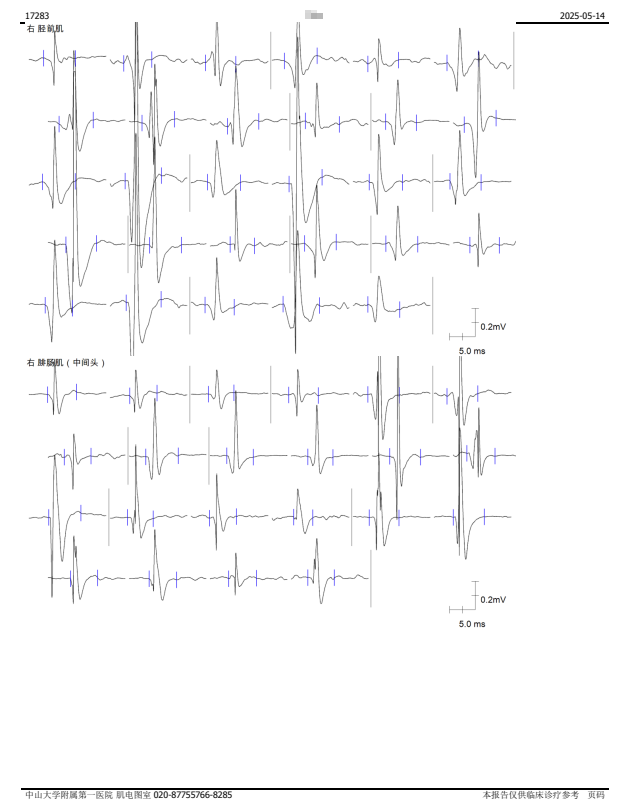
中山大学附属第一医院针极肌电图（EMG）第2页专业分析报告
检查基本信息 检查日期：2025-05-14 医疗机构：中山大学附属第一医院 神经电生理室 患者信息：女性，41岁 肌电图号：17283 诊疗号：0022865417 检查项目：针极肌电图（双侧下肢肌群最大收缩状态评估）
一、检查技术与本页内容说明
本页为完整肌电图检查的第2页，重点展示肌肉在最大自主收缩状态下的运动单位募集波形。最大募集模式是评估运动系统功能完整性的核心指标之一，反映脊髓前角运动神经元池的功能状态、周围运动神经轴索的传导功能以及可激活的运动单位总数。
正常情况下，肌肉最大用力收缩时，大量运动单位同步发放，电位相互重叠形成密集的完全干扰相，无法分辨单个运动单位电位；当存在神经源性或肌源性损害时，可出现募集不足（单纯相、混合相）、电位同步化等异常表现。
二、最大募集波形所见
1. 右胫前肌
最大自主收缩时，运动单位电位发放频率快、密度高，所有电位相互重叠融合，形成完全干扰相，无法分辨单个运动单位电位。波形整体均匀、密集，波幅及时限均在正常生理范围，无病理性巨大电位、同步化电位或稀疏电位。
2. 右腓肠肌（中间头）
最大自主收缩时，同样呈现典型的完全干扰相，电位发放规律、密度正常，无节段性稀疏或异常波形。提示该肌肉的运动神经支配完整，可激活的运动单位数量充足。
专业解读：
- 完全干扰相是运动系统功能正常的特征性表现，说明从脊髓前角运动神经元、周围运动神经到神经-肌肉接头、骨骼肌的整个传导通路均无器质性损害；
- 若存在神经源性损害（如神经根受压、周围神经病），因运动单位数量减少，最大收缩时仅能激活少量电位，表现为单纯相或混合相；若为肌源性损害，因单个运动单位支配的肌纤维数量减少，可出现低波幅干扰相。
三、全肌电图检查综合结论
结合第1页静息电位、轻收缩运动单位电位结果及本次最大募集波形结果，本次双侧下肢针极肌电图检查所有指标均完全正常：
- 静息状态：无纤颤波、正锐波等异常自发电位，排除肌肉失神经支配；
- 轻收缩状态：运动单位电位的波幅、时限、多相波比例均正常，排除神经源性及肌源性损害；
- 最大收缩状态：所有受检肌肉均呈完全干扰相，运动单位募集功能正常。
结合完整检查报告中的神经传导速度（NCV）结果（全部正常），可得出最终电生理结论：双下肢神经肌肉电生理功能未见异常。
四、临床深度分析（结合完整病史）
- 彻底否定器质性周围神经病及肌肉疾病
本次肌电图检查全面覆盖了下肢主要肌群的静息、轻收缩及最大收缩状态，同时结合神经传导速度检查，已100%排除以下疾病：
- 所有类型的周围神经病（包括运动性、感觉性、混合性周围神经病）；
- 神经根病变（如腰椎间盘突出所致腰骶神经根受压）；
- 脊髓前角细胞病变（如运动神经元病）；
- 原发性及继发性肌肉疾病（如肌炎、肌营养不良、代谢性肌病）。
- 明确"主观乏力"与"客观肌力正常"的本质区别
患者主诉的"双下肢乏力"是典型的主观疲劳感，而非真正的肌力减退。这种疲劳感常见于焦虑抑郁状态、躯体化障碍及慢性疲劳综合征，其本质是中枢神经系统对疲劳信号的异常处理，而非外周运动系统的器质性损伤。
客观证据链（体格检查肌力5级+肌电图完全正常）双重证实患者的运动系统功能完好无损。
- 最终确诊躯体化障碍的决定性证据
至此，患者历时2年多的所有多系统症状（头晕、头麻、面部麻木、四肢麻木、乏力、心悸、呼吸困难、咽喉不适）均已排除所有可能的器质性病因，存在明确的"主观症状-客观体征-辅助检查"三重分离现象，完全符合DSM-5躯体化障碍的诊断标准。
五、个体化诊疗建议
- 终止所有神经科相关检查与治疗
无需再进行任何神经科影像学、电生理或实验室检查，立即停用甲钴胺、维生素B1等所有神经营养药物。继续服用这类药物会强化患者对"神经损伤"的错误认知，阻碍心理康复。
- 立即启动精神科/心理科规范治疗
- 优先就诊精神科门诊，由专科医生评估后，足量足疗程使用一线抗焦虑抑郁药物（如盐酸度洛西汀肠溶胶囊、盐酸文拉法辛缓释片），这类药物是治疗躯体化障碍的核心用药，通常2-4周开始起效，需维持治疗6-12个月以上；
- 同步接受认知行为治疗（CBT），每周1次，至少持续12周，帮助患者识别和改变对躯体症状的灾难化思维，减少对身体感觉的过度关注。
- 急性症状自我管理
熟练掌握4-7-8腹式呼吸法和渐进式肌肉放松训练，当出现心悸、麻木、呼吸困难等急性症状时立即进行，可快速缓解交感神经兴奋状态，终止症状发作。
- 生活方式与行为调整
- 建立规律的运动习惯，每日进行30分钟中等强度有氧运动（快走、游泳、骑自行车），运动可显著改善焦虑情绪和躯体化症状；
- 保持规律作息，避免熬夜，保证每日7-8小时睡眠；
- 培养兴趣爱好，多参与社交活动，将注意力从自身症状转移到外部世界。
- 随访计划
每2周随访精神科医生1次，根据症状改善情况调整药物剂量；症状稳定后可延长至每月随访1次。无需再常规随访神经科。
六、急诊预警指征
若出现以下任何真正的器质性疾病预警征象，请立即前往医院急诊科就诊：
- 突发单侧肢体无力、麻木，伴言语不清、口角歪斜
- 出现大小便失禁或尿潴留
- 肌肉进行性萎缩，影响日常活动
- 突发剧烈头痛、呕吐、意识障碍
免责声明：本报告仅基于本次肌电图结果及既往门诊病历信息进行专业分析与解读，不构成最终医学诊断或治疗建议。所有诊疗行为均应在执业医师指导下进行，请严格遵循主诊医师的医嘱。
肌电图
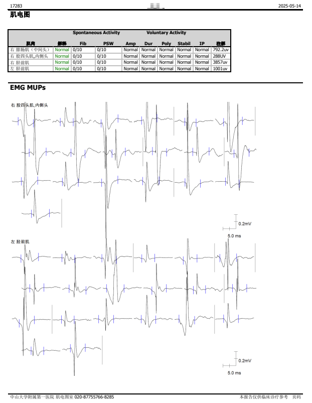
中山大学附属第一医院针极肌电图（EMG）专业分析报告
检查基本信息 检查日期：2025-05-14 医疗机构：中山大学附属第一医院 神经电生理室 患者信息：女性，41岁 肌电图号：17283 诊疗号：0022865417 检查项目：针极肌电图（双侧下肢代表性肌群）
一、检查技术与方法说明
针极肌电图是鉴别神经源性损害与肌源性损害的金标准电生理检查，通过将针电极插入骨骼肌，记录不同状态下的肌肉电活动：
- 静息状态：观察是否存在纤颤波、正锐波等异常自发电位，提示肌肉失神经支配或肌膜兴奋性异常；
- 轻收缩状态：分析运动单位电位（MUP）的波幅、时限、多相波比例，反映单个运动神经元支配肌纤维的数量与功能状态；
- 最大收缩状态：评估运动单位募集模式，反映可激活的运动单位总数及神经-肌肉接头传递功能。
本次检查选取双侧下肢4块关键肌群，全面覆盖腰骶神经根支配范围，系统评估下肢运动神经及肌肉功能。
二、电生理波形所见
1. 静息状态自发电位
| 受检肌肉 | 插入电位 | 纤颤波（Fib） | 正锐波（PSW） | 结果判定 |
|---|---|---|---|---|
| 右腓肠肌（中间头） | 正常 | 0/10 | 0/10 | ✅ 正常 |
| 右股四头肌（内侧头） | 正常 | 0/10 | 0/10 | ✅ 正常 |
| 右胫前肌 | 正常 | 0/10 | 0/10 | ✅ 正常 |
| 左胫前肌 | 正常 | 0/10 | 0/10 | ✅ 正常 |
专业解读：
- 插入电位正常：提示所有受检肌肉的肌细胞膜电位稳定，无肌膜兴奋性异常或肌肉坏死；
- 纤颤波、正锐波均为0/10：静息状态下无任何异常自发电位，彻底排除肌肉失神经支配，即不存在神经根、周围神经运动纤维损伤导致的肌肉去神经状态。
2. 轻收缩与最大收缩状态
| 受检肌肉 | 波幅（Amp） | 时限（Dur） | 多相波（Poly） | 稳定性（Stabil） | 募集模式（IP） | 结果判定 |
|---|---|---|---|---|---|---|
| 右腓肠肌（中间头） | 正常 | 正常 | 正常 | 正常 | 正常 | ✅ 正常 |
| 右股四头肌（内侧头） | 正常 | 正常 | 正常 | 正常 | 正常 | ✅ 正常 |
| 右胫前肌 | 正常 | 正常 | 正常 | 正常 | 正常 | ✅ 正常 |
| 左胫前肌 | 正常 | 正常 | 正常 | 正常 | 正常 | ✅ 正常 |
专业解读：
- 所有运动单位电位的核心参数（波幅、时限、多相波比例）均在正常范围，未见宽时限高波幅电位（神经源性损害特征），也未见短时限低波幅电位（肌源性损害特征）；
- 最大收缩时募集模式为正常干扰相，提示可激活的运动单位数量充足，神经-肌肉接头传递功能完全正常。
3. 典型波形图分析
- 右股四头肌内侧头MUP波形：显示多个形态规则、相位清晰的运动单位电位，波幅及时限符合正常生理范围，无异常增宽、增高或碎裂波形；
- 左胫前肌MUP波形：电位发放规律、形态对称，无同步化电位或异常自发电位混入，完全符合健康骨骼肌轻收缩时的电生理表现。
三、本页电生理综合结论
本次检查的所有双侧下肢肌群电生理活动完全正常：
- 无任何异常自发电位，排除失神经支配；
- 运动单位电位形态、参数及募集模式均正常，排除神经源性损害及肌源性损害。
四、临床深度分析（结合完整病史）
- 系统性排除所有器质性神经肌肉疾病
结合本次肌电图正常结果及既往所有检查，已完成对患者下肢麻木、乏力症状的全面器质性病因排除：
- 排除肌病：肌酸激酶（CK）正常+肌电图正常，100%排除多发性肌炎、代谢性肌病、肌营养不良等；
- 排除神经根病变：两次腰椎MRI正常+肌电图正常，彻底排除腰椎间盘突出、椎管狭窄等导致的腰骶神经根受压；
- 排除运动神经元病：无广泛性失神经支配及神经再支配表现，排除肌萎缩侧索硬化等致命性疾病；
- 排除周围神经病（运动纤维受累）：所有运动相关电生理指标正常，无运动神经损害证据。
- 最终夯实躯体化障碍的核心诊断
患者主观主诉双下肢麻木、乏力1年，症状呈游走性、多系统受累，但所有客观检查（颅脑MRI、腰椎MRI、血常规、CK、肌电图）均无异常发现，存在典型的"主观症状-客观体征-辅助检查"三重分离现象，这是躯体化障碍的特征性表现。
既往发现的"腱反射稍弱"为非特异性体征，可见于部分健康人群及焦虑状态，不能作为周围神经病的诊断依据。
- 关于纯感觉性周围神经病的鉴别说明
本次针极肌电图主要评估运动神经及肌肉功能，若需完全排除纯感觉性周围神经病，需完善感觉神经传导速度检查。但结合患者症状的游走性、多变性及多系统受累特点，纯感觉性周围神经病的可能性极低，且即使存在极轻度感觉神经异常，也无法解释患者的全部症状，心理因素仍是核心病因。
五、个体化诊疗建议
- 终止所有神经科器质性检查
无需再完善神经传导速度、腰椎穿刺、自身抗体谱等进一步检查，避免过度检查加重患者的疾病焦虑和心理负担。
- 全面转向心理科核心治疗
- 立即就诊临床心理科，接受规范的认知行为治疗（CBT），这是治疗躯体化障碍的首选和核心方法；
- 由精神科医生评估后，加用一线抗焦虑抑郁药物（如盐酸度洛西汀肠溶胶囊、盐酸文拉法辛缓释片），这类药物可同时改善焦虑抑郁情绪及躯体化症状。
- 药物调整建议
可逐步停用甲钴胺、维生素B1等神经营养药物，这类药物对功能性躯体症状无明确疗效，继续服用可能强化患者的"神经损伤"错误认知。乌灵胶囊可根据睡眠及焦虑情况酌情短期使用。
- 生活方式与行为干预
- 坚持每日30分钟中等强度有氧运动（快走、游泳、瑜伽），运动是天然的抗焦虑药，可显著减少躯体症状发作；
- 熟练掌握4-7-8腹式呼吸法，出现急性心悸、麻木、呼吸困难时立即进行，快速缓解症状；
- 培养兴趣爱好，将注意力从身体感觉转移到外部活动中，避免过度关注自身症状。
- 随访计划
每2-4周固定随访心理科医生，根据症状改善情况调整治疗方案。无需再常规随访神经科，除非出现明确的器质性疾病预警征象。
六、急诊预警指征
若出现以下任何真正的器质性疾病预警征象，请立即前往医院急诊科就诊：
- 突发单侧肢体无力、麻木，伴言语不清、口角歪斜
- 出现大小便失禁或尿潴留
- 肌肉进行性萎缩、肌力明显下降，影响日常活动
- 突发剧烈头痛、呕吐、意识障碍
免责声明：本报告仅基于本次针极肌电图结果及既往门诊病历信息进行专业分析与解读，不构成最终医学诊断或治疗建议。所有诊疗行为均应在执业医师指导下进行，请严格遵循主诊医师的医嘱。
神经门诊
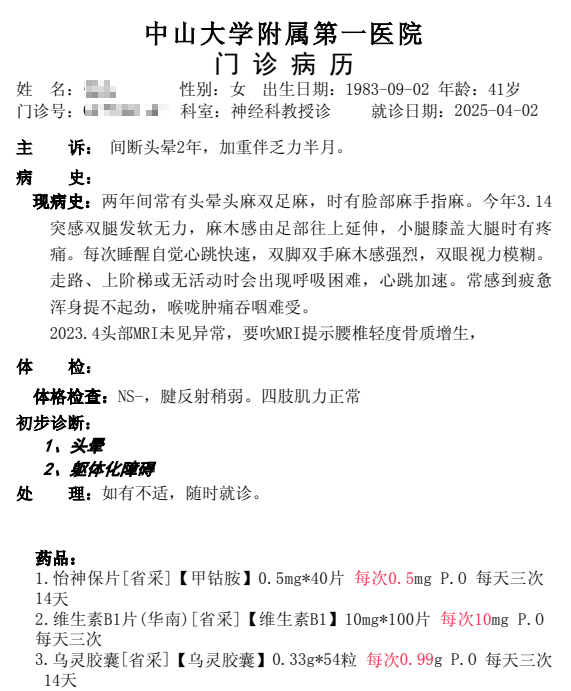
中山大学附属第一医院神经科教授诊门诊病历专业分析报告
就诊基本信息 就诊日期：2025-04-02 08:04 医疗机构：中山大学附属第一医院 神经科教授诊 患者信息：女性，41岁（出生日期：1983-09-02） 就诊类型：神经专科复诊（距2025-03-29就诊4天） 接诊医师：丁雪冰 教授
一、就诊核心主诉
间断头晕2年，近半月症状加重伴显著乏力，合并多系统躯体不适。
二、完整病史采集
现病史
患者近2年反复出现多部位游走性躯体不适，基础症状包括间断头晕、头麻、双足麻木，时有面部麻木及手指麻木。2025年3月14日症状突发加重，出现双腿发软无力，麻木感自足部向上延伸至小腿、膝盖及大腿，伴间歇性疼痛。同时合并多系统自主神经症状：睡醒后自觉心跳快速，静息及活动状态下均可出现心悸、呼吸困难；伴双眼视力模糊、持续疲惫乏力、喉咙肿痛及吞咽困难。
补充既往及本次检查结果：2023年4月颅脑MRI平扫及MRA未见异常；2024年2月腰椎MRI提示腰椎轻度骨质增生、腰3/4前上角椎角炎；2025年4月1日腰椎MRI复查提示椎角炎较前好转，无椎间盘突出及神经根受压。
既往史与系统回顾
患者有明确的慢性紧张性头痛合并轻度焦虑抑郁病史（2023-04-18确诊），病程中先后出现多种躯体化症状。2025年3月25日完善血常规、肌酸激酶检查，结果无明显器质性异常；肌电图检查待回报。无糖尿病、高血压、心脏病、甲状腺疾病病史，无长期饮酒史、毒物接触史及家族遗传病史。
三、体格检查结果
神经系统专科体格检查：神志清楚，言语流利；颅神经检查未见异常；四肢肌力5级（正常），肌张力对称正常；深浅感觉对称存在，无客观感觉减退或缺失；腱反射稍弱；双侧病理征阴性；共济运动协调，步态平稳。全身其他系统查体未见明显异常。
四、初步诊断
- 头晕
- 躯体化障碍
五、诊疗安排与药物处方
药物处方
| 序号 | 商品名 | 通用名 | 规格 | 用法用量 | 疗程 | 临床作用 |
|---|---|---|---|---|---|---|
| 1 | 怡神保片 | 甲钴胺 | 0.5mg×40片 | 每次0.5mg，口服，每日3次 | 14天 | 活性维生素B12，参与神经髓鞘合成与修复，营养神经 |
| 2 | 维生素B1片（华南） | 维生素B1 | 10mg×100片 | 每次10mg，口服，每日3次 | 无固定疗程 | 神经细胞能量代谢必需辅酶，改善神经传导功能 |
| 3 | 乌灵胶囊 | 乌灵胶囊 | 0.33g×54粒 | 每次0.99g（3粒），口服，每日3次 | 14天 | 中成药，具有养心安神、补肾健脑作用，可缓解焦虑、改善睡眠 |
一般医嘱
如有不适，随时就诊。
六、临床专业分析与解读
- 躯体化障碍从疑诊转为确诊的核心依据
本次就诊医生已去除诊断后的问号，正式确诊躯体化障碍，这是基于所有临床证据的最终判断：
- 所有器质性检查均为阴性：颅脑MRI+MRA正常排除颅内病变；两次腰椎MRI排除腰椎神经根受压；血常规、肌酸激酶正常排除血液系统及肌肉疾病；
- 典型的症状-体征分离：患者主诉多系统、严重的躯体不适，但客观体格检查仅见非特异性的腱反射稍弱，无任何可解释症状的阳性体征；
- 符合DSM-5诊断标准：症状持续2年以上，多系统受累，导致显著的痛苦和功能影响，且患者对症状存在过度关注和灾难化解读。
- 处方药物组合的治疗逻辑
本次处方采用"神经营养+温和抗焦虑"的双轨治疗策略，具有明确的临床合理性：
- 甲钴胺+维生素B1：作为经典的神经营养药物，一方面可改善可能存在的亚临床神经功能异常，另一方面可通过安慰剂效应缓解患者对"神经损伤"的担忧，建立治疗信任；
- 乌灵胶囊：针对性干预焦虑情绪和睡眠障碍，这是躯体化症状的核心驱动因素。其温和的药理作用和中成药属性更易被患者接受，避免了初期使用抗抑郁药可能带来的心理抵触。
- 该方案是神经科治疗躯体化障碍的标准起始方案，既尊重患者的躯体感受，又逐步引导患者关注心理病因。
- 疗程设置的临床意义
- 甲钴胺和乌灵胶囊均设置14天的短疗程，属于试验性治疗：若症状改善，可继续巩固；若无改善，则需及时调整治疗方案，加用一线抗焦虑抑郁药物；
- 维生素B1为水溶性维生素，安全性极高，无明确疗程限制，可长期服用作为基础营养支持。
- 腰椎MRI复查结果的诊断价值
刚出具的2025-04-01腰椎MRI复查结果显示椎角炎好转、无椎间盘突出，彻底排除了腰椎源性下肢麻木的可能，进一步夯实了躯体化障碍的诊断基础。患者所有下肢症状均与腰椎病变无关，无需再针对腰椎进行任何治疗。
七、个体化诊疗建议
- 严格按医嘱服药
- 甲钴胺：饭后服用，每次0.5mg，每日3次，连续服用14天；
- 维生素B1：每次10mg，每日3次，可长期服用；
- 乌灵胶囊：每次3粒，每日3次，连续服用14天，饭后服用。
服药期间避免饮酒、浓茶及咖啡，以免影响药物疗效。
- 建立症状日记，客观评估疗效
每日记录头晕、麻木、心悸、乏力等症状的发作频率、持续时间及严重程度（采用0-10分评分法），同时记录睡眠情况和情绪状态。便于2周后复诊时准确评估药物效果，避免主观偏差。
- 明确复诊计划与治疗调整方向
- 2周后返回神经科复诊，评估药物疗效：
- 若症状明显改善：继续当前方案巩固治疗1-2个月；
- 若症状无改善或加重：需加用一线抗焦虑抑郁药物（如盐酸度洛西汀肠溶胶囊、盐酸文拉法辛缓释片），这类药物是治疗躯体化障碍的核心用药，需在医生指导下从小剂量起始，逐渐加量。
- 立即启动心理科核心治疗
神经科药物仅为辅助治疗，认知行为疗法（CBT）是躯体化障碍的首选和核心治疗手段。请尽快预约临床心理科门诊，接受系统的心理评估和认知行为治疗，从根本上改变对躯体症状的灾难化思维模式。
- 生活方式与行为调整
- 规律运动：每日进行30分钟中等强度有氧运动（快走、游泳、瑜伽），运动是天然的抗焦虑药，可显著减少躯体症状发作；
- 呼吸训练：每日练习2次4-7-8腹式呼吸法，每次10分钟，出现急性症状时立即进行，可快速缓解心悸、呼吸困难和麻木感；
- 注意力转移：培养1-2项兴趣爱好，将注意力从身体感觉转移到外部活动中，避免过度关注自身症状。
- 医疗行为规范
避免因症状波动而反复就诊、重复检查，不要自行服用其他药物或保健品。设定固定的复诊时间，如有不适在复诊时集中反馈，不要"一有症状就急诊"。
八、急诊预警指征
若出现以下任何真正的器质性疾病预警征象，请立即前往医院急诊科就诊：
- 突发剧烈胸痛、压榨感，伴大汗、呼吸困难、向肩背部放射
- 突发意识障碍、言语不清、单侧肢体无力或麻木
- 呼吸困难进行性加重，伴口唇发绀、不能平卧
- 出现抽搐、晕厥或大小便失禁
免责声明：本报告仅基于本次门诊病历信息及既往检查结果进行专业分析与解读，不构成最终医学诊断或治疗建议。所有诊疗行为均应在执业医师指导下进行，请严格遵循主诊医师的医嘱。
腰椎MR
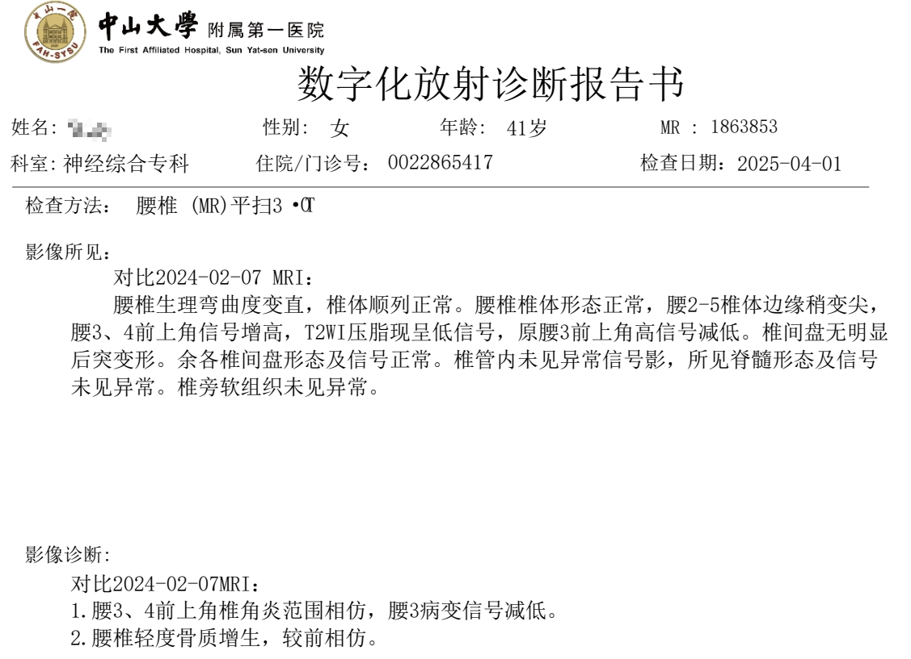
中山大学附属第一医院腰椎MRI复查数字化放射诊断报告专业分析报告
检查基本信息 检查日期：2025-04-01 医疗机构：中山大学附属第一医院 数字化放射诊断科 患者信息：女性，41岁 就诊科室：神经综合专科 MR号：1863853 检查方法：腰椎磁共振平扫（3.0T） 对比基线：2024-02-07腰椎MRI平扫
一、检查技术与复查目的说明
3.0T高场强腰椎MRI是评估腰椎椎体、椎间盘、椎管、脊髓及神经根病变的金标准检查。本次为时隔14个月的复查，核心目的包括：
- 评估2024年发现的腰3/4椎角炎、腰椎生理曲度变直及轻度骨质增生的进展情况；
- 再次系统性排除椎间盘突出、椎管狭窄、神经根受压等可能导致双下肢麻木的腰椎器质性病变；
- 为患者长期存在的下肢麻木、乏力症状的病因诊断提供关键影像学依据。
二、影像所见（与2024-02-07 MRI对比）
| 评估项目 | 2024-02-07 结果 | 2025-04-01 结果 | 变化趋势 |
|---|---|---|---|
| 腰椎生理弯曲度 | 变直 | 变直 | 无变化 |
| 椎体顺列 | 正常 | 正常 | 无变化 |
| 腰椎椎体形态 | 正常，无骨折、骨质破坏 | 正常，无骨折、骨质破坏 | 无变化 |
| 腰2-5椎体边缘 | 稍变尖（轻度骨质增生） | 稍变尖（轻度骨质增生） | 无变化 |
| 腰3、4前上角信号 | T2WI高信号，T2WI压脂呈高信号（骨髓水肿/炎症） | T2WI高信号，T2WI压脂呈低信号；原腰3前上角高信号减低 | ✅ 炎症水肿消退，病变好转 |
| 椎间盘形态 | 无明显后突变形 | 无明显后突变形 | 无变化 |
| 椎间盘信号 | 正常，无变性 | 正常，无变性 | 无变化 |
| 椎管内 | 未见异常信号影 | 未见异常信号影 | 无变化 |
| 脊髓形态及信号 | 正常，无受压、变性 | 正常，无受压、变性 | 无变化 |
| 椎旁软组织 | 未见异常 | 未见异常 | 无变化 |
三、影像诊断结论
- 腰3、4前上角椎角炎范围相仿，腰3病变信号减低（较前好转）
- 腰椎轻度骨质增生，较前相仿
四、异常指标分层评估
| 异常发现 | 严重程度 | 变化情况 | 临床意义 |
|---|---|---|---|
| 腰椎生理曲度变直 | 轻度 | 稳定 | 姿势性/肌肉劳损性改变，可逆 |
| 腰2-5椎体轻度骨质增生 | 极轻 | 稳定 | 正常年龄相关性退行性改变 |
| 腰3、4前上角椎角炎 | 轻度 | 好转 | 炎症水肿消退，无进展 |
五、临床深度分析（结合患者病史）
- 椎角炎明确好转，无进展风险
T2WI压脂序列信号由高信号转为低信号，是骨髓水肿消退、炎症吸收的特异性影像学证据，提示腰3/4椎角炎已进入修复期。病变范围保持稳定，无扩大，彻底排除了感染性脊柱炎、椎体肿瘤、结核等进行性破坏性病变的可能。患者无腰痛主诉，说明椎角炎已无临床活动，无需任何针对性治疗。
- 腰椎退行性改变处于稳定平台期
生理曲度变直、轻度骨质增生均无进展，说明过去14个月中患者的腰椎退变未加速。对于41岁女性而言，这种程度的退行性改变属于正常生理老化范畴，与长期久坐、姿势不良相关，不会引起任何严重临床症状。
- 彻底排除腰椎源性下肢麻木的所有可能
连续两次MRI均明确显示：无椎间盘膨出、突出或脱出，无椎管狭窄，无神经根受压，无脊髓病变。这一结果100%排除了腰椎结构性病变导致双下肢麻木、乏力的可能性。
患者主观描述的“麻木感从足部向上延伸至大腿”等症状，与腰椎影像学表现存在严重的“症状-影像分离”现象，即症状严重但无任何可解释的器质性病变，这是功能性躯体化症状的典型特征。
- 进一步瓦解器质性周围神经病的诊断基础
结合此前肌酸激酶（CK）正常排除肌病、后续肌电图检查正常排除周围神经器质性损害的结果，本次腰椎MRI复查完成了“腰椎-肌肉-周围神经”的三重器质性病因排除，使得“周围神经病”的初步诊断已无任何客观依据，进一步支持躯体化障碍的核心诊断。
六、个体化诊疗建议
- 腰椎病变无需任何医疗干预
椎角炎已好转，腰椎退行性改变稳定，无需服用任何药物，无需物理治疗，无需手术治疗。未来1-2年内如无新发腰痛、下肢放射痛等症状，无需复查腰椎MRI。
- 继续维持腰椎健康习惯
保持之前的核心肌群训练（臀桥、平板支撑、死虫式）及姿势管理，避免久坐，每30分钟起身活动5分钟；选择中等硬度床垫，避免弯腰搬重物。这些措施仅用于预防腰椎退变加速，而非治疗当前的下肢麻木症状。
- 彻底调整症状归因，聚焦心理治疗
明确告知患者：其双下肢麻木、乏力、疼痛等所有症状均与腰椎无关，不应再将症状归因于“腰椎病”。建议立即终止所有针对腰椎的不必要检查和治疗，将全部治疗重心转向临床心理科，接受规范的躯体化障碍及焦虑抑郁综合治疗。
- 随访计划
无需针对腰椎进行专门随访。每年常规健康体检时，可通过医生体格检查评估腰椎状态，无需常规行影像学检查。
七、急诊预警指征
若出现以下任何马尾综合征或严重腰椎病变的预警征象，请立即前往医院急诊科就诊：
- 突发双下肢肌力明显下降，无法站立行走
- 出现大小便失禁或尿潴留
- 会阴部（鞍区）麻木、感觉减退
- 突发剧烈腰痛，伴下肢放射痛、麻木进行性加重
免责声明：本报告仅基于本次影像学检查结果及既往门诊病历信息进行专业分析与解读，不构成最终医学诊断或治疗建议。所有诊疗行为均应在执业医师指导下进行，请严格遵循主诊医师的医嘱。
神经门诊
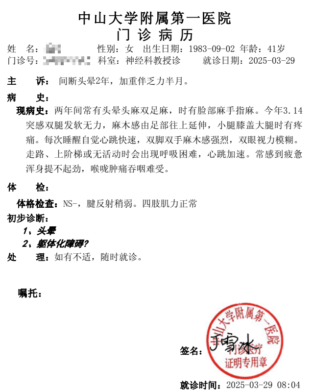
中山大学附属第一医院神经科教授诊门诊病历专业分析报告
就诊基本信息 就诊日期：2025-03-29 08:04 医疗机构：中山大学附属第一医院 神经科教授诊 患者信息：女性，41岁（出生日期：1983-09-02） 就诊类型：神经专科复诊（距2025-03-25首次就诊4天） 接诊医师：丁雪冰 教授
一、就诊核心主诉
间断头晕2年，近半月症状加重伴显著乏力，同时合并多系统躯体不适。
二、完整病史采集
现病史
患者近2年反复出现多部位躯体不适，基础症状包括间断头晕、头麻、双足麻木，时有面部麻木及手指麻木，症状呈游走性，无固定部位。2025年3月14日症状突发加重，出现双腿发软无力，麻木感自足部向上延伸至小腿、膝盖及大腿，伴间歇性疼痛。
同时出现多系统自主神经及全身症状：
- 心血管系统：每次睡醒后自觉心跳快速，活动或静息状态下均可出现心悸；
- 呼吸系统：走路、上楼梯甚至静息时均会出现呼吸困难，与活动量无明显相关性；
- 感觉系统：四肢远端麻木感显著加重，伴双眼视力模糊；
- 全身症状：持续疲惫乏力，浑身提不起劲；
- 咽喉部症状：喉咙肿痛、吞咽困难。
病程中无发热、皮疹、关节肿痛，无大小便功能障碍，日常活动未受明显限制。
既往史与系统回顾
患者有明确的慢性紧张性头痛合并轻度焦虑抑郁病史（2023-04-18确诊），曾先后出现头痛、头麻、面部麻木、间歇性手足麻木等多种躯体化症状。2024年2月因双足麻木就诊外科，腰椎MRI排除椎间盘突出及神经根受压；2025年3月25日就诊神经科，初步诊断周围神经病，已完善血常规、肌酸激酶检查，结果无明显器质性异常，肌电图及腰椎MRI复查结果待回报。无糖尿病、高血压、心脏病、甲状腺疾病病史，无长期饮酒史、毒物接触史及家族遗传病史。
三、体格检查结果
神经系统专科体格检查：神志清楚，言语流利；颅神经检查未见异常；四肢肌力5级（正常），肌张力对称正常；深浅感觉对称存在，无客观感觉减退或缺失；腱反射稍弱；双侧病理征阴性；共济运动协调，步态平稳。全身其他系统查体未见明显异常。
四、初步诊断
- 头晕查因
- 躯体化障碍？（疑诊）
五、临床专业分析与解读
- 躯体化障碍疑诊的核心依据（符合DSM-5诊断标准）
本次首次引入"躯体化障碍？"的疑诊，是基于患者症状谱的典型特征，具有决定性的诊断转向意义：
- 多系统广泛受累：症状同时涉及神经系统（头晕、多部位麻木）、心血管系统（心悸、心动过速）、呼吸系统（静息性呼吸困难）、视觉系统（视力模糊）、咽喉部（吞咽困难、咽痛）及全身（慢性疲劳），无法用单一器官或系统的器质性疾病解释。
- 症状游走性与多变性：麻木症状从足部、腿部到手指、面部游走不定，无固定神经分布区域，不符合器质性神经病变的局灶性、节段性特点。
- 主观症状与客观体征严重分离：患者主诉症状丰富且痛苦程度高，但所有客观体格检查（肌力、感觉、病理征）均基本正常，仅存在腱反射稍弱这一非特异性体征。
- 症状与生理活动无关：呼吸困难在静息状态下也可出现，与心肺器质性疾病"活动后加重、休息后缓解"的规律完全不符。
- 对身体症状过度关注：患者能极其详细地描述各种细微症状，提示对躯体感觉的过度警觉和灾难化解读。
- 既往病史支持：患者有2年以上慢性躯体化症状病史及明确的焦虑抑郁背景，符合躯体化障碍的慢性病程特点。
- 3月14日症状急性加重的本质解读
3月14日突发的双腿发软、麻木向上蔓延、心悸、呼吸困难、视力模糊、喉咙不适等症状，完全符合急性焦虑发作（惊恐发作）合并过度换气综合征的临床表现：
- 过度换气导致血液中二氧化碳浓度急剧下降，引发呼吸性碱中毒，进而出现血管收缩、神经肌肉兴奋性增高，表现为四肢及口周麻木、肌肉痉挛、头晕、视力模糊；
- 交感神经极度兴奋导致心悸、心动过速、呼吸困难、喉咙紧缩感；
- 强烈的濒死感进一步加重焦虑和过度换气，形成恶性循环。
该次发作并非器质性神经或心肺疾病加重，而是心理危机的急性躯体化表现。
- 腱反射稍弱的临床意义评估
腱反射稍弱是本次查体唯一的异常体征，但其临床意义有限：
- 可见于部分健康人群的正常变异；
- 焦虑状态下肌肉紧张度不均匀也可导致腱反射减弱；
- 若后续肌电图检查完全正常，则可排除器质性周围神经病变，该体征无临床意义；
- 即使肌电图提示极轻度周围神经损害，也无法解释患者多系统、游走性的广泛症状。
- 器质性疾病的排除性分析
结合既往及本次检查结果，已基本排除绝大多数可导致类似症状的器质性疾病：
- 神经系统：颅脑MRI+MRA正常排除颅内病变；腰椎MRI排除腰椎神经根受压；肌酸激酶正常排除肌病；
- 心血管系统：无胸痛、活动后气短等典型心脏病表现，静息性呼吸困难不符合冠心病、心力衰竭特点；
- 呼吸系统：无咳嗽、咳痰、喘息等症状，静息性呼吸困难不符合哮喘、慢性阻塞性肺疾病表现；
- 内分泌系统：无怕热多汗、体重变化、怕冷等甲状腺功能异常表现。
六、个体化诊疗建议
- 认知调整：正确认识躯体化障碍
躯体化障碍是一种真实的、可治疗的精神心理疾病，并非"装病"或"想太多"。其本质是大脑对身体感觉信号的处理出现异常，将正常的生理感觉放大并解读为危险信号，进而引发焦虑和躯体症状。接受这一诊断是康复的关键第一步。
- 优先启动心理科联合诊疗
- 立即转诊至临床心理科，由精神科医师进行全面的精神状态评估，明确躯体化障碍及焦虑抑郁的严重程度。
- 心理治疗：认知行为疗法（CBT） 是治疗躯体化障碍的一线方法，可帮助患者识别和改变对躯体症状的灾难化思维，减少对身体感觉的过度关注；同时可配合正念减压疗法（MBSR）、渐进式肌肉放松训练等辅助治疗。
- 药物治疗方案
- 基础用药：优先选择5-羟色胺和去甲肾上腺素再摄取抑制剂（SNRIs），如盐酸度洛西汀肠溶胶囊或盐酸文拉法辛缓释片，这类药物同时对焦虑、抑郁及慢性疼痛、麻木等躯体症状有显著疗效，需在医生指导下从小剂量起始，逐渐加量，维持疗程至少6-12个月。
- 急性发作处理：若再次出现惊恐发作，可临时使用短效苯二氮䓬类药物（如劳拉西泮）快速缓解症状，但避免长期使用，以防产生依赖。
- 辅助用药：继续服用甲钴胺、维生素B1等神经营养药物作为辅助治疗。
- 急性症状自我干预技术
学习并掌握4-7-8腹式呼吸法，可有效终止过度换气发作：用鼻子安静吸气4秒，屏息7秒，然后用嘴缓慢呼气8秒，重复5-10次，直至症状缓解。发作时可同时用纸袋罩住口鼻呼吸，增加血液中二氧化碳浓度，快速改善麻木、心悸症状。
- 生活方式与行为调整
- 规律运动：每日进行30分钟中等强度有氧运动（快走、游泳、瑜伽），运动是天然的抗焦虑药，可显著减少躯体症状发作频率。
- 作息管理：保持规律作息，避免熬夜，保证每日7-8小时睡眠；睡前1小时避免使用电子设备，减少交感神经兴奋。
- 注意力转移：培养兴趣爱好，将注意力从身体感觉转移到外部世界，避免过度关注自身症状。
- 医疗行为管理
- 避免过度就医和重复检查：在已完成充分器质性排查的前提下，信任医生的诊断，不要因症状波动而反复在不同医院、不同科室就诊，以免加重焦虑和医疗负担。
- 设定固定复诊计划：每周固定1次心理科复诊，每2-4周固定1次神经科复诊，如有不适在复诊时集中反馈，避免"一有症状就急诊"。
- 待完善检查的后续处理
继续完成肌电图及腰椎MRI复查：
- 若结果正常：进一步支持躯体化障碍的诊断，无需再进行其他器质性检查；
- 若结果提示轻度异常：在治疗躯体化障碍的同时，针对轻度异常进行对症处理，避免过度解读和过度治疗。
七、急诊预警指征
若出现以下任何真正的器质性疾病预警征象，请立即前往医院急诊科就诊：
- 突发剧烈胸痛、压榨感，伴大汗、呼吸困难、向肩背部放射
- 突发意识障碍、言语不清、单侧肢体无力或麻木
- 呼吸困难进行性加重，伴口唇发绀、不能平卧
- 出现抽搐、晕厥或大小便失禁
免责声明：本报告仅基于本次门诊病历信息及既往检查结果进行专业分析与解读，不构成最终医学诊断或治疗建议。所有诊疗行为均应在执业医师指导下进行，请严格遵循主诊医师的医嘱。
血常规五分类
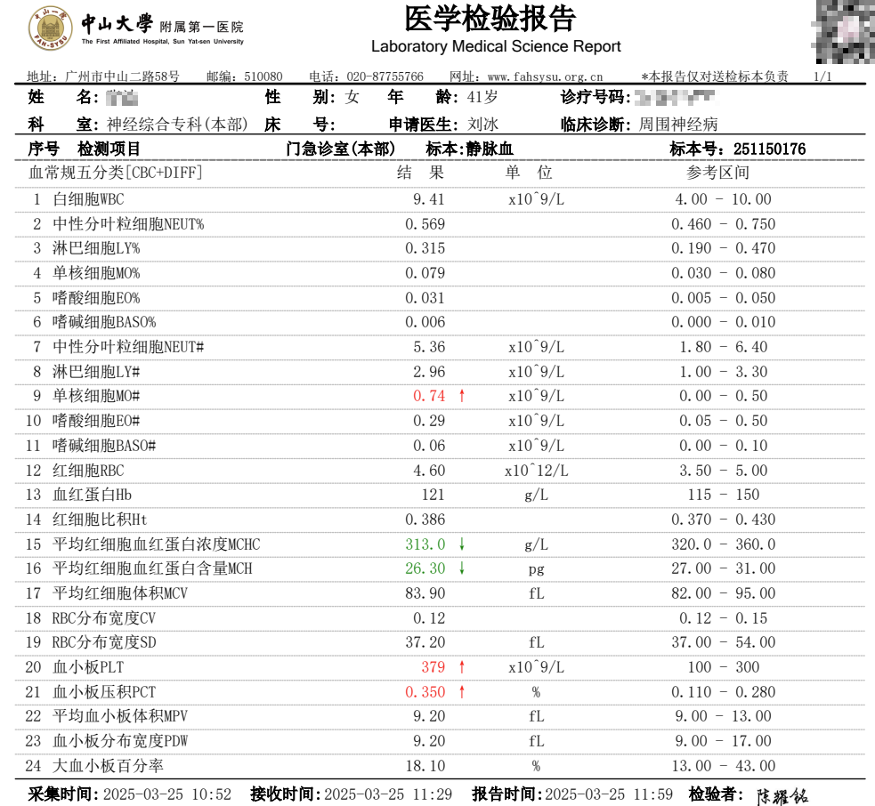
中山大学附属第一医院血常规五分类检验报告专业分析报告
检验基本信息 报告日期：2025-03-25 医疗机构：中山大学附属第一医院 门急诊室（本部） 患者信息：女性，41岁 就诊科室：神经综合专科（本部） 申请医生：刘冰 临床诊断：周围神经病 标本类型：静脉血 标本号：251150176 采集时间：2025-03-25 10:52 接收时间：2025-03-25 11:29 报告时间：2025-03-25 11:59 检验者：陈耀铭
一、检验项目临床意义概述
血常规五分类（CBC+DIFF）是临床最基础的系统性血液筛查手段，通过对白细胞、红细胞、血小板三大系统的定量计数与分类，可全面反映机体的感染、炎症、贫血、凝血及血液系统状态。在周围神经病的病因评估中，其核心价值在于：
- 排除可直接导致周围神经损害的疾病，如巨幼细胞性贫血、白血病神经浸润、严重溶血性贫血等；
- 提示间接病因线索，如慢性炎症、营养缺乏、自身免疫状态异常等；
- 为后续进一步检查提供方向指引。
二、完整检验结果
| 序号 | 检测项目 | 结果 | 单位 | 参考区间 | 结果判定 |
|---|---|---|---|---|---|
| 1 | 白细胞（WBC） | 9.41 | ×10^9/L | 4.00-10.00 | ✅ 正常 |
| 2 | 中性分叶粒细胞百分比（NEUT%） | 0.569 | 0.460-0.750 | ✅ 正常 | |
| 3 | 淋巴细胞百分比（LY%） | 0.315 | 0.190-0.470 | ✅ 正常 | |
| 4 | 单核细胞百分比（MO%） | 0.079 | 0.030-0.080 | ✅ 正常（临界） | |
| 5 | 嗜酸细胞百分比（EO%） | 0.031 | 0.005-0.050 | ✅ 正常 | |
| 6 | 嗜碱细胞百分比（BASO%） | 0.006 | 0.000-0.010 | ✅ 正常 | |
| 7 | 中性分叶粒细胞绝对值（NEUT#） | 5.36 | ×10^9/L | 1.80-6.40 | ✅ 正常 |
| 8 | 淋巴细胞绝对值（LY#） | 2.96 | ×10^9/L | 1.00-3.30 | ✅ 正常 |
| 9 | 单核细胞绝对值（MO#） | 0.74 | ×10^9/L | 0.00-0.50 | ⚠️ 轻度升高 |
| 10 | 嗜酸细胞绝对值（EO#） | 0.29 | ×10^9/L | 0.05-0.50 | ✅ 正常 |
| 11 | 嗜碱细胞绝对值（BASO#） | 0.06 | ×10^9/L | 0.00-0.10 | ✅ 正常 |
| 12 | 红细胞（RBC） | 4.60 | ×10^12/L | 3.50-5.00 | ✅ 正常 |
| 13 | 血红蛋白（Hb） | 121 | g/L | 115-150 | ✅ 正常 |
| 14 | 红细胞比积（Ht） | 0.386 | 0.370-0.430 | ✅ 正常 | |
| 15 | 平均红细胞血红蛋白浓度（MCHC） | 313.0 | g/L | 320.0-360.0 | ❌ 轻度降低 |
| 16 | 平均红细胞血红蛋白含量（MCH） | 26.30 | pg | 27.00-31.00 | ❌ 轻度降低 |
| 17 | 平均红细胞体积（MCV） | 83.90 | fL | 82.00-95.00 | ✅ 正常 |
| 18 | 红细胞分布宽度CV（RDW-CV） | 0.12 | 0.12-0.15 | ✅ 正常 | |
| 19 | 红细胞分布宽度SD（RDW-SD） | 37.20 | fL | 37.00-54.00 | ✅ 正常 |
| 20 | 血小板（PLT） | 379 | ×10^9/L | 100-300 | ⚠️ 轻度升高 |
| 21 | 血小板压积（PCT） | 0.350 | % | 0.110-0.280 | ⚠️ 轻度升高 |
| 22 | 平均血小板体积（MPV） | 9.20 | fL | 9.00-13.00 | ✅ 正常 |
| 23 | 血小板分布宽度（PDW） | 9.20 | fL | 9.00-17.00 | ✅ 正常 |
| 24 | 大血小板百分率 | 18.10 | % | 13.00-43.00 | ✅ 正常 |
三、异常指标汇总与分层评估
| 异常项目 | 结果 | 偏离程度 | 临床风险分级 |
|---|---|---|---|
| 单核细胞绝对值（MO#） | 0.74×10^9/L | 升高48% | 低风险（慢性炎症提示） |
| 平均红细胞血红蛋白含量（MCH） | 26.30pg | 降低2.6% | 极低风险（铁代谢异常提示） |
| 平均红细胞血红蛋白浓度（MCHC） | 313.0g/L | 降低2.2% | 极低风险（铁代谢异常提示） |
| 血小板计数（PLT） | 379×10^9/L | 升高26% | 低风险（反应性升高可能） |
| 血小板压积（PCT） | 0.350% | 升高25% | 低风险（与血小板升高同步） |
四、分系统深度分析（结合周围神经病背景）
1. 白细胞系统：提示慢性低度炎症状态
- 白细胞总数及中性粒细胞、淋巴细胞分类均正常，彻底排除急性细菌感染、病毒感染活动期及血液系统恶性疾病（如白血病、淋巴瘤）导致的周围神经浸润。
- 单核细胞绝对值轻度升高是唯一异常，其临床意义指向：
- 慢性亚临床炎症：是最可能的原因，与长期心理应激、慢性疲劳或隐匿性自身免疫状态相关；
- 病毒感染恢复期：若近期有过无症状病毒感染，可出现单核细胞一过性升高；
- 与周围神经病的关联：慢性低度炎症可通过释放炎症因子损伤周围神经髓鞘，是部分特发性周围神经病的潜在发病机制之一。
2. 红细胞系统：正细胞低色素倾向，提示早期铁代谢异常
- 血红蛋白、红细胞计数、红细胞比积及平均红细胞体积均正常，排除巨幼细胞性贫血（维生素B12/叶酸缺乏）、溶血性贫血、失血性贫血等可直接导致周围神经损害的贫血类型。
- MCH及MCHC轻度降低、MCV正常的"正细胞低色素"模式，提示红细胞内血红蛋白合成轻度不足，最可能的原因：
- 铁储备下降（早期缺铁）：机体铁储备已开始减少，但尚未发展至典型缺铁性贫血（MCV降低、Hb降低）阶段；
- 慢性病性贫血：慢性炎症状态导致铁利用障碍，铁在网状内皮系统沉积，无法有效用于血红蛋白合成；
- 与周围神经病的关联：严重缺铁可影响神经髓鞘合成导致周围神经病变，但本例无贫血，铁代谢异常并非本次周围神经病的主要病因，仅需排查纠正。
3. 血小板系统：反应性轻度升高
- 血小板计数及压积轻度升高，平均血小板体积正常，符合反应性血小板增多的特征，可排除原发性血小板增多症（诊断阈值通常>450×10^9/L，且伴血小板形态异常）。
- 反应性升高的可能原因：与单核细胞升高提示的慢性低度炎症状态直接相关，炎症因子可刺激骨髓巨核细胞增殖，导致血小板生成增加；铁缺乏也可继发性引起血小板升高。
- 临床意义：轻度血小板增多无血栓形成风险，无需特殊处理，原发病因纠正后可自行恢复正常。
五、与周围神经病诊断的关联总结
- 未发现直接致病病因：血常规结果彻底排除了巨幼细胞性贫血、白血病神经浸润、严重感染等可直接导致周围神经病的常见血液系统病因。
- 提供间接病因线索：慢性低度炎症状态及早期铁代谢异常可能是本次周围神经病的辅助发病因素，而非核心病因。
- 进一步检查方向指引：需重点等待肌电图、腰椎MRI结果，并完善代谢及营养相关检查（血糖、糖化血红蛋白、维生素B12、叶酸、甲状腺功能、铁代谢全套），明确周围神经病的核心病因。
六、个体化诊疗建议
- 完善铁代谢相关检查
建议1周内完成以下检查，明确铁代谢异常的原因：
- 血清铁蛋白（SF）：评估机体铁储备状态的金标准；
- 血清铁（SI）、总铁结合力（TIBC）、转铁蛋白饱和度（TSAT）；
- 若铁蛋白降低，提示铁储备不足，需进一步排查慢性失血原因（如月经量过多、消化道隐性出血）。
- 血常规复查计划
1-2个月后复查血常规，观察单核细胞、血小板及红细胞参数的变化。若血小板持续>400×10^9/L，建议血液科门诊咨询。
- 地中海贫血筛查（可选）
患者为广东籍人群，若家族中有贫血病史，可进行血红蛋白电泳及地中海贫血基因检测，排除地中海贫血基因携带（该状态也可表现为MCH/MCHC降低）。地中海贫血携带者无需特殊治疗，也与本次周围神经病无关。
- 饮食与生活方式调整
- 增加富含铁的食物摄入：红肉、动物肝脏、动物血制品、黑木耳、菠菜等；
- 搭配富含维生素C的食物（橙子、猕猴桃、青椒），促进铁吸收；
- 避免浓茶、咖啡与含铁食物同服，以免抑制铁吸收；
- 保持规律作息，避免过度劳累，有助于减轻慢性炎症状态。
- 结合周围神经病的整体诊疗
血常规异常不影响周围神经病的常规诊疗流程，继续按医嘱完成腰椎MRI、肌电图及后续代谢检查，待所有结果回报后，由神经科医生制定综合治疗方案。经验性营养神经治疗（甲钴胺、维生素B1等）可继续进行。
免责声明：本报告仅基于本次检验结果及既往门诊病历信息进行专业分析与解读，不构成最终医学诊断或治疗建议。所有诊疗行为均应在执业医师指导下进行，请严格遵循主诊医师的医嘱。
肌酸激酶
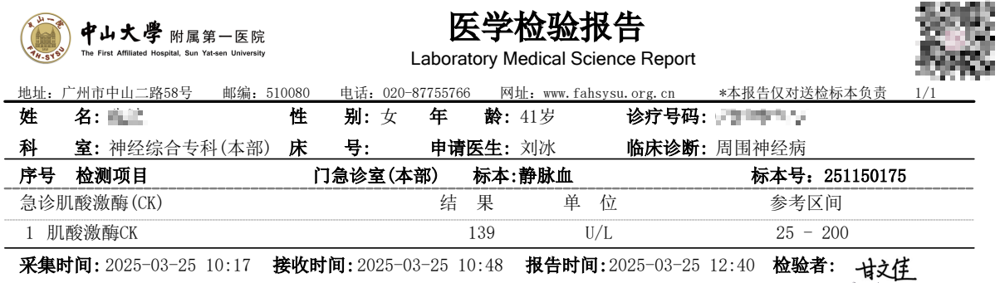
中山大学附属第一医院肌酸激酶检验报告专业分析报告
检验基本信息 报告日期：2025-03-25 医疗机构：中山大学附属第一医院 门急诊室（本部） 患者信息：女性，41岁 就诊科室：神经综合专科（本部） 申请医生：刘冰 临床诊断：周围神经病 标本类型：静脉血 标本号：251150175 采集时间：2025-03-25 10:17 接收时间：2025-03-25 10:48 报告时间：2025-03-25 12:40 检验者：甘文佳
一、检验项目临床意义概述
肌酸激酶（CK）是一种主要存在于骨骼肌细胞胞质和线粒体中的能量代谢酶，少量分布于心肌和脑组织。当肌细胞膜完整性受损或通透性增加时，细胞内的CK会大量释放入血，导致血清总CK水平升高。
该指标是鉴别神经源性损害与肌源性损害的核心血清学标志物：
- 肌源性损害（如多发性肌炎、横纹肌溶解、肌营养不良）：通常表现为CK显著升高（常超过正常上限3倍，甚至数十至数百倍）
- 神经源性损害（如周围神经病、脊髓病变）：CK多为正常或仅轻度升高（<正常上限2倍）
- 功能性/躯体化症状：CK完全正常
二、检验结果
| 检测项目 | 结果 | 单位 | 参考区间 | 结果判定 |
|---|---|---|---|---|
| 急诊肌酸激酶（CK） | 139 | U/L | 25-200 | ✅ 正常 |
三、结果综合评估
| 评估维度 | 结论 | 依据 |
|---|---|---|
| 血清CK水平 | 完全正常，位于参考区间中段 | 结果139U/L，处于25-200U/L参考范围的中间位置 |
| 肌源性损害 | 彻底排除 | 无CK升高，不符合任何肌病的血清学特征 |
| 横纹肌溶解症 | 彻底排除 | 横纹肌溶解时CK通常>1000U/L，严重者可达数万U/L |
| 肌肉炎症性疾病 | 不支持 | 多发性肌炎、皮肌炎等均会出现CK显著升高 |
| 药物性肌肉损伤 | 不支持 | 他汀类、贝特类等药物所致肌肉损伤会伴随CK升高 |
四、临床深度分析（结合既往病史）
- 肌病病因的彻底排除
本次CK结果完全正常，结合患者既往多次神经系统体格检查均提示双下肢肌力5级、无肌肉萎缩、无肌束震颤的体征，可100%排除所有原发性和继发性肌病，包括多发性肌炎、代谢性肌病、进行性肌营养不良、药物性肌病等。患者主诉的“乏力”并非真正的肌肉器质性病变所致。
- 进一步指向功能性躯体化症状或纯感觉性周围神经病
- 结合患者2024年2月足部麻木就诊时的查体结果：足部感觉、肌力及步态完全正常，腰椎MRI排除神经根受压，本次CK正常进一步排除肌肉病变，使得焦虑抑郁相关的功能性神经症状（躯体化障碍） 的可能性显著升高。
- 若后续肌电图检查证实存在周围神经损害，也仅可能为极轻度的纯感觉性周围神经病，未累及运动纤维（运动纤维受累时可出现CK轻度升高及肌力下降）。
- 排除隐匿性肌肉损伤
CK结果位于正常区间中段，说明不存在任何隐匿性、亚临床性的肌肉损伤，也排除了近期剧烈运动、肌肉拉伤等生理性因素导致的CK假性升高。
五、个体化诊疗建议
- 等待肌电图检查结果
肌电图（EMG）+神经传导速度（NCV）是目前明确是否存在周围神经损害的唯一关键检查。
- 若肌电图结果正常：可确诊为功能性躯体化症状，无需继续进行神经科器质性检查，优先转诊至临床心理科进行规范干预。
- 若肌电图结果异常：根据异常类型进一步排查周围神经病的病因（如代谢性、营养性、免疫性等）。
- 无需进行肌病相关检查
鉴于CK结果完全正常，无需进一步完善肌肉活检、肌炎抗体谱、肌酶谱（CK-MB、LDH等）等肌病相关检查，避免不必要的医疗资源浪费和心理负担。
- 症状观察与记录
继续观察下肢麻木、乏力症状的变化，详细记录发作时间、诱发因素、缓解方式及伴随症状，为后续诊疗提供客观依据。
- 生活方式建议
- 无需限制日常活动，可正常进行中等强度运动（如快走、游泳、瑜伽），避免剧烈无氧运动（如大重量负重训练、冲刺跑）即可。
- 保持规律作息，避免熬夜和过度劳累，坚持情绪调节训练，缓解焦虑状态。
- 随访计划
若肌电图结果正常，可每3-6个月随访一次，观察症状变化；若肌电图异常，遵医嘱定期复查并进行针对性治疗。
六、急诊预警指征
若出现以下任何情况，请立即前往医院急诊科就诊：
- 突发双侧下肢肌力明显下降，无法站立行走
- 出现肌肉明显疼痛、肿胀，伴茶色尿（横纹肌溶解征象）
- 同时出现胸闷、胸痛、呼吸困难、心悸等症状
- 麻木症状迅速进展至躯干、上肢，伴大小便功能障碍
免责声明：本报告仅基于本次检验结果及既往门诊病历信息进行专业分析与解读，不构成最终医学诊断或治疗建议。所有诊疗行为均应在执业医师指导下进行，请严格遵循主诊医师的医嘱。
神经门诊
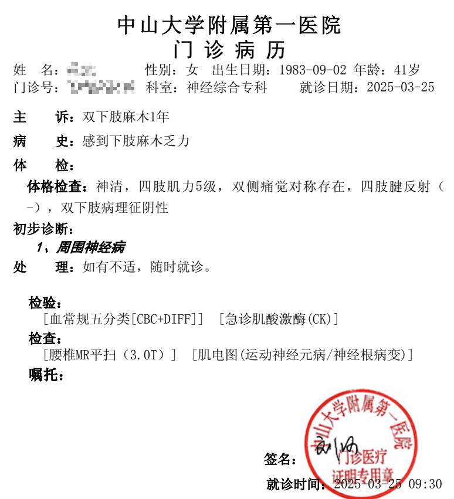
中山大学附属第一医院神经综合专科门诊病历专业分析报告
就诊基本信息 就诊日期：2025-03-25 09:30 医疗机构：中山大学附属第一医院 神经综合专科 患者信息：女性，41岁（出生日期：1983-09-02） 就诊类型：神经专科首次就诊（距2024-02-22外科复诊约13个月） 接诊医师：刘冰 教授
一、就诊核心主诉
双下肢对称性麻木1年，伴主观乏力感。
二、完整病史采集
现病史
患者近1年无明确诱因出现双下肢麻木，呈对称性分布，症状从足部逐渐向上发展，伴主观下肢乏力感，但日常行走、上下楼梯等活动未受明显限制。病程中症状持续存在，无明显缓解或加重，无肢体疼痛、肌肉萎缩、肌束震颤，无大小便功能障碍。既往于2024-02-07因足部麻木就诊外科，腰椎MRI提示腰椎轻度骨质增生、腰3/4前上角椎角炎，无椎间盘突出及神经根受压；2024-02-22外科复诊查体示足部感觉、肌力及步态完全正常，考虑功能性症状可能。
既往史与系统回顾
患者有明确的慢性紧张性头痛合并轻度焦虑抑郁病史（2023-04-18确诊），曾先后出现头痛、头麻、面部麻木、间歇性手足麻木等多种躯体化症状，经心理评估及对症处理后部分缓解。无糖尿病、高血压、甲状腺疾病病史，无长期饮酒史、毒物接触史、特殊药物服用史及周围神经病变家族遗传病史。
三、体格检查结果
神经系统专科体格检查：神志清楚，言语流利，高级皮层功能正常；颅神经检查未见异常；四肢肌力5级（正常），肌张力对称正常；双侧痛觉对称存在，无客观感觉减退或缺失；四肢腱反射消失；双下肢病理征阴性；共济运动协调，步态平稳。
四、初步诊断
- 周围神经病（对称性感觉性周围神经病可能性大）
五、诊疗安排与医嘱
实验室检验
- 血常规五分类（CBC+DIFF）
- 检查目的：排除贫血、感染、血液系统疾病及营养缺乏相关的全身性病因。
- 急诊肌酸激酶（CK）
- 检查目的：鉴别肌源性损害与神经源性损害，排除多发性肌炎、横纹肌溶解等肌肉疾病。
影像学检查
- 腰椎磁共振平扫（3.0T）
- 检查目的：复查腰椎结构，排除新发的椎间盘突出、椎管狭窄、神经根受压等腰椎病变，明确是否存在腰骶神经根病。
电生理检查
- 肌电图+神经传导速度检查（EMG+NCV）
- 检查目的：周围神经病诊断的"金标准"，可明确病变的类型（轴索性/脱髓鞘性）、部位（神经根/神经丛/周围神经）、范围及严重程度，指导后续病因诊断及治疗。
一般医嘱
如有不适，随时就诊。
六、临床专业分析与解读
- 周围神经病诊断的核心依据
本次诊断"周围神经病"的关键阳性体征为四肢腱反射消失。腱反射的反射弧由感觉神经传入、脊髓中间神经元、运动神经传出组成，任何环节受损均可导致腱反射减弱或消失。四肢对称性腱反射消失是多发性周围神经病的典型体征，提示周围神经广泛受累。
同时，患者表现为双下肢对称性、长度依赖性麻木（从足部向上发展），符合最常见的远端对称性多发性周围神经病的临床模式。
- 肌力正常的临床意义
四肢肌力完全正常（5级），提示病变主要累及感觉神经纤维，运动神经纤维未受累或仅极轻度受累。这是相对良性的病程信号，大多数进展性周围神经病（如慢性炎症性脱髓鞘性多发性神经病、糖尿病周围神经病）在1年病程中通常会出现不同程度的远端肌力下降。
- 与功能性躯体化症状的鉴别
患者既往有明确的焦虑抑郁病史及多种躯体化症状表现，本次症状需重点鉴别"器质性周围神经病"与"功能性神经症状"：
- 支持器质性病变的依据：存在明确的阳性体征（四肢腱反射消失），这是功能性症状不会出现的客观异常。
- 需考虑功能性叠加的可能：患者主观乏力感与客观肌力正常不匹配，且既往有躯体化病史，不排除在轻度器质性周围神经病基础上合并心理因素导致的症状放大。
- 检查策略的合理性分析
本次开具的检查组合全面覆盖了周围神经病的常见病因及鉴别诊断：
- 血常规+CK：快速排除贫血、感染、肌病等基础疾病。
- 腰椎MRI：尽管2024年检查正常，但症状持续1年，需排除新发腰椎病变导致的神经根损害。
- 肌电图：最终明确是否存在周围神经器质性损害，是鉴别器质性与功能性病变的决定性检查。
- 可能的病因方向
结合患者年龄、性别及临床表现，最可能的病因包括：
- 营养缺乏性：维生素B12、叶酸或维生素B1缺乏。
- 代谢性：糖尿病前期或隐匿性糖尿病、甲状腺功能减退。
- 特发性：约30%的远端对称性周围神经病经全面检查后仍无法明确病因，称为特发性周围神经病。
- 免疫性：干燥综合征、系统性红斑狼疮等自身免疫性疾病（相对少见）。
七、个体化诊疗建议
- 优先完成全套检查
1周内完成所有开具的检查项目，获取全部结果后3日内返回神经科复诊，明确最终诊断及病因。
- 经验性营养神经治疗
在检查结果出来前，可开始经验性营养神经治疗，安全性高且有助于改善症状：
- 甲钴胺片 0.5mg，每日3次口服
- 维生素B1片 10mg，每日3次口服
- 维生素B6片 10mg，每日3次口服
- α-硫辛酸胶囊 0.6g，每日1次口服
- 等待肌电图结果的临床决策
- 若肌电图提示周围神经损害：根据异常类型进一步完善病因检查，包括空腹血糖、糖化血红蛋白、甲状腺功能、维生素B12、叶酸、自身抗体谱等。
- 若肌电图完全正常：则可排除器质性周围神经病，确诊为焦虑抑郁相关的功能性躯体化症状，需立即转诊至临床心理科，调整抗焦虑抑郁治疗方案。
- 生活方式调整
- 足部护理：每日用温水泡脚15分钟，避免足部外伤及感染；选择宽松舒适的鞋袜，减少足部压迫。
- 运动干预：每周进行3-4次中等强度有氧运动（快走、游泳、骑自行车），每次30分钟以上，促进神经微循环，改善麻木症状。
- 情绪管理：继续坚持正念冥想、深呼吸训练，避免过度关注身体症状，减轻焦虑情绪。
- 随访计划
明确诊断后，根据病因制定个体化随访计划。若为特发性或营养缺乏性周围神经病，初始每月复诊1次，症状稳定后可延长至每3个月复诊1次。
八、急诊预警指征
若出现以下任何情况，请立即前往医院急诊科就诊：
- 双下肢麻木范围迅速扩大至躯干或上肢
- 出现明显的肢体肌力下降、行走困难或步态不稳
- 出现大小便失禁或排尿、排便困难
- 同时出现发热、皮疹、关节肿痛、体重明显下降等全身症状
免责声明：本报告仅基于本次门诊病历信息及既往检查结果进行专业分析与解读，不构成最终医学诊断或治疗建议。所有诊疗行为均应在执业医师指导下进行，请严格遵循主诊医师的医嘱。
乳腺超声
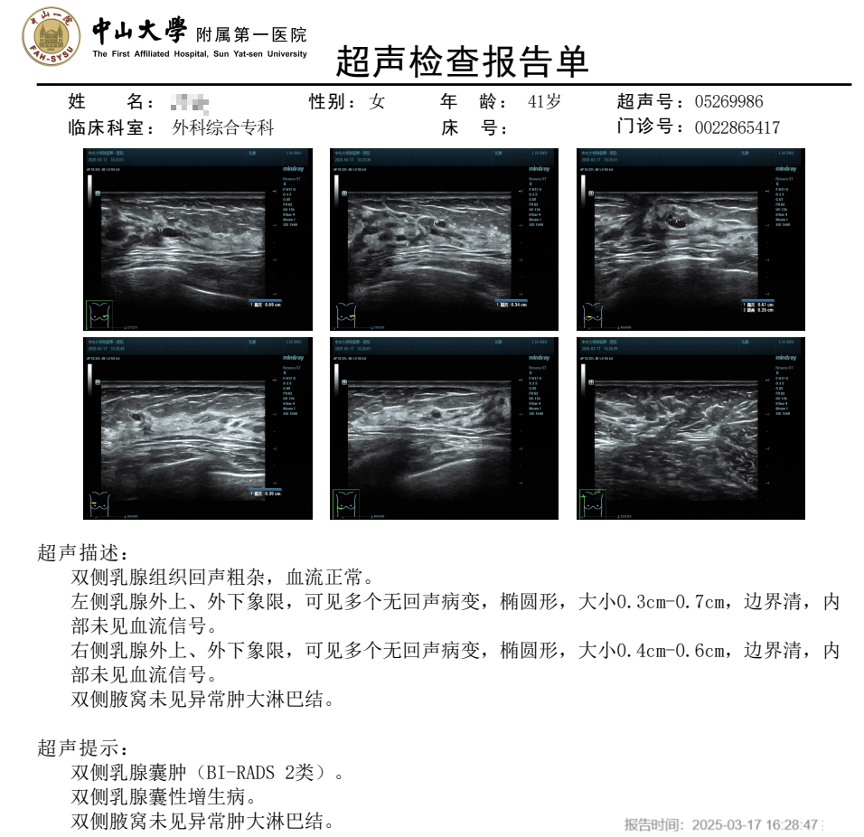
中山大学附属第一医院乳腺超声检查报告专业分析报告
检查基本信息 检查日期：2025-03-17 16:28:47 医疗机构：中山大学附属第一医院 超声科 患者信息：女性，41岁 就诊科室：外科综合专科 超声号：05269986 门诊号：0022865417 检查方法：双侧乳腺及腋窝彩色多普勒超声检查
一、检查技术与方法说明
乳腺彩色多普勒超声是乳腺疾病筛查与诊断的首选影像学手段，无电离辐射、无创且可重复检查，尤其适合致密型乳腺及育龄期女性。该检查可清晰显示乳腺腺体结构、病灶形态、边界、内部回声及血流分布，结合彩色多普勒血流成像（CDFI）可辅助鉴别病灶良恶性。
本次检查采用国际通用的乳腺影像报告和数据系统（BI-RADS） 进行分级评估，该系统通过标准化术语描述乳腺病变，明确恶性风险并指导临床管理。
二、超声所见
1. 乳腺整体结构
双侧乳腺组织回声粗杂，提示乳腺纤维腺体组织增生伴囊性改变；双侧乳腺血流信号分布正常，未见异常增多血流。
2. 双侧乳腺病灶
| 部位 | 病灶分布 | 病灶性质 | 形态 | 大小范围 | 边界 | 内部血流 |
|---|---|---|---|---|---|---|
| 左侧乳腺 | 外上象限、外下象限 | 多个无回声病变 | 椭圆形 | 0.3cm-0.7cm | 清晰 | 未见血流信号 |
| 右侧乳腺 | 外上象限、外下象限 | 多个无回声病变 | 椭圆形 | 0.4cm-0.6cm | 清晰 | 未见血流信号 |
3. 双侧腋窝
双侧腋窝未见异常肿大淋巴结，淋巴结形态、结构正常，皮髓质分界清晰。
三、超声诊断结论
| 序号 | 诊断结果 | 病变性质 | 临床风险分级 |
|---|---|---|---|
| 1 | 双侧乳腺囊肿（BI-RADS 2类） | 明确良性病变 | 无恶性风险 |
| 2 | 双侧乳腺囊性增生病 | 良性增生性改变 | 极低风险 |
| 3 | 双侧腋窝未见异常肿大淋巴结 | 正常生理表现 | 无转移风险 |
四、BI-RADS 分级专项解读
本次检查将双侧乳腺病变评定为BI-RADS 2类，其定义为：明确的良性影像学发现，恶性概率为0%。
- 符合BI-RADS 2类的典型表现包括：单纯性囊肿、乳腺内正常淋巴结、稳定的术后改变、钙化的纤维腺瘤等。
- 临床管理原则：无需穿刺活检、无需手术治疗、无需特殊药物干预，仅需常规年度影像学随访即可。
五、临床意义深度分析
- 单纯性乳腺囊肿的良性本质确认
超声显示所有病灶均为典型的无回声、椭圆形、边界清晰、内部无血流信号，完全符合单纯性乳腺囊肿的影像学特征。囊肿内部为清亮液体，并非实性肿瘤，无恶变潜能。
本次检出的囊肿直径均小于1cm，属于微小囊肿，绝大多数无临床症状，不会引起乳房疼痛、乳头溢液等不适，也无需穿刺抽液或手术切除。
- 乳腺囊性增生病的临床解读
乳腺囊性增生病是育龄期及围绝经期女性最常见的乳腺良性病变，患病率高达50%-70%，其发生与体内雌激素、孕激素水平波动密切相关。
典型表现为月经前乳房胀痛、触痛，月经后症状缓解，乳腺可触及弥漫性结节感。该病并非癌前病变，不会增加乳腺癌的发病风险，仅需定期随访观察。
- 腋窝淋巴结正常的排除意义
双侧腋窝未见异常肿大淋巴结，排除了乳腺恶性病变区域转移的可能，进一步支持良性病变的诊断。
- 不同医院分级差异的说明
若既往外院检查曾提示BI-RADS 3级（可能良性，恶性概率<2%），本次中山一院复查降级为BI-RADS 2级，说明病灶稳定且符合典型良性特征，不同医院、不同医师对BI-RADS分级的细微判断差异属于正常现象。临床通常结合多次检查结果综合评估，以最高分级作为短期随访依据，但本次明确的2级结果已充分证实病变的良性性质。
六、个体化诊疗建议
- 无需特殊治疗
本次检查确诊的双侧乳腺囊肿及囊性增生病均为良性病变，无需服用任何药物，也无需进行穿刺、手术等有创操作。避免盲目使用中药、保健品或理疗等非循证医学手段干预。
- 规范化随访方案
- 基础随访：每年进行1次双侧乳腺及腋窝超声检查。
- 联合筛查：鉴于患者年龄41岁，属于乳腺癌筛查重点人群，建议每1-2年增加1次乳腺X线（钼靶）检查，形成超声+钼靶联合筛查模式，提高早期乳腺癌检出率。
- 异常随访：若出现囊肿短期内迅速增大（直径>1cm）、乳房红肿热痛、乳头溢液或可触及明确实性肿块，需及时就诊。
- 生活方式调整
- 饮食调整：减少咖啡因（咖啡、浓茶、巧克力）、高糖及高脂食物摄入，部分研究表明咖啡因可能加重乳腺增生相关的乳房胀痛症状。
- 体重管理：保持健康体重，避免肥胖，肥胖可导致体内雌激素水平升高，加重乳腺增生。
- 日常护理：穿戴合身、透气的棉质内衣，避免过紧内衣压迫乳房；避免长期熬夜、过度劳累，保持情绪稳定。
- 乳房自检：每月月经结束后7-10天进行一次乳房自检，观察乳房外形、皮肤及乳头变化，触摸有无异常肿块。
- 既往结果整合建议
建议将本次中山一院的检查结果与既往所有乳腺检查报告（包括外院检查）一并带给主诊医生，由医生结合病史、体格检查及多次影像学结果，制定最适合的个体化随访计划。
七、急诊预警指征
若出现以下任何情况，请立即前往医院乳腺外科就诊：
- 乳房皮肤出现橘皮样改变、酒窝征，或乳头内陷、溢液（尤其是血性溢液）
- 可触及质地坚硬、边界不清、活动度差的乳房肿块
- 乳房突发红肿热痛，伴发热、寒战等感染征象
- 腋窝出现无痛性、进行性肿大的淋巴结
免责声明：本报告仅基于本次超声检查结果进行专业分析与解读，不构成最终医学诊断或治疗建议。所有诊疗行为均应在执业医师指导下进行，请严格遵循主诊医师的医嘱。
HPV检测

人乳头瘤病毒（HPV）核酸分型检测报告专业解读
原始报告日期：2025-02-22 09:01:05 采样时间：2025-02-20 09:28:33 医疗机构：广东省妇幼保健院（医学遗传中心） 检测方法：PCR+膜杂交法 患者信息：女，41岁 送检科室：妇科门诊（越秀院区） 开单医生：蔡仁燕 标本类型：宫颈分泌物 标本状态：合格 临床诊断：[西]阴道脱垂；[西]尿频
一、检查技术说明
本次采用聚合酶链反应（PCR）扩增联合膜杂交法进行HPV核酸分型检测，可特异性检测宫颈分泌物中HPV病毒的DNA，一次性覆盖临床常见的14种高危型、5种低危型及2种其他型HPV基因型。该方法灵敏度高、特异性强，是宫颈癌筛查及HPV感染状态追踪评估的核心手段。
补充说明：本检测为病毒核酸检测，仅反映当前宫颈部位的活动性HPV感染状态，不能提示既往感染或抗体水平。
二、检测结果
本次检测未检测到任何覆盖型别的HPV病毒核酸，所有检测型别均为阴性。
| 病毒分型 | 检测覆盖型别 | 结果 |
|---|---|---|
| 高危型（14种） | 16, 18, 31, 33, 35, 39, 45, 51, 52, 56, 58, 59, 66, 68 | 全部阴性 |
| 低危型（5种） | 6, 11, 42, 43, 44 | 全部阴性 |
| 其他型（2种） | 53, 81(CP8304) | 全部阴性 |
三、结果评估
| 评估维度 | 结论 |
|---|---|
| 高危型HPV感染 | 阴性 |
| 低危型HPV感染 | 阴性 |
| 宫颈癌相关风险 | 当前极低 |
| 生殖器疣相关风险 | 当前极低 |
检测局限性说明：本结果仅适用于本次送检样本，不能完全排除病毒载量低于检测下限的隐匿感染、极罕见未覆盖型别的感染，或既往感染已清除的情况。
四、综合分析
- 无活动性HPV感染：本次检测覆盖了全球95%以上与宫颈癌及生殖器疣相关的HPV基因型，全部阴性提示当前宫颈部位无明确的HPV感染。
- 宫颈癌风险极低：HPV 16和18型是导致宫颈癌的最主要型别，占所有宫颈癌病例的70%以上。本次高危型全部阴性，结合患者年龄，未来3-5年内发生宫颈癌的风险极低。
- 无生殖器疣感染证据：低危型HPV 6、11型是生殖器尖锐湿疣的主要致病原，阴性提示目前无相关感染。
- 筛查意义：41岁女性处于宫颈癌筛查的重点年龄段，定期HPV联合TCT筛查是预防宫颈癌的最有效手段。
五、个体化医学建议
- 完善宫颈癌联合筛查
- 建议尽快补做宫颈液基细胞学检查（TCT），全面评估宫颈细胞形态学状态。
- 若TCT结果正常，按照国内外宫颈癌筛查指南，下一次HPV+TCT联合筛查可间隔3年进行。
- 若TCT结果异常，需遵医嘱进一步行阴道镜检查及宫颈活检。
- HPV疫苗接种评估
- 即使当前HPV阴性，仍建议接种HPV疫苗以预防未来可能的感染。41岁女性可选择接种二价、四价或九价HPV疫苗（国内九价疫苗已扩龄至9-45岁）。
- 疫苗不能治疗已有的HPV感染，但可有效预防疫苗覆盖型别的新发感染，降低后续患病风险。
- 日常防护与健康管理
- 保持健康的性生活方式，使用安全套可有效降低HPV及其他性传播疾病的感染风险。
- 戒烟，吸烟会显著增加HPV持续感染及宫颈癌发生的风险。
- 均衡饮食、规律作息、适度运动，增强机体免疫力，有助于清除可能的潜在感染。
- 原发病管理
- 阴道脱垂与HPV感染无直接关联，但脱垂导致的宫颈暴露增加、局部分泌物增多可能升高其他病原体感染风险。建议妇科定期评估脱垂程度，根据情况选择盆底康复治疗或手术矫治。
免责声明：本报告仅为原始检验数据的专业解读与临床参考，不构成最终医学诊断及治疗方案。所有诊疗决策必须在执业医师面对面评估后制定，请勿自行根据本报告进行治疗或用药。
阴道微生态

阴道微生态综合评价报告专业解读
原始报告日期：2025-02-20 10:36:41 采样时间：2025-02-20 医疗机构：广东省妇幼保健院（越秀院区） 患者信息：女，41岁 送检科室：妇科门诊（越秀） 送检医生：蔡仁燕 检验项目：阴道微生态综合评价 标本类型：阴道分泌物 临床诊断：[西]阴道脱垂；[西]尿频 标本状态：合格
一、检查技术说明
本次采用阴道微生态综合评价系统，通过湿片显微镜检查、革兰染色形态学分析、Nugent评分、AV评分及化学酶谱检测，全面评估阴道菌群的种类、密度、多样性、优势菌占比，以及阴道局部免疫和生化功能状态，是诊断阴道炎症及微生态失衡的金标准。本检查在阴道未经用药及冲洗的情况下完成，结果准确可靠。
二、检验结果
（一）形态学评价
| 项目 | 结果 | 参考范围 | 评估 |
|---|---|---|---|
| 清洁度 | II度 | I~II度 | ✅ 正常 |
| 白细胞 | + | - | 极少量 |
| 上皮细胞 | ++ | ++~++++ | ✅ 正常 |
| 菌群密集度 | ++ | ++~++++ | ✅ 正常 |
| 菌群多样性 | ++ | ++~++++ | ✅ 正常 |
| 革兰阳性大杆菌比例 | 95% | 70%-95% | ✅ 正常 |
| 其他细菌比例 | 5% | 5%-30% | ✅ 正常 |
| 线索细胞 | - | - | ✅ 阴性 |
| 形似加德纳菌/拟杆菌 | - | - | ✅ 阴性 |
| 形似动弯杆菌 | - | - | ✅ 阴性 |
| 革兰阳性球菌 | - | - | ✅ 阴性 |
| 革兰阴性杆菌 | - | - | ✅ 阴性 |
| 真菌孢子 | - | - | ✅ 阴性 |
| 芽生孢子 | - | - | ✅ 阴性 |
| 假菌丝 | - | - | ✅ 阴性 |
| 滴虫 | - | - | ✅ 阴性 |
| 细胞内G⁻双球菌 | - | - | ✅ 阴性 |
（二）评分系统
| 项目 | 结果 | 参考范围 | 评估 |
|---|---|---|---|
| Nugent评分 | 0分 | 0~3分 | ✅ 正常（无细菌性阴道病） |
| AV评分 | 0分 | 0~2分 | ✅ 正常（无需氧菌性阴道炎） |
（三）化学分析
| 项目 | 结果 | 参考范围 | 评估 |
|---|---|---|---|
| pH值 | 3.8-4.5 | 3.8-4.5 | ✅ 正常 |
| 过氧化氢 | + | - | ⚠️ 阳性 |
| 白细胞酯酶 | - | - | ✅ 阴性 |
| 唾液酸苷酶 | - | - | ✅ 阴性 |
| 凝固酶 | - | - | ✅ 阴性 |
| β-葡萄糖醛酸酶 | - | - | ✅ 阴性 |
三、异常指标提示与解读
| 异常项目 | 结果 | 临床意义 |
|---|---|---|
| 过氧化氢 | 阳性 | 提示阴道内产过氧化氢的优势乳杆菌数量减少或功能下降，阴道局部生物防御能力轻度降低 |
| 白细胞 | + | 阴道内存在极少量白细胞，为生理性或轻度局部刺激反应，未达到炎症诊断标准 |
四、综合分析
核心评价结论
阴道微生态平衡
详细解读
- 无明确阴道感染性疾病：Nugent评分0分、AV评分0分，完全排除细菌性阴道病、需氧菌性阴道炎；未检出真菌、滴虫及细胞内革兰阴性双球菌，排除外阴阴道假丝酵母菌病、滴虫性阴道炎及淋球菌感染。
- 菌群结构基本正常：革兰阳性大杆菌（乳杆菌）占比95%，处于正常高值，仍是阴道绝对优势菌群；菌群密集度、多样性正常，其他杂菌比例仅5%，阴道酸性环境（pH 3.8-4.5）维持良好。
- 局部防御功能轻度下降：过氧化氢阳性提示乳杆菌产过氧化氢的功能有所减弱，但尚未引起菌群失调及继发感染，属于微生态失衡的早期预警信号。
- 无急性阴道炎症：白细胞酯酶阴性，仅见极少量白细胞，无阴道黏膜充血、水肿等急性炎症表现，白细胞升高考虑与阴道脱垂导致的阴道黏膜长期暴露、轻度摩擦刺激有关。
五、个体化医学建议
- 无需抗感染药物治疗：本次检查未发现任何致病菌感染，禁止自行使用抗生素、抗真菌药物或阴道冲洗剂，以免进一步破坏阴道微生态。
- 阴道微生态维护
- 日常用温水清洁外阴即可，避免阴道内冲洗及使用碱性洗液；
- 穿纯棉透气内裤，每日更换，避免久坐，保持外阴干燥；
- 可酌情使用阴道用乳杆菌活菌制剂，连续使用7-10天，帮助恢复产过氧化氢乳杆菌的功能。
- 原发病针对性处理：阴道脱垂是导致本次阴道局部微生态轻度异常及尿频症状的根本原因，建议妇科完善盆底功能评估，根据脱垂程度选择盆底肌康复训练（凯格尔运动、生物反馈治疗）、子宫托或手术矫治。
- 定期复查：建议3-6个月后复查阴道微生态，评估过氧化氢是否转阴及乳杆菌功能是否恢复；若出现阴道分泌物增多、异味、瘙痒等症状，及时就诊。
- 生活方式调整：避免长期便秘、慢性咳嗽及重体力劳动，减少腹压增加对盆底组织的损伤；均衡饮食，增强机体免疫力。
免责声明：本报告仅为原始检验数据的专业解读与临床参考，不构成最终医学诊断及治疗方案。所有诊疗决策必须在执业医师面对面评估后制定，请勿自行根据本报告进行治疗或用药。
尿常规2

尿常规检验报告专业解读（第2页）
原始报告日期：2025-02-20 10:21:51 采样时间：2025-02-20 09:14:53 医疗机构：广东省妇幼保健院（越秀院区）临床检验中心 检验仪器：迈瑞EU8600(越秀) 患者信息：女，41岁 送检科室：妇科门诊（越秀） 开单医生：蔡仁燕 检验项目：尿干化学11项+尿沉渣定量 临床诊断：[西]阴道脱垂；[西]尿频 样本状态：合格 页码：第2页 / 共2页
一、检验概述
本页为尿沉渣定量分析部分，通过全自动尿沉渣分析仪对尿液中有形成分进行精准计数，是评估泌尿系统炎症、感染、肾脏实质损伤及结晶尿的核心依据。本页结果需与第1页尿干化学结果结合，进行完整的尿常规解读。
备注：本报告结果已实现广东省内互认（粤HR），仅适用于本次送检样本。
二、检验结果
| 序号 | 项目 | 结果 | 提示 | 单位 | 参考区间 |
|---|---|---|---|---|---|
| 16 | 尿白细胞计数(WBC) | 1.5 | - | 个/uL | 0-16 |
| 17 | 尿白细胞计数(HPF) | 0.90 | - | 个/HPF | 0-10 |
| 18 | 透明管型(HYA) | 0.0 | - | 个/uL | 0-1 |
| 19 | 病理管型(PAT) | 0 | - | 个/uL | 0-0.5 |
| 20 | 酵母样真菌(YEA) | 0.0 | - | 个/uL | 0-1 |
| 21 | 细菌(BACT) | 48.8 | - | 个/uL | 0-488 |
| 22 | 尿粘液丝(MUC) | 0.5 | - | 个/uL | 0-137 |
| 23 | 非鳞状上皮细胞(NEC) | 1.5 | - | 个/uL | 0-3 |
| 24 | 鳞状上皮(SQEP) | 39.9 | ↑ | 个/uL | 0-24 |
| 25 | 草酸钙结晶 | 0.0 | - | 个/μL | 0-14 |
| 26 | 尿酸结晶 | 0.0 | - | 个/μL | 0-14 |
| 27 | 磷酸铵镁结晶 | 0.0 | - | 个/uL | 0-14 |
三、异常指标提示与解读
| 异常项目 | 结果 | 参考区间 | 临床意义 |
|---|---|---|---|
| 鳞状上皮细胞(SQEP) | 39.9个/uL | 0-24个/uL | 轻度升高，高度提示尿液标本被阴道/外阴来源的鳞状上皮细胞污染 |
四、综合分析
- 泌尿系统感染完全排除：尿白细胞计数、白细胞酯酶（第1页）均在正常范围，细菌计数48.8个/uL远低于参考上限，无尿频、尿急、尿痛等感染症状，可明确排除细菌性尿路感染。
- 肾脏实质功能正常：尿蛋白、红细胞、透明管型及病理管型均为阴性，无肾小球肾炎、肾小管损伤等肾脏实质性病变证据。
- 无结石及真菌感染征象：各类结晶、酵母样真菌计数均为0，排除结晶尿、尿路结石前期及真菌性尿路感染。
- 标本污染明确：鳞状上皮细胞升高与第1页尿液透明度微浑相互印证，结合患者阴道脱垂的临床诊断，尿道口与阴道口解剖位置改变，排尿时极易混入阴道分泌物及脱落上皮细胞，导致标本轻度污染。本次污染未影响核心指标的判读。
五、两页报告综合评估
| 评估维度 | 结论 |
|---|---|
| 细菌性尿路感染 | 不支持 |
| 肾脏实质性疾病 | 不支持 |
| 糖尿病及代谢异常 | 不支持 |
| 肝胆系统异常 | 不支持 |
| 尿路结石风险 | 低 |
| 标本质量 | 轻度污染（不影响核心结论） |
六、个体化医学建议
- 无需常规复查尿常规：本次核心指标均正常，标本轻度污染不影响诊断，无需因鳞状上皮升高单独复查。若后续出现尿痛、尿急、尿液浑浊等症状，再按规范留取中段尿复查。
- 规范标本留取方法：如需复查尿常规，先清洁外阴，排尿初期弃去前10-20ml尿液，留取中间段尿液送检，可显著降低标本污染率。
- 尿频症状针对性处理：尿频与泌尿系统感染无关，明确为阴道脱垂导致的膀胱解剖位置异常、膀胱容量减少及膀胱过度活动所致。建议妇科完善盆底功能评估及POP-Q分期，根据脱垂程度选择盆底肌康复训练、子宫托或手术矫治。
- 日常护理建议：每日饮水量保持1500-2000ml，避免憋尿；坚持盆底肌收缩训练（凯格尔运动），每日3组，每组10-15次，每次收缩保持5-10秒；避免长期便秘、慢性咳嗽及重体力劳动，减少腹压增加对盆底的损伤。
免责声明：本报告仅为原始检验数据的专业解读与临床参考，不构成最终医学诊断及治疗方案。所有诊疗决策必须在执业医师面对面评估后制定，请勿自行根据本报告进行治疗或用药。
尿常规1

尿常规检验报告专业解读（第1页）
原始报告日期：2025-02-20 10:21:51 采样时间：2025-02-20 09:14:53 医疗机构：广东省妇幼保健院（越秀院区）临床检验中心 检验仪器：迈瑞EU8600(越秀) 患者信息：女，41岁 送检科室：妇科门诊（越秀） 开单医生：蔡仁燕 检验项目：尿干化学11项+尿沉渣定量 临床诊断：[西]阴道脱垂；[西]尿频 样本状态：合格 页码：第1页 / 共2页
一、检验概述
尿常规是泌尿系统及全身代谢性疾病的基础筛查项目，分为尿干化学分析和尿沉渣定量两部分。尿干化学11项可快速检测尿液理化性质及蛋白质、糖、潜血等核心成分；尿沉渣定量对尿液中细胞、管型、结晶等有形成分进行精准计数。本页为尿干化学11项及尿沉渣红细胞计数结果，尿白细胞、上皮细胞、管型等完整沉渣数据见第2页。
二、检验结果
| 序号 | 项目 | 结果 | 提示 | 单位 | 参考区间 | 检测方法 |
|---|---|---|---|---|---|---|
| 1 | 颜色 | 淡黄色 | - | - | 淡黄色-深黄色 | - |
| 2 | 透明度 | 微浑 | ⚠️ | - | 清晰透明 | - |
| 3 | ☆酸碱度(pH) | 5.0 | - | - | 5.0-8.0 | 试纸条法 |
| 4 | ☆比重(SG) | 1.008 | - | - | 1.003-1.030 | 试纸条法 |
| 5 | ☆蛋白(PRO) | 阴性(-) | - | - | 阴性(-) | 试纸条法 |
| 6 | ☆葡萄糖(GLU) | 阴性(-) | - | - | 阴性(-) | 试纸条法 |
| 7 | ☆白细胞酯酶(LEU) | 阴性(-) | - | - | 阴性(-) | 试纸条法 |
| 8 | ☆胆红素(BIL) | 阴性(-) | - | - | 阴性(-) | 试纸条法 |
| 9 | ☆尿胆原(UBG) | 正常 | - | - | 正常 | 试纸条法 |
| 10 | ☆亚硝酸盐(NIT) | 阴性(-) | - | - | 阴性(-) | 试纸条法 |
| 11 | ☆潜血(BLD) | 阴性(-) | - | - | 阴性(-) | 试纸条法 |
| 12 | 尿酮体(KET) | 阴性(-) | - | - | 阴性(-) | 试纸条法 |
| 13 | 维生素C(ASC) | 阴性(-) | - | - | 阴性(-) | 试纸条法 |
| 14 | 尿红细胞计数(RBC) | 0.0 | - | 个/uL | 0-10 | - |
| 15 | 尿红细胞计数(HPF) | 0.00 | - | 个/HPF | 0-6 | - |
备注：本报告结果仅适用于收到的样本，结果已实现广东省内互认（粤HR）。
三、异常指标提示与解读
| 异常项目 | 结果 | 参考区间 | 临床意义 |
|---|---|---|---|
| 尿液透明度 | 微浑 | 清晰透明 | 提示尿液中存在少量有形成分，透光度轻度下降，无明确病理性意义，需结合尿沉渣结果综合判断 |
四、综合分析
- 核心指标全部正常：尿蛋白、葡萄糖、胆红素、潜血、亚硝酸盐、酮体、白细胞酯酶均为阴性，尿红细胞计数为0，提示目前无肾小球损伤、糖尿病酮症、肝胆系统异常、泌尿系统活动性出血及典型细菌性尿路感染证据。
- 尿液酸碱度与比重正常：pH 5.0、比重1.008在正常范围内，反映肾脏浓缩稀释功能及酸碱调节功能基本正常。
- 维生素C阴性：排除了维生素C对尿糖、潜血、亚硝酸盐等干化学项目的假阴性干扰，本页干化学结果可信度高。
- 透明度微浑的可能原因：
- 标本污染：患者存在阴道脱垂，留取尿液时极易混入阴道分泌物及脱落上皮细胞，是女性尿常规透明度异常最常见的原因；
- 少量生理性尿沉渣：如尿道脱落上皮细胞、少量盐类结晶；
- 标本放置时间影响：尿液排出后成分轻微氧化亦可导致透明度轻度下降。
五、医学建议
- 完整报告解读：请结合第2页尿沉渣定量结果（白细胞、上皮细胞、管型、结晶等）进行全面评估。
- 规范标本留取复查：如需复查，建议在清洁外阴后留取中段尿（排尿初期弃去前10-20ml尿液，留取中间段），最大限度减少阴道分泌物污染；必要时可采用导尿法留取标本。
- 尿频症状评估：本次尿常规未发现尿路感染证据，尿频症状高度考虑与阴道脱垂导致的膀胱解剖位置改变、膀胱容量减少及膀胱过度活动有关，建议妇科联合泌尿外科进一步评估，制定针对性治疗方案。
- 日常护理：多饮水，每日饮水量1500-2000ml；避免憋尿，保持外阴清洁干燥。
免责声明：本报告仅为原始检验数据的专业解读与临床参考，不构成最终医学诊断及治疗方案。所有诊疗决策必须在执业医师面对面评估后制定，请勿自行根据本报告进行治疗或用药。
乳腺超声

乳腺超声检查报告专业解读
原始报告日期：2024-12-11 医疗机构：广东省妇幼保健院（乳腺科门诊·越秀院区） 患者信息：女，41岁 检查技术：乳腺及其引流区淋巴结浅表器官彩色多普勒超声检查 临床诊断：[西]右乳房肿块 原始报告结论：双侧乳腺BI-RADS分级3级
一、检查技术说明
乳腺超声是乳腺X线检查的核心互补手段，对致密型乳腺内的实性、囊性病灶检出率显著高于X线，可清晰显示病灶的大小、形态、边界、内部回声及后方回声特征。彩色多普勒血流成像（CDFI）能评估病灶内部及周边的血供情况，为良恶性鉴别提供重要依据。
补充说明：本次检查与同日乳腺断层X线检查形成互补，X线对钙化灶敏感，超声对软组织病灶分辨率高，两者结合可全面评估乳腺健康状况。
二、检查所见
- 乳腺背景：双侧乳腺呈不均匀背景回声，符合不均匀致密型（c型）乳腺超声表现。
- 右侧乳腺病灶：右乳1点钟方向、距乳头20mm处可见1个椭圆形低回声区，大小约4mm（纵径）×8mm（横径），纵横比≈0.5；边缘清晰，内部回声均匀，后方回声无明显改变；CDFI示低回声区边缘及内部未检出血流信号。
- 左侧乳腺病灶：左乳3点钟方向、距乳头20mm处可见1个椭圆形低回声区，大小约4mm（纵径）×5mm（横径），纵横比≈0.8；边缘清晰，内部回声均匀，后方回声无明显改变；CDFI示低回声区边缘及内部未检出血流信号。
- 引流区淋巴结：双侧腋窝未探及肿大淋巴结回声，皮髓质结构清晰，未见异常血流信号。
三、BI-RADS分级与临床意义
| 评估部位 | BI-RADS分级 | 恶性概率 | 专业解读 |
|---|---|---|---|
| 双侧乳腺 | 3级 | <2% | 符合可能良性影像学特征，典型表现为椭圆形、平行位（纵横比<1）、边缘清晰、内部回声均匀、无异常血流信号，恶性风险极低 |
四、诊断提示与综合评估
核心诊断
双侧乳腺实性小结节（BI-RADS 3级，可能良性）
综合风险评估
- 本次超声发现的双侧结节均具备完整的良性影像学特征，无边缘不规则、毛刺、纵横比>1、微钙化、丰富血流等恶性征象，腋窝淋巴结无异常，整体恶性风险<2%。
- 右侧乳腺结节的位置、大小与患者主诉的"右乳房肿块"高度吻合，考虑为临床触诊病灶。
- 结合同日乳腺断层X线检查结果（BI-RADS 2级，右乳单个良性钙化），两种检查手段均未发现恶性证据，进一步支持良性诊断。
五、个体化医学建议
- 规范短期随访
- 建议于3-6个月后复查双侧乳腺及腋窝淋巴结超声，重点观察结节的大小、形态、边界、内部回声及血流信号变化。
- 若连续2次复查结节无明显变化，可延长随访间隔至6-12个月；若结节增大≥20%或出现任何恶性征象，需及时升级评估，必要时行超声引导下穿刺活检明确病理性质。
- 联合检查与资料管理
- 保留本次及所有既往乳腺检查资料（X线、超声），每次复查时携带进行对比分析。
- 40岁以上女性建议每年进行一次乳腺X线联合超声的规范化筛查。
- 乳房自我检查
- 每月月经结束后7-10天进行乳房自检，重点关注右乳1点钟方向区域有无肿块增大、变硬，以及乳头溢液、皮肤凹陷等异常改变，发现问题及时就诊。
- 生活方式调整
- 保持规律作息，避免长期熬夜和过度劳累；保持情绪稳定，减少精神压力。
- 均衡饮食，减少高脂肪、高糖及含雌激素类食物的摄入；适度运动，控制体重在正常范围。
免责声明：本报告仅为原始影像资料的专业解读与临床参考，不构成最终医学诊断及治疗方案。所有诊疗决策必须在执业医师面对面评估后制定，请勿自行根据本报告进行治疗或用药。
乳腺X线

乳腺X线检查报告专业解读
原始报告日期：2024-12-11 12:12:30 医疗机构：广东省妇幼保健院（乳腺科门诊·越秀院区） 患者信息：女，41岁 检查技术：双乳腺断层检查（合成二维乳腺摄影SM+数字乳腺断层摄影DBT） 临床诊断：[西]右乳房肿块 原始报告结论：双侧乳腺实质呈c型；右乳符合BI-RADS 2级改变，左乳符合BI-RADS 2级改变
一、检查技术说明
本次采用合成二维乳腺摄影（SM）联合数字乳腺断层摄影（DBT）技术，是目前乳腺疾病筛查与诊断的金标准之一。SM可提供常规乳腺X线全景图像，DBT通过多角度1mm薄层扫描重建，有效消除乳腺组织重叠伪影，显著提高微小肿块、微钙化及结构扭曲的检出率，尤其适用于致密型乳腺的评估。
补充说明：乳腺X线对钙化灶的检出具有不可替代的优势，但对致密型乳腺内的实性肿块敏感性有限，需联合乳腺超声进行互补评估。
二、影像所见
- 扫描体位与参数
- SM（合成2D）：右乳CC位+MLO位，左乳CC位+MLO位
- DBT（断层摄影）：右乳CC位（52层/1mm）+右乳MLO位（58层/1mm）；左乳CC位（52层/1mm）+左乳MLO位（48层/1mm）
- 乳腺实质与结构
- 双侧乳腺实质呈c型（不均匀致密型），双乳腺见多量不均匀致密的纤维腺体影
- SM及DBT图示：双乳未见明确肿块、结构扭曲及不对称征象
- 右乳见单个钙化灶，左乳未见钙化
- 双乳未见明显增粗的血管及导管影
- 双乳晕、乳头和皮肤形态正常，未见凹陷、增厚或橘皮样改变
- 双侧腋下未见明显肿大淋巴结影
三、BI-RADS分级与临床意义
| 评估部位 | BI-RADS分级 | 恶性风险 | 专业解读 |
|---|---|---|---|
| 右乳 | 2级 | ≈0% | 明确良性改变，右乳单个钙化灶无簇状、细线样、多形性等恶性征象，考虑为良性钙化（如纤维腺瘤钙化、血管钙化或陈旧性钙化） |
| 左乳 | 2级 | ≈0% | 明确良性改变，未见异常病灶 |
四、异常指标提示与风险评估
核心异常
- 双侧乳腺实质c型（不均匀致密型）：乳腺组织中纤维腺体占比51%-75%，属于致密型乳腺范畴。致密型乳腺会降低X线对微小病灶的检出敏感性，同时本身是乳腺癌的轻度危险因素，需常规联合乳腺超声检查。
- 右乳单个良性钙化灶：孤立、形态规则的单个钙化灶恶性风险极低，长期随访稳定即可确认良性。
专项风险评估
本次乳腺X线检查未发现任何恶性征象，整体恶性风险为0。患者因"右乳房肿块"就诊，X线未检出肿块，多为致密腺体组织重叠形成的假性肿块，或X线难以显示的小囊肿、纤维腺瘤，需通过乳腺超声进一步明确。
五、个体化医学建议
- 联合检查确诊：建议1个月内完善双侧乳腺及腋窝淋巴结彩色多普勒超声检查，明确临床触及的"右乳肿块"性质，排除X线漏诊的实性或囊性病灶。
- 规范随访计划：
- 若超声检查未见异常，每12个月进行一次乳腺X线联合超声的常规筛查
- 若超声发现良性病灶，遵医嘱每6-12个月复查一次
- 保留本次及所有既往影像资料，每次复查对比观察钙化灶大小、形态及乳腺结构变化
- 乳房自我检查：每月月经结束后7-10天进行乳房自检，观察有无新出现的肿块、乳头溢液、皮肤凹陷或橘皮样改变，发现异常及时就诊。
- 生活方式调整：保持规律作息，避免长期熬夜；减少高脂肪、高雌激素食物摄入；保持情绪稳定，避免长期精神紧张。
免责声明：本报告仅为原始影像资料的专业解读与临床参考，不构成最终医学诊断及治疗方案。所有诊疗决策必须在执业医师面对面评估后制定，请勿自行根据本报告进行治疗或用药。
胸部CT

胸部CT检查报告专业解读
原始报告日期：2024-07-02 17:18:17 医疗机构：广东省妇幼保健院（内科门诊·越秀院区） 患者信息：女，40岁 检查技术：低剂量胸部CT平扫+三维重建 临床诊断：[西]胸闷；[西]变应性鼻炎；[西]头痛；[中]鼻鼽；[证]脾胃虚证 原始报告结论：1. 双肺多发小结节，Lung-RADS 2级，建议必要时复查；2. 甲状腺左侧叶病变，检查超声进一步检查
一、检查技术说明
低剂量胸部CT（LDCT）是目前国际公认的肺癌筛查首选影像学手段，辐射剂量约为常规胸部CT的1/5～1/10，可在保证肺部结节检出灵敏度的同时显著降低辐射暴露风险。三维重建技术可多角度、立体化显示结节的位置、形态及与周围支气管、血管的毗邻关系，提高定位准确性。
补充说明：本次检查为胸部CT扫描，甲状腺为扫描野内附带观察结构，CT对甲状腺软组织的分辨率远低于超声，无法准确判断病变的囊实性、边界、血流及钙化特征，需进一步行超声检查定性。
二、影像所见
- 胸廓与肺脏：两侧胸廓对称，纵隔气管居中；两肺野透亮度正常，双肺内支气管血管束清晰、走行自然；双肺下叶（Se5，Im161-163、Im198-203）见2个实性结节，较大者位于左肺下叶前内基底段，大小约7mm×4mm；气管及各叶段支气管开口通畅，管腔未见狭窄及扩张。
- 纵隔与心脏：纵隔结构清楚，心脏形态未见明显异常，未见纵隔淋巴结肿大征象。
- 胸膜与胸壁：双侧胸腔无积液，双侧胸膜无增厚、钙化；胸廓骨质及软组织未见异常密度灶。
- 附带发现：甲状腺左侧叶见稍低密度影，直径约0.9cm。
三、异常指标分级与临床意义
| 异常发现 | 风险分级 | 专业解读 |
|---|---|---|
| 双肺下叶多发实性小结节 | 极低危（Lung-RADS 2级） | 符合Lung-RADS 2级标准（实性结节平均直径<6mm），恶性概率<1%，多为炎性结节、肺内淋巴结或陈旧性纤维化病灶 |
| 甲状腺左侧叶稍低密度影 | 待定性（CT附带发现） | CT无法明确病变性质，可能为良性囊肿、腺瘤、结节性甲状腺肿，少数为恶性结节，需超声进一步评估 |
四、诊断提示与风险评估
核心诊断
- 双肺下叶多发实性小结节（Lung-RADS 2级）
- 甲状腺左侧叶低密度病变（待查）
专项风险评估
- 肺结节风险：本次发现的肺结节均为实性，最大结节平均直径约5.5mm，无分叶、毛刺、胸膜牵拉、空泡征等恶性影像学征象，结合患者40岁女性、无吸烟史等低危因素，恶性风险极低，无需过度焦虑。
- 甲状腺病变风险：甲状腺低密度影为胸部CT偶然发现，直径0.9cm，无钙化、边界不清等提示恶性的CT征象，良性可能性大，但需通过甲状腺超声明确TI-RADS分级，排除恶性可能。
- 症状关联性：本次CT未发现导致胸闷的器质性肺部、心脏病变，胸闷症状需结合变应性鼻炎病史，进一步排查气道高反应、胃食管反流或功能性因素。
五、个体化医学建议
关于肺结节
- 规范随访方案：严格遵循Lung-RADS 2级管理指南，于12个月后复查低剂量胸部CT；若复查结节无大小、形态变化，后续可延长至每2-3年复查一次；若结节增大≥2mm或出现恶性征象，及时缩短随访间隔或进一步行增强CT、穿刺活检等检查。
- 危险因素干预：避免主动吸烟及二手烟、三手烟暴露；减少厨房油烟、工业粉尘、有害气体接触；保持规律作息，适当运动增强免疫力。
- 症状预警：出现持续超过2周的刺激性干咳、痰中带血或咯血、持续性胸痛、不明原因体重下降时，无需等待定期复查，立即前往呼吸内科或胸外科就诊。
关于甲状腺
- 优先检查：建议1个月内完善甲状腺及颈部淋巴结彩色多普勒超声检查，明确病变的囊实性、边界、形态、血流信号及有无钙化，获取TI-RADS分级评估良恶性风险。
- 功能评估：若超声提示结节性病变，同时完善甲状腺功能及自身抗体检查（TSH、FT3、FT4、TPOAb、TgAb），评估甲状腺功能状态。
- 后续处理：根据超声及甲功结果，由内分泌科或甲状腺外科医生制定后续随访或治疗方案；若超声提示TI-RADS 4类及以上可疑恶性结节，遵医嘱进一步行细针穿刺细胞学检查明确病理性质。
免责声明：本报告仅为原始影像资料的专业解读与临床参考，不构成最终医学诊断及治疗方案。所有诊疗决策必须在执业医师面对面评估后制定，请勿自行根据本报告进行治疗或用药。
颈椎CT

颈椎CT检查报告专业解读
原始报告日期：2024-02-23 12:20:12 医疗机构：广东省妇幼保健院（内科门诊·越秀院区） 患者信息：女，40岁 检查技术：颈椎CT轴位薄层平扫+三维重建 临床诊断：[西]健康查体 原始报告结论：C2/3椎间盘中央后型突出
一、检查技术说明
本次采用颈椎轴位薄层扫描联合三维重建技术，是颈椎骨质结构评估的首选影像学方法之一。该技术可清晰显示椎体、附件、椎间盘、椎管骨性边界及周围软组织密度，三维重建能多角度直观评估颈椎序列、生理曲度，以及椎间盘突出对硬膜囊、骨性椎管的压迫范围。
CT对骨质病变（骨折、增生、破坏）的分辨率优于MRI，但对脊髓、神经根、椎间盘髓核等软组织的细节显示不如MRI，因此后续随访优先推荐MRI检查。
二、影像所见
- 颈椎序列与曲度：颈椎生理曲度变直，各椎体排列整齐，未见椎体滑脱、移位或序列不稳。
- 骨质结构：各颈椎椎体及附件（椎弓根、椎板、棘突等）骨质密度均匀，未见明确骨折线、骨质破坏、骨质增生硬化或先天性发育畸形。
- 椎间盘与椎管：
- C2/3节段椎间盘向后方中央型突出，相应水平硬膜囊前缘受压凹陷；双侧侧隐窝无明显变窄，骨性椎管未见狭窄。
- 余C3/4至C7/T1各节段椎间盘形态正常，未见膨出或突出征象，相应水平硬膜囊无受压。
- 颈部软组织：颈部皮下脂肪、肌肉、筋膜层次清晰，未见异常密度灶。
三、异常指标分级与临床意义
| 异常发现 | 临床分级（参考） | 专业解读 |
|---|---|---|
| 颈椎生理曲度变直 | 轻度（姿势性/早期退行性改变） | 正常颈椎呈向前的生理前凸，长期低头伏案、颈部肌肉慢性劳损是最常见诱因，可导致颈肩部肌肉紧张、酸痛，是颈椎病的早期预警信号。 |
| C2/3椎间盘中央后型突出 | 轻-中度（影像分级） | 该节段为高位颈椎，椎间盘突出相对少见；仅压迫硬膜囊（脊髓外层包膜），未累及神经根及骨性椎管，目前无脊髓受压的直接影像证据。 |
四、诊断提示与风险评估
核心诊断
C2/3椎间盘中央后型突出；颈椎生理曲度异常（变直）。
专项风险评估
- 高位颈椎病变特点：C2/3节段紧邻延髓生命中枢，理论上严重突出可能压迫脊髓导致四肢无力、行走不稳，但本次影像仅见硬膜囊轻度受压，无脊髓信号异常（CT无法显示脊髓内部信号，需MRI确认），发生严重神经损伤的风险极低。
- 症状关联性：
- 可能出现的相关症状：颈枕部僵硬、酸胀疼痛，部分患者可出现枕部放射性头痛。
- 头晕、恶心等症状需首先排除前庭系统、脑血管、血压异常等其他病因，颈椎源性头晕为排他性诊断，不能仅凭本次CT结果归因。
- 进展风险：单纯中央型突出在无明显外伤、持续不良姿势的情况下，进展速度较慢，无需过度焦虑。
五、个体化医学建议
- 核心姿势干预
- 避免连续低头超过30分钟，使用电脑时保持视线与屏幕上缘平齐，使用手机时举高至胸前水平。
- 坐姿时在腰部放置靠垫，保持脊柱整体生理曲度，避免含胸驼背。
- 颈部功能锻炼（安全优先）
- 推荐动作：缓慢颈部前屈、后伸（幅度≤30°）、左右侧屈及旋转，每个动作保持5秒，每组10次，每日2-3组。
- 禁止快速甩头、过度后仰及大幅度颈部活动，高位颈椎病变患者剧烈颈部活动可能加重硬膜囊压迫，诱发不适。
- 重点强化颈后肌群力量：可进行靠墙收下颌、改良版小燕飞（避免腰部过度发力）等训练。
- 睡眠与日常护理
- 枕头高度以8-10cm为宜（仰卧时），侧卧时枕头高度与肩宽相当，避免使用过高或过软的枕头。
- 避免颈部直接吹风，受凉可诱发肌肉痉挛加重疼痛。
- 症状预警与就诊指征
出现以下任何症状时，立即前往脊柱外科或神经外科就诊：
- 上肢麻木、疼痛、无力，持物不稳；
- 下肢行走不稳、踩棉花感；
- 持续性剧烈头痛、头晕伴恶心呕吐；
- 大小便功能异常。
- 随访计划
- 无症状或症状轻微者：无需药物治疗，1-2年后复查颈椎MRI（优先选择），评估突出是否进展及脊髓内部信号。
- 若症状进行性加重或出现上述预警信号：无需等待定期复查，及时就诊完善MRI检查。
免责声明：本报告仅为原始影像资料的专业解读与临床参考，不构成最终医学诊断及治疗方案。所有诊疗决策必须在执业医师面对面评估后制定，请勿自行根据本报告进行治疗或用药。
外科门诊
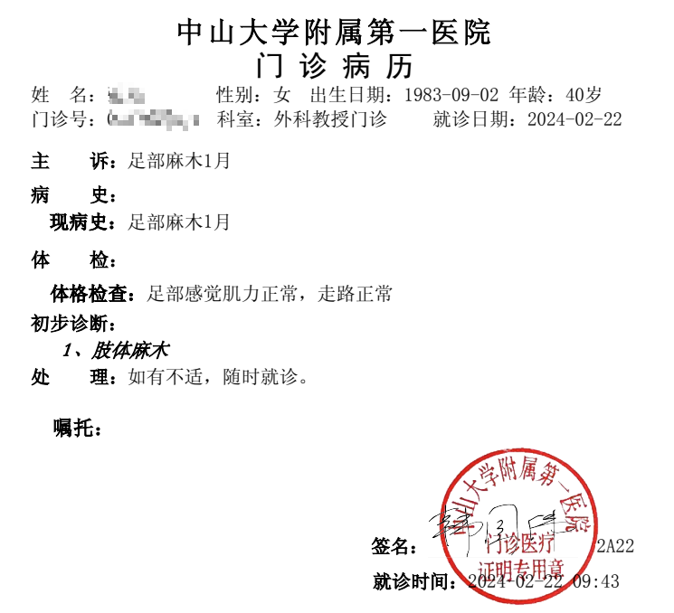
中山大学附属第一医院外科教授门诊复诊病历专业分析报告
就诊基本信息 就诊日期：2024-02-22 09:43 医疗机构：中山大学附属第一医院 外科教授门诊 患者信息：女性，40岁（出生日期：1983-09-02） 就诊类型：外科复诊（距2024-02-07首次就诊15天） 接诊医师：外科教授
一、就诊核心主诉
双侧足部麻木症状持续1月，无明显缓解或加重。
二、完整病史采集
现病史
患者自2024年1月初无明确诱因出现双侧足部麻木，至今病程1月，症状较前无明显变化，未出现麻木范围进一步扩大，无下肢疼痛、无力，无行走不稳，无大小便异常。2024-02-07已完成腰椎3.0T MRI平扫检查，结果提示腰椎轻度骨质增生、腰3/4前上角椎角炎，无椎间盘突出及神经根受压征象。
既往史与系统回顾
患者既往有慢性紧张性头痛合并轻度焦虑抑郁病史（2023-04-18确诊），曾先后出现头痛、头麻、面部麻木、间歇性手足麻木等多种躯体化症状，经心理评估及对症处理后部分缓解。无糖尿病、高血压、甲状腺疾病病史，无长期饮酒史、毒物接触史及周围神经病变家族史。
三、体格检查结果
神经系统专科体格检查示：双侧足部触觉、痛觉、温度觉对称正常，无客观感觉减退或缺失；双下肢肌力5级，肌张力正常；步态平稳，无足下垂、跨阈步态及跛行；生理反射对称存在，病理反射未引出。
四、初步诊断
- 肢体麻木查因：功能性神经症状（躯体化障碍）可能性大
五、诊疗安排与医嘱
一般医嘱
如有不适，随时就诊。
六、临床专业分析与解读
- 关键阴性体征的决定性诊断价值
本次复诊补充的神经系统体格检查结果是本次诊疗的核心依据：足部感觉、肌力及步态完全正常，这一发现具有决定性意义：
- 彻底排除了器质性周围神经病变（如糖尿病周围神经病、营养缺乏性神经病），此类疾病必然存在客观的感觉或运动神经损害体征。
- 排除了脊髓病变、神经根受压及肌肉疾病等可导致下肢麻木的器质性疾病。
- 患者主诉的"麻木"仅为主观感觉异常，无任何可通过客观检查证实的神经结构或功能损伤。
- 主观症状与客观体征分离的临床意义
患者持续存在主观麻木感，但所有客观检查（腰椎MRI、神经系统查体）均无异常发现，这种"主观-客观分离"现象是功能性神经症状障碍（FND） 及躯体化障碍的典型特征。
- 患者的痛苦感受是真实存在的，并非"装病"，而是心理压力、焦虑抑郁情绪通过神经系统转化为躯体症状的表现。
- 结合患者既往长期存在的多种躯体化症状（头麻、面麻、手足麻木）及明确的轻度焦虑抑郁病史，本次足部麻木高度符合上述疾病的自然病程特点。
- 病程特点的鉴别诊断价值
症状持续1月但无任何进展，未出现肌力下降、行走不稳、大小便障碍等器质性疾病的预警征象，与绝大多数器质性神经病变的进行性加重或波动进展的自然史完全不符，进一步支持功能性疾病的诊断。
- 保守观察策略的合理性
本次复诊未开具新的化验或影像学检查，是基于充分的循证依据：
- 腰椎MRI已彻底排除外科范畴的腰椎结构性病变。
- 神经系统查体已排除明确的神经器质性损害。
- 对于症状轻微、无进展且高度怀疑功能性的患者，过度检查不仅无益，反而会增加患者的疾病焦虑，加重躯体化症状。
- "如有不适随时就诊"的医嘱为患者提供了安全保障，同时避免了不必要的医疗资源浪费。
七、个体化诊疗建议
- 短期观察与症状管理
- 继续观察2-4周，多数功能性躯体症状可在数周至数月内自行缓解。
- 建议使用手机或笔记本详细记录麻木发作的时间、持续时长、诱发因素（如情绪波动、劳累、久坐）及缓解方式，为后续诊疗提供客观依据。
- 足部护理：每日用温水泡脚15分钟，进行足部按摩，促进局部血液循环，可在一定程度上缓解主观不适。
- 明确转诊指征与后续检查
若观察期间出现以下任何情况，需立即转诊至神经内科专科就诊，完善相关检查：
- 麻木范围明显扩大至小腿、大腿或躯干
- 出现客观的肢体无力、行走不稳或步态异常
- 出现大小便失禁或排尿、排便困难
- 麻木症状进行性加重，严重影响日常生活
- 神经内科建议完善检查：空腹血糖、糖化血红蛋白、维生素B12、叶酸、甲状腺功能及肌电图+神经传导速度检查。
- 优先启动心理科干预（核心建议）
鉴于患者明确的焦虑抑郁病史及典型的躯体化症状表现，建议立即就诊临床心理专科，进行全面的心理状态评估：
- 接受规范的认知行为治疗（CBT），这是治疗躯体化障碍及功能性神经症状的一线方法，循证医学证据充分。
- 由心理科医生评估是否需要调整抗焦虑抑郁药物治疗方案，足量足疗程的药物治疗可有效减少躯体化症状的发作频率和严重程度。
- 生活方式与情绪调节
- 规律运动：每周进行3-4次中等强度有氧运动（快走、游泳、瑜伽），每次30分钟以上，既能改善情绪，又能缓解躯体不适。
- 压力管理：每日进行10-15分钟正念冥想或深呼吸训练，学习情绪调节技巧，避免过度关注身体的细微感觉。
- 作息管理：保持规律作息，避免熬夜和过度劳累，保证每日7-8小时睡眠。
- 腰椎病变的持续管理
继续坚持之前的腰椎康复训练及姿势管理，预防腰椎退行性改变进展。若后续出现腰骶部疼痛，可短期使用外用非甾体抗炎药或物理治疗缓解症状。
八、急诊预警指征
若出现以下任何紧急情况，请立即前往医院急诊科就诊：
- 突发双侧下肢完全麻木无力，无法站立行走
- 出现大小便失禁或尿潴留
- 同时出现胸痛、呼吸困难、头晕、意识障碍等症状
- 麻木症状在数小时内迅速进展至躯干或上肢
免责声明：本报告仅基于本次门诊病历信息及既往检查结果进行专业分析与解读，不构成最终医学诊断或治疗建议。所有诊疗行为均应在执业医师指导下进行，请严格遵循主诊医师的医嘱。
腰椎MR
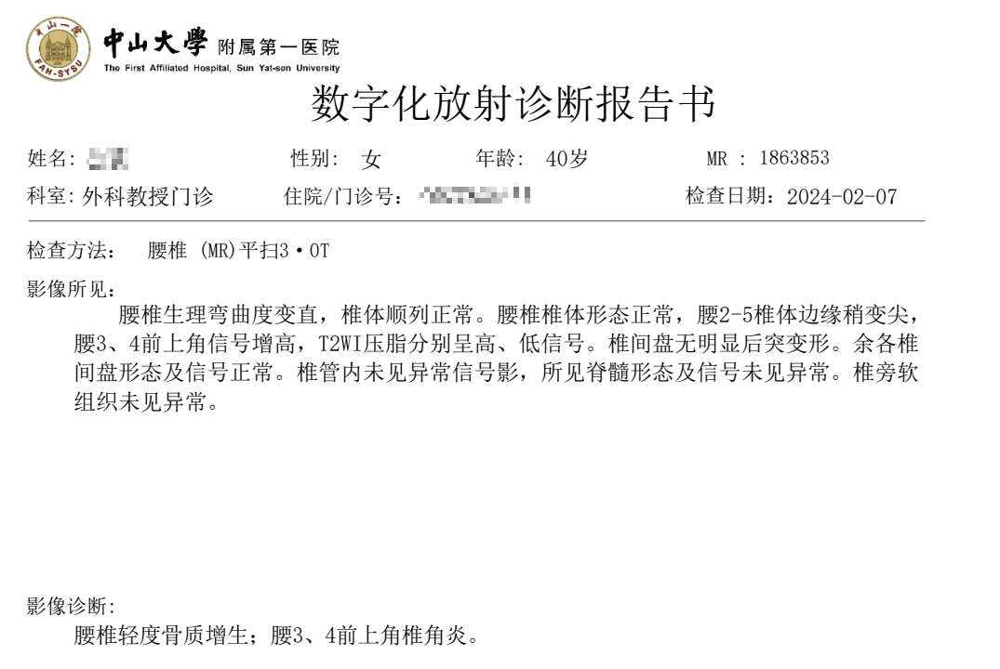
中山大学附属第一医院腰椎MRI数字化放射诊断报告专业分析报告
检查基本信息 检查日期：2024-02-07 医疗机构：中山大学附属第一医院 数字化放射诊断科 患者信息：女性，40岁 就诊科室：外科教授门诊 MR号：1863853 检查方法：腰椎磁共振平扫（3.0T），包含T1WI、T2WI及T2WI压脂序列
一、检查技术与方法说明
3.0T高场强腰椎MRI是评估腰椎结构与软组织病变的金标准检查，无电离辐射，较1.5T MRI具有更高的空间分辨率和信噪比，能更清晰显示椎间盘、椎体终板、脊髓、神经根及椎旁软组织的细微病变。其中T2WI压脂序列可抑制骨髓及皮下脂肪信号，特异性识别水肿、炎症及出血性病变，是诊断椎体终板炎、椎角炎的关键序列。
二、影像所见
- 脊柱序列与形态：腰椎生理弯曲度变直，椎体顺列正常，无滑脱、移位及侧弯畸形；腰椎椎体整体形态正常，无骨折、骨质破坏及椎体压缩改变。
- 椎体骨质：腰2-5椎体边缘稍变尖，提示早期骨质增生（骨赘形成）；腰3、4椎体前上角信号异常，T2WI呈高信号，T2WI压脂序列分别呈高、低信号改变。
- 椎间盘：所有椎间盘形态及信号正常，无明显膨出、突出或脱出变形，未见椎间盘高度降低及真空变性。
- 椎管与脊髓：椎管内未见异常信号影，椎管无狭窄；所见脊髓圆锥及马尾神经形态、信号正常，无受压、变性及占位性病变。
- 椎旁软组织：椎旁肌肉及软组织层次清晰，未见异常信号影，无脓肿、血肿及肿瘤性病变。
三、影像诊断结论
| 序号 | 诊断结果 | 病变性质 | 临床风险分级 |
|---|---|---|---|
| 1 | 腰椎轻度骨质增生（腰2-5椎体） | 生理性退行性改变 | 极低风险 |
| 2 | 腰3、4椎体前上角椎角炎 | 椎体终板及骨髓非特异性炎症/水肿 | 低风险 |
四、异常发现专项解读
1. 腰椎生理弯曲度变直
- 病理机制：正常腰椎呈向前凸的"S"形生理曲度，长期久坐、坐姿不良、核心肌群力量薄弱可导致腰背部肌肉持续性紧张痉挛，牵拉腰椎失去正常曲度。
- 临床意义：是现代久坐人群的常见影像学表现，本身不构成疾病，但会增加椎间盘及椎体终板的负荷，加速腰椎退行性改变进程。本例无椎间盘突出及椎管狭窄，提示目前尚未造成结构性损伤。
- 严重程度：轻度，为可逆性改变，通过姿势矫正及肌肉训练可部分恢复。
2. 腰椎轻度骨质增生（腰2-5椎体）
- 病理机制：40岁人群出现椎体边缘轻度骨质增生属于正常生理性退行性改变，是脊柱为应对长期力学负荷而产生的代偿性骨赘形成，本质是身体对脊柱稳定性下降的自我修复反应。
- 临床意义：轻度骨质增生通常无任何临床症状，不会压迫神经或脊髓，无需特殊治疗。只有当骨赘巨大压迫椎管、神经根或血管时，才会产生相应症状。
- 严重程度：极轻，无需药物或手术干预。
3. 腰3、4椎体前上角椎角炎
- 影像学特征解读：T2WI高信号提示椎体前上角骨髓水肿；T2WI压脂序列呈高低混杂信号，说明病变处于炎症活动期与修复期并存状态，以非特异性炎症为主。
- 可能病因：
- 最常见：长期姿势不良导致椎体前上角反复应力性微损伤，继发无菌性炎症水肿。
- 其次：Modic Ⅰ型改变早期（椎体终板退行性炎症），与椎间盘退变相关，但本例椎间盘形态正常，故可能性较低。
- 罕见：强直性脊柱炎早期、感染性脊柱炎，但本例为单节段椎体前上角受累，无骶髂关节病变，无发热、夜间痛、晨僵等全身症状，可基本排除。
- 临床意义：多数患者表现为慢性腰骶部隐痛、酸胀，久坐、久站或弯腰活动后加重，休息后缓解；部分患者可无明显自觉症状。本例无腰痛主诉，提示炎症程度较轻。
- 严重程度：轻度，无结构性破坏，预后良好。
五、关键临床关联分析（结合患者主诉）
- 腰椎病变与双足麻木无因果关系
- 本次腰椎MRI明确显示：无椎间盘突出、无椎管狭窄、无神经根受压、无脊髓病变。
- 典型的腰椎源性下肢麻木多为单侧或不对称性，沿神经根节段分布，常伴腰痛及下肢放射痛。而患者表现为双侧对称性足底麻木，向上发展，与腰椎病变的症状特点完全不符。
- 结论：双足麻木绝非腰椎疾病所致，彻底排除外科范畴的腰椎机械性压迫病因。
- 结合既往病史的综合判断
- 患者有明确的慢性紧张性头痛合并轻度焦虑抑郁病史，既往曾出现头麻、面麻、间歇性手足麻木等多种躯体化症状。
- 在排除所有器质性腰椎病变后，本次双足麻木高度提示为焦虑抑郁状态加重所致的躯体化感觉异常，或需进一步排查内科系统疾病导致的周围神经病变。
六、个体化诊疗建议
1. 腰椎病变的针对性处理
- 核心康复训练：每日进行15-20分钟核心肌群强化训练，包括臀桥（每组15次，3组）、死虫式（每组10次/侧，3组）、平板支撑（每次30-60秒，3组），增强腰背部肌肉力量，恢复腰椎生理曲度。
- 姿势管理：坐姿时使用腰靠支撑腰部，保持腰椎自然前凸；避免久坐，每30分钟起身活动5分钟；避免弯腰搬重物，如需搬运应屈膝下蹲，用腿部力量发力。
- 睡眠与床垫：选择中等硬度床垫，避免过软床垫导致腰椎塌陷；仰卧时可在膝盖下方垫枕头，侧卧时在双腿间夹枕头，减轻腰椎压力。
- 药物与物理治疗：
- 若无腰痛症状，无需使用任何药物。
- 若后续出现腰骶部酸痛，可短期使用外用非甾体抗炎药（如洛索洛芬钠贴剂），或进行局部热敷、超短波、中频电疗等物理治疗，每次15-20分钟，每日1-2次，缓解局部炎症。
- 随访计划：建议1年后复查腰椎MRI，观察椎角炎信号变化及腰椎退变情况；若无新发症状，无需频繁复查。
2. 双足麻木的进一步诊疗（核心重点）
- 立即转诊：尽快转诊至神经内科专科就诊，进行系统的周围神经病变评估。
- 建议完善检查：
- 代谢筛查：空腹血糖、餐后2小时血糖、糖化血红蛋白（HbA1c）、甲状腺功能（TSH、FT3、FT4）。
- 营养筛查：血清维生素B12、叶酸、维生素B1水平。
- 神经电生理检查：肌电图（EMG）+神经传导速度（NCV），明确是否存在周围神经损伤及其类型。
- 常规筛查：血常规、肝肾功能、电解质。
- 鉴别诊断提示：若上述所有检查均无异常，则可确诊为焦虑抑郁相关的躯体化感觉异常，需就诊临床心理科，调整抗焦虑抑郁治疗方案。
3. 生活方式综合调整
- 足部护理：每日用38-40℃温水泡脚15分钟，促进局部血液循环；选择宽松舒适的鞋袜，避免足部受压。
- 运动干预：推荐游泳（尤其蛙泳）、快走、骑自行车等对腰椎友好的运动，每周3-4次，每次30分钟以上，既能改善腰椎状态，又能缓解焦虑情绪。
- 情绪管理：保持规律作息，避免熬夜和过度劳累；坚持正念冥想、深呼吸训练，每日10-15分钟，有助于缓解焦虑状态，减轻躯体化症状。
七、急诊预警指征
若出现以下任何情况，请立即前往医院急诊科就诊：
- 双下肢麻木范围迅速扩大至大腿、躯干，伴肌力明显下降、行走困难
- 出现大小便失禁或排尿、排便困难
- 突发剧烈腰痛，伴下肢放射痛、麻木无力
- 出现发热、寒战、腰部明显红肿压痛等感染征象
免责声明：本报告仅基于本次影像学检查结果及既往门诊病历信息进行专业分析与解读，不构成最终医学诊断或治疗建议。所有诊疗行为均应在执业医师指导下进行，请严格遵循主诊医师的医嘱。
外科门诊
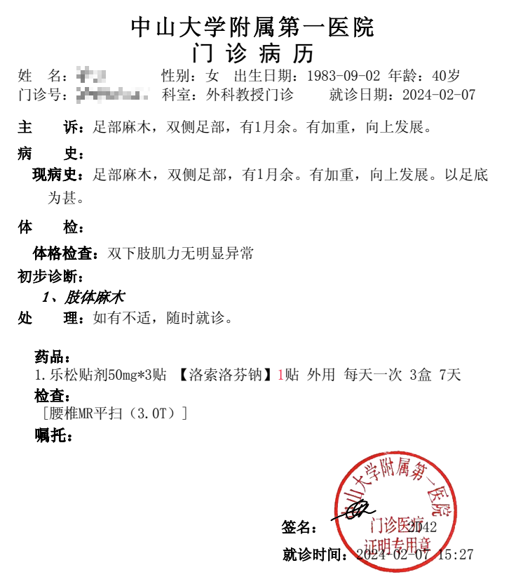
中山大学附属第一医院外科教授门诊病历专业分析报告
就诊基本信息 就诊日期：2024-02-07 15:27 医疗机构：中山大学附属第一医院 外科教授门诊 患者信息：女性，40岁（出生日期：1983-09-02） 就诊类型：首次外科专科就诊 接诊医师：外科教授
一、就诊核心主诉
双侧足部麻木1月余，呈进行性加重并向近端发展，足底麻木最为显著。
二、完整病史采集
现病史
患者近1月无明确诱因出现双侧足部麻木，呈对称性分布，麻木症状以足底为甚；病程中症状呈进行性加重趋势，自觉麻木范围从足部逐渐向小腿方向发展。无明显腰痛、下肢放射痛，无间歇性跛行，无发热、皮疹、关节疼痛，无大小便异常。发病以来，双下肢活动自如，日常行走、上下楼梯未受明显影响。
既往史与系统回顾
本次门诊未记录特殊既往病史、手术史、药物过敏史、毒物接触史、长期饮酒史及周围神经病变相关家族遗传病史。患者既往有慢性紧张性头痛合并轻度焦虑抑郁病史，曾出现头痛、头麻、面麻及间歇性手足麻木等躯体化症状。
三、体格检查结果
体格检查示双下肢肌力无明显异常；本次门诊未详细记录神经系统感觉、反射及病理征等其他体征。
四、初步诊断
- 肢体麻木查因：周围神经病变可能性大
五、诊疗安排与医嘱
辅助检查
- 腰椎磁共振平扫（3.0T）
- 检查目的：系统性排除腰椎间盘突出症、腰椎管狭窄、腰椎滑脱、神经根受压等腰椎退行性结构性病变，明确下肢麻木是否与腰椎机械性压迫相关。
药品处方
| 药品名称 | 规格 | 用法用量 | 疗程 | 临床说明 |
|---|---|---|---|---|
| 洛索洛芬钠贴剂（乐松贴剂） | 50mg/贴 | 外用，1贴/天 | 7天（共3盒9贴） | 外用非甾体抗炎药，主要用于缓解局部肌肉骨骼疼痛及无菌性炎症，对神经源性麻木本身无直接治疗作用 |
一般医嘱
如有不适，随时就诊。
六、临床专业分析与解读
- 症状定位与核心病因指向
- 双侧对称性、远端起病、足底为主的麻木表现，完全符合长度依赖性周围神经病变的典型"袜套样"感觉障碍分布模式。
- 与腰椎神经根受压所致麻木有本质区别：腰椎病变多为单侧或不对称性麻木，常伴腰痛、下肢放射痛，麻木沿特定神经根节段分布，而非双侧对称性足底受累。
- 该类型周围神经病变的常见病因包括：糖尿病及糖尿病前期、维生素B族（B1、B6、B12）缺乏、甲状腺功能减退、药物副作用、自身免疫性疾病等。
- 症状进展的双重解读
- 麻木向上发展的主诉提示两种可能：一是真性周围神经病变呈进展性，病变从最远端的足部神经逐渐向近端神经蔓延；二是患者既往存在明确的焦虑抑郁病史，心理因素导致的躯体化症状放大，使主观感觉的麻木范围扩大。
- 需结合后续腰椎MRI及神经电生理检查结果进行客观鉴别，避免单纯依赖主观症状判断病情。
- 肌力正常的临床意义
- 双下肢肌力无明显异常，提示病变目前仅累及感觉神经纤维，运动神经纤维尚未受累，脊髓及神经根的运动传导功能完整。
- 该体征可基本排除严重的脊髓病变、广泛运动神经元损伤及进展迅速的恶性周围神经病。
- 腰椎MRI检查的必要性评估
- 尽管症状不典型腰椎病变，但腰椎MRI是排除腰骶神经根受压的金标准检查。对于40岁人群，腰椎退行性改变较为常见，通过检查可明确排除腰椎结构性病变导致的下肢麻木，为后续病因诊断提供关键的排除依据。
- 若腰椎MRI结果正常，则可彻底排除外科范畴的腰椎疾病，患者需转诊至神经内科进行系统的周围神经病变评估。
- 药物处方的合理性分析
- 洛索洛芬钠贴剂为外用非甾体抗炎药，全身不良反应发生率低，适用于局部肌肉骨骼疼痛的对症处理。
- 本次处方可能考虑患者存在潜在的腰部肌肉劳损或筋膜炎症，或为经验性对症处理，但需明确告知患者该药无法改善神经源性麻木症状，不可过度依赖。
- 结合既往病史的综合判断
- 患者既往长期存在焦虑抑郁相关的躯体化症状，本次双足麻木需重点鉴别"器质性周围神经病变"与"心理因素介导的躯体化症状扩展"。
- 若后续所有器质性检查均无异常，则高度提示麻木为焦虑抑郁状态加重所致的躯体化表现，需以心理干预和抗焦虑抑郁治疗为主。
七、个体化诊疗建议
- 优先完成影像学检查并正确转诊
- 1周内完成腰椎MR平扫（3.0T）检查，获取结果后优先转诊至神经内科专科就诊，而非继续外科随访，因为周围神经病变属于神经内科核心诊疗范畴。
- 系统性病因学检查（腰椎MRI排除腰椎病变后）
建议在神经内科医生指导下完善以下检查，明确周围神经病变的具体病因：
- 代谢筛查：空腹血糖、餐后2小时血糖、糖化血红蛋白（HbA1c），排查糖尿病及糖尿病前期；甲状腺功能（TSH、FT3、FT4），排查甲状腺功能减退。
- 营养筛查：血清维生素B12、叶酸、维生素B1水平，排查营养缺乏性周围神经病。
- 神经电生理检查：肌电图（EMG）+神经传导速度（NCV），直接评估周围神经的感觉和运动传导功能，明确是否存在周围神经病变及其类型（轴索性/脱髓鞘性）和严重程度。
- 常规筛查：血常规、肝肾功能、电解质，排除其他系统性疾病。
- 对症处理与症状管理
- 药物使用：遵医嘱使用洛索洛芬钠贴剂，仅贴于有明确疼痛的部位，若出现皮肤发红、瘙痒、皮疹等过敏反应立即停用。
- 症状记录：用笔画出每日麻木的具体范围，记录发作时间、加重及缓解因素，为医生诊断提供客观依据，避免主观描述偏差。
- 预防性营养补充：在检查结果出来前，可常规补充复合维生素B族（含B1、B6、B12），每日1次，有助于神经修复，安全性高。
- 多学科联合诊疗建议
- 若检查证实存在器质性周围神经病变，由神经内科制定针对性病因治疗及营养神经治疗方案。
- 若所有器质性检查均无异常，或同时存在焦虑情绪加重、睡眠障碍等情况，需同步就诊临床心理科，评估心理状态，必要时调整抗焦虑抑郁治疗方案，打破"焦虑-躯体化症状"的恶性循环。
- 生活方式调整
- 足部护理：避免长时间站立或行走，选择宽松、透气、舒适的鞋袜，减少足部压迫；每日用38-40℃温水泡脚15-20分钟，促进局部血液循环。
- 运动干预：每周进行3-4次中等强度有氧运动，如快走、游泳、骑自行车，每次30分钟以上，可改善神经微循环，缓解麻木症状。
- 作息管理：保持规律作息，避免熬夜和过度劳累，戒烟限酒。
八、急诊预警指征
若出现以下任何情况，请立即前往医院急诊科就诊：
- 麻木范围迅速扩大至小腿、大腿甚至躯干
- 出现双下肢肌力明显下降、行走困难或步态不稳
- 出现大小便失禁或排尿、排便困难
- 同时出现发热、皮疹、关节肿痛、体重明显下降等全身症状
免责声明：本报告仅基于本次门诊病历信息进行专业分析与解读，不构成最终医学诊断或治疗建议。所有诊疗行为均应在执业医师指导下进行，请严格遵循主诊医师的医嘱。
颅脑MRA
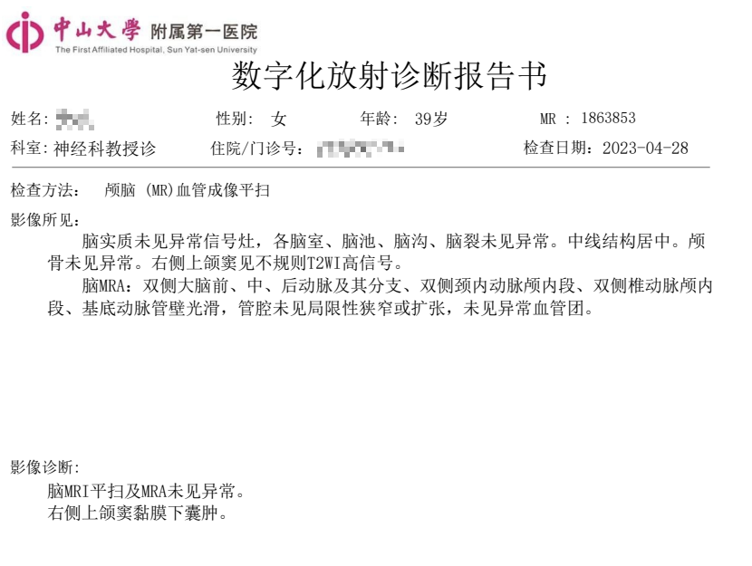
中山大学附属第一医院颅脑MRI+MRA数字化放射诊断报告专业分析报告
检查基本信息 检查日期：2023-04-28 医疗机构：中山大学附属第一医院 数字化放射诊断科 患者信息：女性，39岁 就诊科室：神经科教授诊 MR号：1863853 检查方法：颅脑磁共振平扫（MRI）+ 时间飞跃法磁共振血管成像（TOF-MRA）平扫
一、检查技术与方法说明
- 颅脑MRI平扫：利用强磁场和射频脉冲生成脑组织高分辨率断层图像，可清晰显示脑实质、脑室系统、脑沟脑裂、中线结构及颅骨，对颅内肿瘤、梗死、出血、炎症、脱髓鞘病变等结构性病变具有极高的诊断敏感性和特异性，无电离辐射，是中枢神经系统疾病的首选影像学检查。
- TOF法脑MRA平扫：无需注射造影剂，通过血液流动效应无创显示颅内动脉系统，可清晰评估双侧颈内动脉颅内段、大脑前/中/后动脉、椎动脉颅内段及基底动脉的管壁形态、管腔通畅度，是筛查颅内动脉瘤、血管畸形、动脉狭窄等血管性病变的安全、有效手段。
二、影像所见
1. 脑实质与颅内结构
脑实质未见异常信号灶；各脑室、脑池、脑沟、脑裂形态、大小及位置未见异常；中线结构居中；颅骨骨质结构完整，未见异常信号。
2. 副鼻窦
右侧上颌窦可见不规则T2WI高信号影。
3. 脑血管（MRA）
双侧大脑前动脉、大脑中动脉、大脑后动脉及其分支走行自然，管壁光滑，管腔未见局限性狭窄或扩张；双侧颈内动脉颅内段、双侧椎动脉颅内段及基底动脉显影清晰，未见异常；未见异常血管团及侧支循环形成。
三、影像诊断结论
| 序号 | 诊断结果 | 病变性质 | 临床风险分级 |
|---|---|---|---|
| 1 | 脑MRI平扫及脑MRA未见异常 | 正常生理表现 | 无风险 |
| 2 | 右侧上颌窦黏膜下囊肿 | 良性潴留性病变 | 极低风险（无症状） |
四、异常发现专项解读：右侧上颌窦黏膜下囊肿
- 病理与流行病学：上颌窦黏膜下囊肿是鼻窦最常见的良性病变，普通人群发生率约10%~35%，绝大多数为鼻窦黏液腺管阻塞导致的黏液潴留囊肿，少数为先天性黏膜下积液。病变生长极其缓慢，无恶变潜能。
- 临床表现：90%以上患者无任何自觉症状，仅在头颅影像学检查时偶然发现。仅当囊肿体积巨大（占据上颌窦腔2/3以上）或合并细菌感染时，才可能出现同侧鼻塞、面部胀痛、流脓涕等鼻窦炎相关症状。
- 与本次头痛的关联：无直接因果关系。本次影像提示囊肿仅为不规则T2WI高信号，说明体积较小，未压迫窦壁或周围神经结构，不会引起患者的弥漫性头痛、头麻及多部位躯体麻木症状。
- 处理原则：无症状者无需任何药物或手术治疗。
五、临床意义深度分析（结合患者既往病史）
- 彻底排除所有严重颅内器质性头痛病因
- 脑实质层面：完全排除颅内肿瘤、脑梗死、脑出血、脑炎、多发性硬化等脱髓鞘疾病、脑积水、脑萎缩等结构性病变。
- 脑血管层面：全面排除脑动脉瘤、脑血管畸形、动脉粥样硬化性狭窄、烟雾病等可导致致命性头痛的血管性病变。
- 颅骨及中线结构正常，排除颅骨病变、脑移位等继发性改变。
- 明确功能性/心因性头痛的核心诊断地位
- 结合患者2023-04-18神经科门诊病史：慢性头痛1年，症状逐渐固定于后枕及头顶部，伴间歇性面麻、手足麻木、恶心，神经系统体格检查无阳性体征，心理量表提示轻度焦虑抑郁，结合本次影像学完全正常的结果，可确诊为慢性紧张性头痛伴偏头痛样发作（混合型头痛）合并轻度焦虑抑郁状态。
- 至此，所有可能导致头痛的器质性病因已全部排除，心理应激介导的中枢痛觉敏化、颅周肌肉持续性紧张及自主神经功能紊乱是患者症状的唯一核心驱动因素。
- 澄清躯体化症状的本质
- 患者此前担忧的面麻、手足麻木等症状，并非周围神经或中枢神经器质性损伤所致，而是焦虑状态下典型的躯体化表现，与过度换气导致的呼吸性碱中毒、神经末梢兴奋性增高直接相关，随着焦虑抑郁状态的改善可自行缓解。
六、个体化医学建议
- 认知调整与心理负担缓解
- 明确颅内无任何严重病变，头痛并非由“脑瘤”“血管破裂”等致命疾病引起，彻底消除不必要的疾病恐惧和过度担忧，这是打破“焦虑-头痛”恶性循环的关键第一步。
- 右侧上颌窦黏膜下囊肿的随访与处理
- 目前无症状，无需任何治疗，无需服用抗生素、鼻用糖皮质激素等药物。
- 若后续出现持续性同侧鼻塞、面部胀痛、流脓涕等症状，可就诊耳鼻喉科，必要时行鼻窦CT平扫评估囊肿大小及范围，再决定是否需要干预。
- 每年常规健康体检时可顺带关注，无需为此单独复查影像学。
- 头痛的规范化联合治疗
- 立即启动神经科与临床心理科联合诊疗，这是慢性心因性头痛的标准治疗方案。
- 药物治疗：优先选择兼具抗焦虑、抗抑郁及头痛预防作用的一线药物，如盐酸文拉法辛缓释片、盐酸度洛西汀肠溶胶囊或小剂量盐酸阿米替林，需在医生指导下从小剂量起始，逐渐调整至有效剂量，维持疗程至少6~12个月，不可自行减药或停药。
- 非药物治疗：坚持认知行为治疗（CBT）、渐进式肌肉放松训练及腹式呼吸训练；每周进行3~4次中等强度有氧运动（快走、游泳、瑜伽），每次30分钟以上，可显著降低头痛发作频率，改善情绪状态。
- 急性期止痛：头痛急性发作影响生活时，可短期使用对乙酰氨基酚，单次剂量≤500mg，每日≤2次，每周累计使用≤3次，严格避免长期大量使用导致药物过量性头痛。
- 影像学随访原则
- 未来1~2年内，如无新发神经系统症状（如突发炸裂样剧烈头痛、肢体无力、言语不清、视力下降、癫痫发作等），无需重复进行颅脑MRI或MRA检查。
- 避免跨医院重复相同的影像学检查，以免增加不必要的经济负担和心理焦虑。
七、急诊预警指征
若出现以下任何情况，请立即前往医院急诊科就诊：
- 突发剧烈头痛，呈炸裂样，伴频繁呕吐、意识障碍
- 头痛同时出现单侧肢体麻木无力、言语不清、视物模糊
- 发热伴剧烈头痛、颈部僵硬、畏光
- 头部外伤后出现的头痛进行性加重
免责声明：本报告仅基于本次影像学检查结果及既往门诊病历信息进行专业分析与解读，不构成最终医学诊断或治疗建议。所有诊疗行为均应在执业医师指导下进行，请严格遵循主诊医师的医嘱。
神经门诊
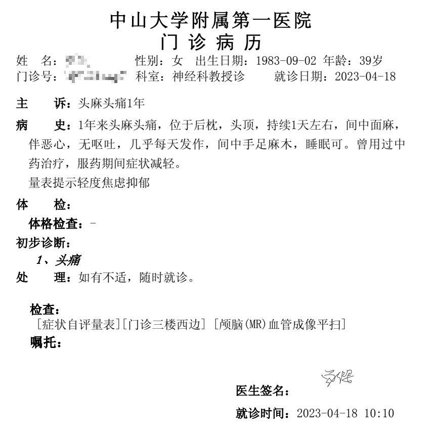
中山大学附属第一医院神经科教授诊门诊病历专业分析报告
就诊基本信息 就诊日期：2023-04-18 10:10 医疗机构：中山大学附属第一医院 神经科教授诊 患者信息：女性，39岁（出生日期：1983-09-02） 就诊类型：专科复诊（距2022-06-08首次就诊约10个月） 接诊医师：神经科教授
一、就诊核心主诉
发作性头麻伴头痛1年，症状较前加重并出现多部位躯体麻木。
二、完整病史采集
现病史
患者近1年无明确诱因出现头麻伴头痛，症状较首次就诊时发生显著演变：疼痛及麻木部位由弥漫不定逐渐固定于后枕部及头顶部；单次发作持续时间延长至约1天；发作频率增加至几乎每日发作。新增伴随症状包括间歇性面部麻木、间歇性手足麻木，发作时伴恶心，无呕吐、畏光、畏声、视力模糊、肢体无力等。睡眠质量尚可，头痛未明显影响入睡。既往曾接受中药治疗，服药期间症状可减轻，但停药后症状复发。本次就诊行初步心理量表筛查，提示存在轻度焦虑抑郁状态。
既往史与系统回顾
本次门诊未记录特殊既往病史、手术史、药物过敏史、毒物接触史及头痛相关家族遗传病史。
三、体格检查结果
神经系统体格检查未见异常阳性体征：神志清楚，言语流利，高级皮层功能正常；颅神经检查未见异常；四肢肌力、肌张力对称正常，共济运动协调；深浅感觉对称存在；生理反射对称引出，病理反射未引出；脑膜刺激征阴性；颈软，无抵抗，颈椎活动无受限。
四、初步诊断
- 慢性紧张性头痛伴偏头痛样发作（混合型头痛）
- 轻度焦虑抑郁状态
五、诊疗安排与医嘱
辅助检查
- 症状自评量表（门诊三楼西边）
- 检查内容：建议完善90项症状清单（SCL-90）、患者健康问卷-9（PHQ-9）、广泛性焦虑障碍量表-7（GAD-7）
- 检查目的：量化评估焦虑、抑郁及躯体化症状的严重程度，建立心理状态基线数据，指导后续干预方案制定。
- 颅脑磁共振平扫（MRI）+磁共振血管成像（MRA）
- 检查目的：① 若2022-06-08开具的检查未完成，系统性排除颅内结构性及血管性病变；② 若已完成首次检查，复查以排除10个月病程中可能出现的新发隐匿性病变，同时完善颅内血管（尤其是椎动脉系统）评估，鉴别颈源性头痛等易漏诊病因。
一般医嘱
如有不适，随时就诊。
六、临床专业分析与解读
- 症状演变的临床意义与诊断指向
- 疼痛部位由弥漫性转为后枕、头顶部固定，符合慢性紧张性头痛的典型自然病程，与长期颅周肌肉（尤其是枕下肌群、颈后肌群）持续性紧张、痉挛直接相关。
- 新增恶心症状提示头痛类型可能向混合型演变，即紧张性头痛基础上合并偏头痛样发作，但无呕吐、畏光畏声等典型偏头痛核心症状，故不支持单纯偏头痛诊断。
- 间歇性面麻、手足麻木为焦虑状态下常见的躯体化表现，多由过度换气导致呼吸性碱中毒、周围血管收缩及神经末梢兴奋性增高引起，而非器质性周围神经或中枢神经损伤，其“多部位、游走性、间歇性”的特点与器质性神经病变的“固定性、进行性、局灶性”特征有本质区别。
- 心理共病的核心致病作用
- 本次筛查发现的轻度焦虑抑郁状态是本次症状加重的关键驱动因素。慢性头痛与心理障碍之间存在明确的双向恶性循环：焦虑抑郁可通过降低中枢疼痛阈值、增强痛觉敏化作用使头痛发作更频繁、程度更重；而长期慢性头痛又会显著增加心理负担，进一步恶化焦虑抑郁症状。
- 患者的多部位躯体麻木症状本质上是心理困扰的躯体化表达，单纯针对头痛的止痛治疗往往效果不佳，必须同步干预心理问题才能打破恶性循环。
- 治疗反应的诊断价值
- 中药治疗期间症状减轻，进一步支持功能性头痛（心因性/紧张性）的诊断。颅内器质性病变（如肿瘤、血管畸形）所致的头痛通常对中药治疗反应有限，且呈进行性加重趋势，与本患者表现不符。
- 重复影像学检查的循证依据
- 尽管首次就诊已开具颅脑MRI+MRA检查，但本次复查具有明确临床必要性：① 部分患者可能因各种原因未完成首次检查，需补做以排除基础器质性病变；② 即使首次检查正常，10个月的病程中仍存在出现新发隐匿性病变的可能；③ 完善血管成像可排除椎动脉狭窄、夹层等血管性病因，这些病变也可表现为后枕部头痛伴麻木。
- 若本次影像学检查结果正常，可基本排除颅内器质性病变，后续无需再重复相同检查。
- 主要鉴别诊断要点
- 颈源性头痛：多有颈椎病史，疼痛由颈部活动诱发，伴颈部压痛及活动受限，本患者无相关体征，暂不支持，可通过颈椎MRI进一步排除。
- 多发性硬化：多表现为反复发作的局灶性神经功能缺损，如肢体无力、感觉障碍、视力下降等，症状持续24小时以上且呈进展性，与本患者表现不符。
- 周围神经病：多表现为对称性远端肢体麻木，呈持续性，可伴肌力减退，本患者为间歇性多部位麻木，无肌力异常，可基本排除。
七、系统化诊疗建议
- 优先完成辅助检查
- 1周内完成症状自评量表评估及颅脑MRI+MRA检查，获取全部结果后3日内返回神经科复诊，明确最终诊断并调整治疗方案。
- 启动神经科与心理科联合诊疗
- 心理科转诊：建议同时就诊临床心理专科，接受专业的认知行为治疗（CBT），这是慢性头痛合并焦虑抑郁的一线非药物治疗手段，循证医学证据充分。
- 药物治疗：
- 预防性用药：优先选择兼具抗焦虑、抗抑郁及头痛预防作用的药物，如盐酸阿米替林（小剂量起始，每晚12.5mg，逐渐加量）或盐酸文拉法辛缓释片，可同时改善头痛、焦虑抑郁及躯体化症状。
- 急性期用药：头痛急性发作时，可短期使用对乙酰氨基酚止痛，单次剂量不超过500mg，每日不超过2次，每周累计使用不超过3次，严格避免长期大量使用导致药物过量性头痛。
- 避免单纯使用止痛药物，否则会加重头痛慢性化进程。
- 强化生活方式与行为干预
- 颅周肌肉放松：每日进行2-3次颈部拉伸及热敷（每次15分钟），避免长时间低头伏案，每工作45分钟起身活动5-10分钟。
- 呼吸训练：学习腹式呼吸法，出现麻木及头痛先兆时，立即进行缓慢深呼吸（每分钟6-8次），每次5-10分钟，可有效缓解过度换气引起的躯体症状。
- 规律运动：每周进行3-4次中等强度有氧运动（如快走、游泳、瑜伽），每次30分钟以上，可显著降低头痛发作频率，改善情绪状态。
- 饮食调整：继续减少咖啡因、浓茶、酒精及辛辣刺激性食物摄入，避免诱发头痛。
- 建立长期随访管理
- 固定神经科及心理科医师进行长期随访，初始每月复诊1次，症状稳定后可延长至每3个月复诊1次，根据病情变化及时调整治疗方案。
- 继续坚持记录头痛日记，详细记录发作时间、诱因、症状及用药情况，为治疗调整提供客观依据。
- 避免不必要的重复影像学检查或跨医院多科室就诊，以免增加心理负担和经济成本。
- 急诊预警指征
- 若出现突发剧烈头痛、头痛程度骤增、频繁呕吐、肢体无力、言语不清、意识障碍等症状，需立即前往急诊科就诊。
免责声明：本报告仅基于本次门诊病历信息进行专业分析与解读，不构成最终医学诊断或治疗建议。所有诊疗行为均应在执业医师指导下进行，请严格遵循主诊医师的医嘱。
神经门诊
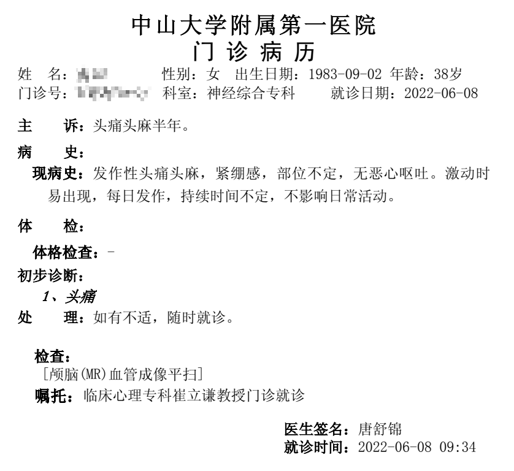
中山大学附属第一医院神经综合专科门诊病历专业分析报告
就诊基本信息 就诊日期：2022-06-08 09:34 医疗机构：中山大学附属第一医院 神经综合专科 患者信息：女性，38岁（出生日期：1983-09-02） 接诊医师：唐舒锦 就诊类型：首次专科就诊
一、就诊核心主诉
发作性头痛伴头麻半年，情绪激动为明确诱发因素。
二、完整病史采集
现病史
患者近半年无明确前驱诱因出现发作性头痛伴头麻，疼痛性质为头部弥漫性紧绷感，无固定疼痛部位；发作时无恶心、呕吐，无畏光、畏声、视力模糊等伴随症状。症状与情绪波动高度相关，情绪激动时极易诱发，每日均有发作，每次持续时间长短不一。发病以来，日常工作、生活及社会活动未受明显影响，无进行性加重趋势。
既往史与系统回顾
本次门诊未记录特殊既往病史、手术史、药物过敏史、毒物接触史及头痛相关家族遗传病史。
三、体格检查结果
神经系统体格检查未见异常阳性体征：神志清楚，言语流利，定向力、计算力正常；颅神经检查未见异常；四肢肌力、肌张力对称正常，共济运动协调；生理反射对称存在，病理反射未引出；脑膜刺激征阴性。
四、初步诊断
- 头痛（慢性紧张性头痛可能性大，偏头痛及器质性头痛待排除）
五、诊疗安排与医嘱
辅助检查
- 颅脑磁共振平扫（MRI）+磁共振血管成像（MRA）
- 检查目的：系统性排除颅内器质性病变，包括但不限于颅内肿瘤、脑血管畸形、颅内动脉瘤、静脉窦血栓形成、脱髓鞘病变、慢性硬膜下血肿等可能导致头痛的结构性或血管性病因。
专科转介
- 转介至临床心理专科崔立谦教授门诊进一步评估
- 转介指征：症状与情绪因素高度相关，考虑存在焦虑、抑郁等心理共病或躯体形式障碍可能，需进行心理状态量化评估及多维度综合干预。
一般医嘱
如有不适，随时就诊。
六、临床专业分析与解读
- 慢性紧张性头痛的核心诊断依据（符合ICHD-3国际头痛分类标准）
- 症状学匹配：头痛表现为双侧、非搏动性紧绷感或压迫感，部位不固定，无恶心呕吐，无畏光畏声，完全符合紧张性头痛的典型临床表现。
- 病程与发作频率：每日发作，病程持续6个月，符合慢性紧张性头痛（病程≥3个月，每月发作≥15天）的分型标准。
- 发病机制契合：情绪激动为主要诱发因素，与紧张性头痛的核心发病机制（中枢敏化、颅周肌肉持续性紧张、心理应激介导的神经内分泌紊乱）高度一致。
- 功能影响轻微：日常活动不受限，进一步支持原发性良性头痛的诊断。
- 器质性头痛的低风险分层评估
- 无"红旗征"预警：患者无突发剧烈头痛、头痛进行性加重、晨起头痛、体位相关性头痛，无发热、体重下降等全身症状，无神经系统局灶缺损体征，颅内器质性病变概率极低。
- 影像学检查的必要性：颅脑MRI+MRA为慢性头痛的标准化排查手段，虽阳性预测值低，但可排除罕见但危及生命的隐匿性病因，是保障医疗安全的必要规范流程。
- 心理因素在病程中的关键作用
- 38岁女性处于职业与家庭双重压力高峰期，是慢性心身疾病的高发人群。
- 情绪相关性慢性头痛常与焦虑障碍、抑郁障碍或躯体形式障碍共病，单纯止痛治疗效果不佳且易导致药物过量性头痛，需结合心理干预才能获得长期稳定缓解。
- 主要鉴别诊断要点
- 偏头痛：典型偏头痛表现为单侧搏动性头痛，伴恶心呕吐、畏光畏声，活动后加重，与本患者症状不符，故可能性极低，仅作为鉴别诊断保留。
- 丛集性头痛：表现为单侧眼眶周围剧烈疼痛，伴流泪、流涕、瞳孔缩小等自主神经症状，发作具有严格周期性，与本患者表现不符，可基本排除。
- 颈源性头痛：多有颈部外伤或颈椎病病史，疼痛由颈部活动诱发，伴颈部压痛及活动受限，本次体格检查无相关体征，暂不支持。
七、系统化诊疗建议
- 优先完成辅助检查
- 尽快预约并完成颅脑MRI+MRA检查，获取影像学结果后3日内返回神经专科复诊，明确最终诊断。
- 规范完成心理专科评估
- 按时就诊临床心理专科，完成焦虑自评量表（SAS）、抑郁自评量表（SDS）及躯体化症状量表（SCL-90）评估，根据评估结果接受认知行为治疗、渐进式放松训练或必要的精神药物干预。
- 建立标准化头痛日记
- 详细记录每次头痛的发作日期、开始时间、持续时长、诱发因素（如情绪、睡眠、饮食、活动）、疼痛程度（采用数字评分法NRS 0-10分）、缓解方式及用药情况，为后续诊断调整和疗效评估提供客观依据。
- 生活方式与行为干预
- 睡眠管理：保持规律作息，每日保证7-8小时睡眠，避免熬夜和午睡时间超过30分钟。
- 压力管理：每日进行15-20分钟腹式呼吸、正念冥想或渐进式肌肉放松训练，学习情绪调节技巧。
- 颈部护理：避免长时间低头伏案，每工作1小时起身活动5-10分钟，每日进行3组颈部拉伸运动，必要时可予颈部温热敷（每次15-20分钟，每日2-3次）。
- 饮食调整：减少咖啡因、浓茶、酒精及辛辣刺激性食物摄入，避免暴饮暴食和不规律进食。
- 药物使用规范
- 急性期止痛：若头痛程度加重（NRS评分≥4分）影响生活，可在医生指导下短期使用对乙酰氨基酚，单次剂量不超过500mg，每日不超过2次，每周累计使用不超过3次，避免长期大量使用导致药物过量性头痛。
- 预防性用药：待明确诊断后，若头痛发作频繁且影响生活质量，可在神经科及心理科医生共同指导下使用预防性药物。
- 随访计划
- 完成影像学检查及心理评估后1周内返回神经综合专科复诊，制定个体化长期治疗方案。
- 若出现头痛性质改变、程度骤增、出现恶心呕吐、肢体麻木无力、言语不清等新症状，需立即急诊就诊。
免责声明：本报告仅基于本次门诊病历信息进行专业分析与解读，不构成最终医学诊断或治疗建议。所有诊疗行为均应在执业医师指导下进行，请严格遵循主诊医师的医嘱。